<!doctype html>
<html lang="zh-CN">
<head>
  <meta charset="utf-8">
  <meta name="viewport" content="width=device-width, initial-scale=1">
  <title>天文论文日报 2026-08-27</title>
  <style>
    :root {
      color-scheme: light;
      --bg: #eef3fb;
      --panel: #ffffff;
      --panel-soft: #f8fbff;
      --text: #172033;
      --muted: #65758b;
      --line: #dce6f2;
      --blue: #2563eb;
      --blue-dark: #1e40af;
      --cyan: #0891b2;
      --amber: #d97706;
      --shadow: 0 18px 50px rgba(30, 64, 175, 0.12);
    }
    * { box-sizing: border-box; }
    html { scroll-behavior: smooth; }
    body {
      margin: 0;
      background:
        radial-gradient(circle at top left, rgba(37, 99, 235, 0.16), transparent 32rem),
        radial-gradient(circle at top right, rgba(8, 145, 178, 0.12), transparent 28rem),
        var(--bg);
      color: var(--text);
      font-family: Inter, ui-sans-serif, system-ui, -apple-system, BlinkMacSystemFont, "Segoe UI", "Noto Sans CJK SC", "Microsoft YaHei", sans-serif;
      line-height: 1.75;
    }
    a { color: var(--blue); text-decoration-thickness: 0.08em; text-underline-offset: 0.18em; word-break: break-word; }
    a:hover { color: var(--blue-dark); }
    .page { max-width: 1080px; margin: 0 auto; padding: 32px 18px 56px; }
    .hero {
      position: relative;
      overflow: hidden;
      padding: 34px;
      border-radius: 28px;
      background: linear-gradient(135deg, #12213f 0%, #1d4ed8 52%, #0891b2 100%);
      color: #fff;
      box-shadow: var(--shadow);
    }
    .hero::after {
      content: "";
      position: absolute;
      inset: auto -80px -150px auto;
      width: 320px;
      height: 320px;
      border-radius: 999px;
      background: rgba(255, 255, 255, 0.14);
    }
    .report-nav { display: flex; justify-content: space-between; gap: 1rem; margin: 18px 0 0; }
    .report-nav a,
    .report-nav span { flex: 1; padding: 0.85rem 1rem; border: 1px solid var(--line); border-radius: 16px; background: rgba(255, 255, 255, 0.86); box-shadow: 0 10px 24px rgba(30, 64, 175, 0.08); text-decoration: none; font-weight: 700; }
    .report-nav .home { text-align: center; }
    .report-nav .next { text-align: right; }
    .report-nav span { color: var(--muted); background: rgba(248, 251, 255, 0.78); }
    .eyebrow { margin: 0 0 10px; color: rgba(255, 255, 255, 0.78); font-size: 0.95rem; letter-spacing: 0.08em; text-transform: uppercase; }
    h1 { position: relative; margin: 0; max-width: 760px; font-size: clamp(2rem, 5vw, 3.2rem); line-height: 1.15; }
    .subtitle { position: relative; max-width: 760px; margin: 16px 0 0; color: rgba(255, 255, 255, 0.86); font-size: 1.05rem; }
    main {
      margin-top: 22px;
      padding: 28px;
      border: 1px solid rgba(220, 230, 242, 0.9);
      border-radius: 24px;
      background: rgba(255, 255, 255, 0.92);
      box-shadow: var(--shadow);
      backdrop-filter: blur(10px);
    }
    main > p:first-child,
    main > p:nth-child(2) { color: var(--muted); }
    h2 {
      margin: 2.4rem 0 1rem;
      padding: 0.8rem 1rem;
      border: 1px solid var(--line);
      border-left: 6px solid var(--blue);
      border-radius: 16px;
      background: linear-gradient(90deg, #eff6ff, #ffffff);
      font-size: 1.45rem;
      line-height: 1.35;
    }
    h2:first-child { margin-top: 0; }
    h3 {
      margin: 2rem 0 1rem;
      padding: 1.15rem 1.25rem;
      border: 1px solid #bfdbfe;
      border-radius: 18px;
      background: linear-gradient(135deg, #f8fbff, #eef6ff);
      box-shadow: 0 10px 24px rgba(37, 99, 235, 0.08);
      font-size: 1.18rem;
      line-height: 1.45;
    }
    h4 { margin: 1.25rem 0 0.5rem; color: #0f3b7a; font-size: 1.02rem; }
    ul, ol { padding-left: 1.35rem; }
    li { margin: 0.3rem 0; }
    main > ul {
      padding: 1rem 1.2rem 1rem 2.2rem;
      border: 1px solid var(--line);
      border-radius: 14px;
      background: var(--panel-soft);
    }
    strong { color: #0f2f5f; }
    blockquote {
      margin: 1rem 0;
      padding: 0.9rem 1rem;
      border: 1px solid #fed7aa;
      border-left: 5px solid #f97316;
      border-radius: 12px;
      background: #fff7ed;
      color: #7c2d12;
    }
    code { background: #eaf1fb; padding: 0.12rem 0.3rem; border-radius: 6px; }
    table { width: 100%; border-collapse: collapse; margin: 1rem 0; overflow: hidden; border-radius: 12px; }
    th, td { padding: 0.75rem; border: 1px solid var(--line); vertical-align: top; }
    th { background: #eff6ff; }
    mjx-container { overflow-x: auto; overflow-y: hidden; max-width: 100%; padding: 0.25rem 0; }
    .math-display { margin: 1rem 0; overflow-x: auto; padding: 0.75rem 1rem; border: 1px solid #dbeafe; border-radius: 14px; background: #f8fbff; }
    main img { max-width: 100%; height: auto; display: block; margin: 1rem auto; border: 1px solid var(--line); border-radius: 14px; box-shadow: 0 10px 24px rgba(15, 47, 95, 0.12); }
    details.paper-detail {
      margin: 1.25rem 0 1.9rem;
      border: 1px solid #b9d7ff;
      border-radius: 18px;
      background: linear-gradient(180deg, #fbfdff, #f3f8ff);
      box-shadow: 0 10px 24px rgba(37, 99, 235, 0.08);
      overflow: hidden;
    }
    details.paper-detail[open] { border-color: #60a5fa; }
    details.paper-detail > summary {
      cursor: pointer;
      list-style: none;
      padding: 1rem 1.15rem;
      background: linear-gradient(90deg, #dbeafe, #ecfeff);
      color: #173b73;
      font-weight: 800;
    }
    details.paper-detail > summary::-webkit-details-marker { display: none; }
    details.paper-detail summary::before { content: "展开"; display: inline-block; margin-right: 0.65rem; padding: 0.12rem 0.5rem; border-radius: 999px; background: #2563eb; color: #fff; font-size: 0.78rem; }
    details.paper-detail[open] summary::before { content: "收起"; background: #0891b2; }
    details.paper-detail > *:not(summary) { margin-left: 1.15rem; margin-right: 1.15rem; }
    details.paper-detail > :last-child { margin-bottom: 1.2rem; }
    details.paper-detail h4 {
      margin-top: 1.15rem;
      padding-top: 1rem;
      border-top: 1px dashed #bfdbfe;
    }
    details.paper-subdetail {
      margin: 1rem 1.15rem 1.35rem;
      border: 1px solid #d8e8ff;
      border-radius: 14px;
      background: rgba(255, 255, 255, 0.72);
      overflow: hidden;
    }
    details.paper-subdetail[open] { border-color: #93c5fd; }
    details.paper-subdetail > summary {
      cursor: pointer;
      list-style: none;
      padding: 0.75rem 0.9rem;
      background: #f1f7ff;
      color: #234d83;
      font-weight: 750;
    }
    details.paper-subdetail > summary::-webkit-details-marker { display: none; }
    details.paper-detail details.paper-subdetail > summary::before { content: "展开"; display: inline-block; margin-right: 0.55rem; padding: 0.08rem 0.42rem; border-radius: 999px; background: #64748b; color: #fff; font-size: 0.74rem; }
    details.paper-detail details.paper-subdetail[open] > summary::before { content: "收起"; background: #2563eb; }
    details.paper-subdetail > *:not(summary) { margin-left: 0.95rem; margin-right: 0.95rem; }
    details.paper-subdetail > :last-child { margin-bottom: 1rem; }
    @media (max-width: 720px) {
      .page { padding: 18px 10px 36px; }
      .hero { padding: 24px 20px; border-radius: 22px; }
      .report-nav { flex-direction: column; }
      .report-nav .home { text-align: left; }
      .report-nav .next { text-align: left; }
      main { padding: 18px 14px; border-radius: 20px; }
      h2 { font-size: 1.25rem; }
      h3 { font-size: 1.05rem; }
    }
  </style>
  <script>
    window.MathJax = {
      tex: { inlineMath: [['$', '$'], ['\\(', '\\)']], displayMath: [['$$', '$$'], ['\\[', '\\]']] },
      svg: { fontCache: 'global' }
    };
  </script>
  <script defer src="https://cdn.jsdelivr.net/npm/mathjax@3/es5/tex-svg.js"></script>
</head>
<body>
  <div class="page">
    <header class="hero">
      <p class="eyebrow">Astro Daily</p>
      <h1>天文论文日报 2026-08-27</h1>
      <p class="subtitle">面向天文与物理专业读者的每日论文筛选、中文解读与延伸阅读。</p>
    </header>
    <!-- REPORT_NAV_START -->
    <nav class="report-nav" aria-label="日报前后导航" data-report-date="2026-08-27">
      <a class="previous" href="2026-08-26.html">← 上一期：2026-08-26</a>
      <a class="home" href="../index.html">⌂ 返回主页</a>
      <span class="next">没有更新的报告 →</span>
    </nav>
    <!-- REPORT_NAV_END -->
    <main>
      <p>生成时间：2026-08-27T11:14:14+08:00<br />
今日保留论文数：8<br />
内容构成：今日新文 8 篇；补充推荐 0 篇；经典旧文精读 0 篇</p>
<h2 id="_1">高能天体物理重点</h2>
<h3 id="1-evidence-for-a-spectral-steepening-of-the-gamma-ray-emission-from-the-galactic-center-ridge">1. Evidence for a spectral steepening of the gamma-ray emission from the Galactic Center ridge</h3>
<ul>
<li>来源：arXiv / astro-ph.HE</li>
<li>链接：https://arxiv.org/abs/2608.25946v1</li>
<li>作者：A. Acharyya, F. Aharonian, H. Ashkar, M. Backes, R. Batzofin, Y. Becherini, D. Berge, K. Bernlöhr</li>
<li>评分：novelty 8/10，importance 9/10，relevance 10/10，final 10.00/10</li>
<li>推荐理由：H.E.S.S. 对 Galactic Center ridge 的 VHE 伽马射线谱形弯曲和 CR 分布约束，涉及 GC PeVatron/CR 传播核心问题，是当天最相关的高优先级论文。</li>
</ul>
<p><strong>中文题目</strong>：银河中心脊甚高能伽马射线谱变陡的证据</p>
<p><strong>做了什么</strong>：这篇 H.E.S.S. 论文重新分析银河中心中央分子区的甚高能伽马射线辐射，用同时拟合空间形态和能谱的多成分模型，把弥散的“银河中心脊”辐射、点源 HESS J1745-290、脉冲星风云 G0.9+0.1 以及其他局部成分分开。核心结论是：脊辐射的空间分布可由气体分布乘以近似 \(1/r^{\alpha}\) 的宇宙线密度解释，\(\alpha=1.10\pm0.05_{\rm stat}\pm0.10_{\rm syst}\)，支持银河中心附近长期连续注入宇宙线；但其伽马射线能谱出现超过 \(3\sigma\) 的显著弯曲，意味着母质子谱在约 \(15\)--\(50\,\mathrm{TeV}\) 发生断裂，或在约 \(60\)--\(160\,\mathrm{TeV}\) 截断。这削弱了“当前银河中心脊仍由无弯曲 PeV 质子群主导”的简单图像，同时也把注入源位置约束在银河中心附近，排除了 Arches 与 Quintuplet 星团作为主贡献源。</p>
<p><strong>为什么重要</strong>：银河中心脊一直是银河系内 PeVatron 候选体的关键证据之一：如果脊辐射由质子与分子气体相互作用产生，而且质子谱延伸到 \(\mathrm{PeV}\)，它就直接指向银河中心存在或曾存在把质子加速到膝区附近的源。这篇文章的重要性在于，它没有只做传统的区域扣背景谱，而是把气体三维分布、宇宙线径向梯度、多源混叠和仪器响应放进同一个谱形态似然框架中，给出脊辐射能谱变陡的统计证据。这个结果会影响我们如何理解 Sgr A*、中心星团、超新星遗迹或过去爆发在银河中心宇宙线预算中的角色。</p>
<p><strong>理论 / 观测 / 仪器方法价值</strong>：对理论而言，论文给出了宇宙线密度近似 \(1/r\) 的更精细约束，并把谱弯曲转化为母质子断裂或截断能量范围，可用于检验连续注入、能量依赖扩散、逃逸、年龄效应和源最大能量模型。对观测而言，它展示了在拥挤的银河中心区域中必须同时拟合空间与能谱，否则点源尾部、分子云投影和弥散成分会互相污染。对方法而言，三维气体模板加多成分 H.E.S.S. 响应折叠的分析，为 CTA 等下一代切伦科夫望远镜研究复杂弥散源提供了可复用的分析框架。</p>
<p><strong>为什么应该关注</strong>：如果你关心银河宇宙线起源，这篇文章直接触及“银河中心是不是当前 PeVatron”这个问题；如果你关心伽马射线弥散背景，它说明所谓“脊”不是单一亮斑，而是气体、宇宙线梯度和多个紧邻源叠加后的结果；如果你关心 CTA 时代的数据分析，它提醒我们仅凭一维谱或二维相关图很难可靠地区分注入位置、扩散规律和谱截止。最值得关注的是：空间分布仍像中心连续注入，但能谱却显示有限最高能量，这种组合比单纯发现硬谱或单纯发现截断更有诊断力。</p>
<details class="paper-detail">
<summary>展开详细解读：文章讲解、背景、理论、重点章节、图表与相关工作</summary>
<h4 id="_2">文章详细讲解</h4>
<p>科学问题：银河中心中央分子区的甚高能伽马射线脊辐射长期被解释为宇宙线质子与高密度分子气体碰撞产生的 \(\pi^0\) 衰变辐射。此前 H.E.S.S. 结果显示该辐射沿分子气体分布延展，并且宇宙线能量密度向 Sgr A<em> 附近增强，被视为银河中心 PeVatron 的重要证据。本文要回答的问题更细：这种宇宙线分布是否仍支持从银河中心连续注入？其能谱是否真的可无弯曲延伸到最高能段？脊辐射是否可能由 Arches 或 Quintuplet 星团等偏离 Sgr A</em> 的源主导？</p>
<p>作者怎么做：他们使用 H.E.S.S. 甚高能伽马射线观测，对银河中心区域做谱形态联合分析。所谓谱形态分析，是在不同能量 bin 与天空像素上同时拟合多个空间模板和谱模型，而不是先人为划定若干区域再独立抽谱。模型中包含银河中心脊、HESS J1745-290、PWN G0.9+0.1 及其他区域源；脊辐射模板由中央分子区气体三维分布与宇宙线密度 \(n_{\rm CR}\propto r^{-\alpha}\) 加权得到，并通过仪器点扩散函数、有效面积和背景模型折叠到观测空间。</p>
<p>关键结果：银河中心脊的空间分布由气体模板乘以 \(1/r^{\alpha}\) 宇宙线密度很好描述，得到 \(\alpha=1.10\pm0.05_{\rm stat}\pm0.10_{\rm syst}\)。这个指数接近稳定连续注入加三维扩散在若干简化条件下给出的 \(1/r\) 标度。作者没有发现中央分子区内部显著的空间谱变化，这一点支持连续注入或充分混合，而不是多个局部源各自产生明显不同的谱。更关键的是，他们报告脊辐射伽马射线谱存在超过 \(3\sigma\) 的弯曲，若解释为母质子 broken power law，对应 \(E_b\sim15\)--\(50\,\mathrm{TeV}\)；若解释为指数截断，对应 \(E_{\rm cut}\sim60\)--\(160\,\mathrm{TeV}\)。此外，G0.9+0.1 的谱在约 \(5\,\mathrm{TeV}\) 有显著截断。</p>
<p>局限和下一步：最大的限制来自银河中心区域的源混叠、气体三维分布不确定性、视线方向云团位置、背景估计以及切伦科夫望远镜在大尺度弥散辐射上的接受度系统误差。谱弯曲的物理解释也不唯一：它可能来自加速源最大能量、能量依赖逃逸、时间变化注入、扩散系数变化、气体模板错误，或未建模源的残余贡献。下一步需要 CTA 在更高角分辨率和更宽能区上复测脊辐射，也需要结合 Fermi-LAT 的 GeV 数据、MeerKAT 或毫米波气体巡天、以及更真实的银河中心三维动力学模型，检验谱弯曲是否在空间上均匀、是否与特定云团或源邻域相关。</p>
<h4 id="_3">关键结果是怎么做出来的</h4>
<p>本文最重要的证据链从样本和模板选择开始。作者使用 H.E.S.S. 对银河中心区域的甚高能伽马射线数据，目标不是只测某个圆形孔径里的总谱，而是在包含 Sgr A*、中央分子区、G0.9+0.1 和若干复杂背景结构的视场内建立多成分模型。脊辐射模板来自中央分子区气体分布，再乘以以候选注入点为中心的 \(r^{-\alpha}\) 宇宙线密度；点源和 PWN 成分用各自空间模型与谱模型描述。这样的样本定义很关键，因为银河中心的角尺度上 H.E.S.S. 的点扩散函数会把 HESS J1745-290 的翼部、脊辐射和附近源部分混合。</p>
<p>统计上，作者进行的是谱形态联合拟合：每个空间像素和能量 bin 的预期计数由所有源成分、背景和仪器响应相加得到，再与实际计数比较。脊辐射的空间指数 \(\alpha\) 通过似然最大化获得，统计误差来自似然面或等价的轮廓似然区间，系统误差则通过替换气体模型、背景处理、源模型和分析配置来估计。\(\alpha=1.10\pm0.05_{\rm stat}\pm0.10_{\rm syst}\) 是文章的空间主结果，它意味着中心宇宙线密度增强不是一个任意调节的视觉相关，而是在多源分解后仍然保留。</p>
<p>谱弯曲的显著性来自把简单幂律母质子谱或伽马射线谱与带断裂、带截断或曲率项的谱模型比较。文章报告脊辐射谱曲率超过 \(3\sigma\)，这通常对应于似然比检验中曲率模型相对幂律模型的检验统计量增加；如果模型嵌套且正则条件近似成立，可用 \(\Delta TS\) 映射到显著性，但边界参数和系统误差会使解释更保守。支撑该结论的关键图表应包括脊辐射谱能量分布、不同谱模型的拟合线、残差图、\(E_b\) 或 \(E_{\rm cut}\) 的置信区间，以及系统配置下谱参数的变化范围。</p>
<p>源位置约束也是结果链的一部分。作者不仅拟合 \(\alpha\)，还测试候选注入点的位置；若把注入中心放在 Arches 或 Quintuplet 星团附近，气体加权模板与 H.E.S.S. 观测的空间亮度分布不匹配，因而这些星团难以成为脊辐射的主要贡献者。这一结论依赖于三维气体分布和投影几何，因此应重点检查注入点扫描图或似然差图，看排除是否由某几个高权重云团驱动。</p>
<p>稳健性方面，读者应关注作者如何处理中央点源 HESS J1745-290 与脊辐射之间的相互泄漏。若点源谱形状、延展假设或 PSF 尾部处理稍有变化，脊辐射高能端可能被系统性拉高或拉低。文章声称同时给出其他源最佳谱参数，并报告 G0.9+0.1 约 \(5\,\mathrm{TeV}\) 的显著截断，这说明多成分拟合不是只服务于脊辐射，而是试图让邻近源的谱自由度吸收各自真实贡献；然而这也意味着各成分之间的协方差矩阵和替代模型检验非常重要。</p>
<details class="paper-subdetail">
<summary>展开背景、理论、公式、模型、章节和图表导读</summary>
<h4 id="_4">背景知识</h4>
<p>研究对象是银河中心中央分子区，即银河内几百 parsec 尺度上富含致密分子气体、强磁场、强潮汐和高恒星形成活动的区域。该区域在射电、红外、X 射线和伽马射线波段都极其拥挤，包含 Sgr A*、Sgr A East、非热丝状体、年轻大质量星团、分子云复合体和多个高能源。甚高能伽马射线中的“银河中心脊”指沿银河平面方向延展、与分子气体大体相关的辐射结构。</p>
<p>历史问题是银河宇宙线是否能在银河中心被加速到 \(\mathrm{PeV}\) 能量。H.E.S.S. 早期发现中央分子区 TeV 辐射与气体柱密度相关，后来又提出中心宇宙线能量密度近似随距离按 \(1/r\) 下降，并且谱可延伸到很高能量。这使 Sgr A* 或其邻近区域成为银河系 PeVatron 候选。然而，所谓 PeVatron 论证并不只需要硬谱，还需要证明辐射是强子起源、母质子能量达到 \(\mathrm{PeV}\)，且非局部源或电子逆康普顿不能主导。</p>
<p>观测背景上，H.E.S.S. 作为地面成像大气切伦科夫望远镜阵列，对 \(\sim0.1\)--数十 \(\mathrm{TeV}\) 的伽马射线非常敏感，但它面对银河中心这样的大尺度弥散结构时有天然困难：视场有限、背景通常由同一观测场估计、接受度随位置和能量变化、点扩散函数会造成源混叠。相比之下，Fermi-LAT 提供 GeV 能区和全天背景约束，但角分辨率与 TeV 能区物理响应不同；HAWC、LHAASO 等宽视场阵列可补充更高能信息，但银河中心在北半球阵列中天顶角较大或可见性受限。</p>
<p>为什么现在值得重新看：一方面，H.E.S.S. 长时间积累数据和更成熟的三维模板拟合方法允许从“看起来相关”推进到“多成分联合约束”；另一方面，CTA 即将系统研究银河中心，必须先弄清旧数据中的系统误差和模型退化。若脊辐射谱确实在几十 TeV 母质子能量处变陡，它对当前 PeVatron 图像是实质修正；但如果曲率来自气体模板或源混叠，则说明我们对银河中心环境的三维认识仍不足。</p>
<p>该领域常见误区包括：把 TeV 伽马射线硬谱直接等同于 PeVatron；把二维气体柱密度相关直接等同于强子辐射证明；忽略点源 HESS J1745-290 对弥散谱的泄漏；把 \(1/r\) 宇宙线剖面唯一解释为持续稳定注入；以及把没有检测到空间谱变化误读为所有云团处宇宙线历史完全相同。本文的价值恰恰在于把这些误区放进一个可检验的联合拟合框架里。</p>
<h4 id="_5">基础理论 / 方法脉络</h4>
<p>基本物理图像是：高能质子或原子核在银河中心附近被加速后扩散进入中央分子区，与分子云中的氢核发生非弹性 \(pp\) 碰撞，产生 \(\pi^0\)、\(\pi^+\)、\(\pi^-\)。其中 \(\pi^0\) 很快衰变为两个伽马光子，所以伽马射线体发射率近似与气体密度和宇宙线质子密度的乘积成正比。若气体分布已知，伽马射线亮度就可反推宇宙线在空间上的分布。</p>
<p>连续点源注入加各向同性扩散给出一个直观标度：在稳态、无显著能量损失、扩散系数空间均匀的三维情形下，宇宙线密度满足扩散方程，其解近似为 \(n_{\rm CR}\propto1/r\)。因此，测得 \(n_{\rm CR}\propto r^{-\alpha}\) 且 \(\alpha\) 接近 \(1\)，会支持中心持续注入的解释。但这个结论依赖于稳态、单源、简单扩散和气体几何；如果注入是爆发式的，或扩散在中央分子区强烈各向异性，剖面会改变。</p>
<p>本文的核心观测量不是单个源的总通量，而是三维物理模板投影后的二维计数分布随能量的变化。气体模板给出每条视线上的靶物质分布，宇宙线模板给出与候选注入点距离相关的权重，两者相乘并沿视线积分得到伽马射线表面亮度。再经过 H.E.S.S. 的有效面积、能量弥散和点扩散函数，才能与实际相机重建事件计数比较。</p>
<p>谱方面，若母质子谱是简单幂律，伽马射线谱在 TeV 区通常也近似幂律，谱指数相近但不完全相同。若观测到伽马射线谱弯曲，可能对应母质子谱的断裂、指数截断，或传播造成的能量依赖变化。本文给出的 \(E_b\sim15\)--\(50\,\mathrm{TeV}\) 与 \(E_{\rm cut}\sim60\)--\(160\,\mathrm{TeV}\) 是在具体强子辐射模型下的解释，不应直接把伽马光子最高能量和质子最高能量一比一对应。</p>
<p>常见退化包括气体质量与宇宙线密度归一化退化、视线距离与 \(r^{-\alpha}\) 权重退化、点源 PSF 翼部与弥散模板退化、背景接受度梯度与大尺度弥散辐射退化，以及谱曲率与未建模硬源贡献之间的退化。本文用多成分联合拟合和系统误差扫描来缓解这些问题，但不能完全消除它们。</p>
<h4 id="_6">公式与推导</h4>
<p>第一步从强子相互作用的体发射率出发。若宇宙线质子微分密度为 \(n_p(E_p,\mathbf{x})\)，气体氢核密度为 \(n_{\rm H}(\mathbf{x})\)，则伽马射线发射率可写成</p>
<div class="math-display">\[q_\gamma(E_\gamma,\mathbf{x})=c\,n_{\rm H}(\mathbf{x})\int n_p(E_p,\mathbf{x})\,\frac{d\sigma_{pp\to\gamma}(E_p,E_\gamma)}{dE_\gamma}\,dE_p .\]</div>
<p>这里 \(c\) 是光速，\(d\sigma_{pp\to\gamma}/dE_\gamma\) 是产生能量 \(E_\gamma\) 光子的微分截面。它说明强子伽马辐射本质上测量的是气体与宇宙线的乘积。</p>
<p>第二步把三维发射率投影成表面亮度。对给定天球方向 \((l,b)\)，沿视线坐标 \(s\) 积分得到</p>
<div class="math-display">\[I_\gamma(E_\gamma,l,b)=\frac{1}{4\pi}\int q_\gamma(E_\gamma,\mathbf{x}(s,l,b))\,ds .\]</div>
<p>因子 \(1/(4\pi)\) 来自各向同性发射近似。本文的气体三维模型和宇宙线径向模型正是通过这一积分转化为可观测的二维模板。</p>
<p>第三步引入连续注入扩散方程。在稳态、球对称、无损失条件下，宇宙线数密度满足</p>
<div class="math-display">\[D(E)\nabla^2 n_p(E,r)+Q(E)\delta(\mathbf{r})=0 .\]</div>
<p>其中 \(D(E)\) 是扩散系数，\(Q(E)\) 是中心源注入率。该方程的三维解为</p>
<div class="math-display">\[n_p(E,r)=\frac{Q(E)}{4\pi D(E)r} .\]</div>
<p>这给出 \(n_{\rm CR}\propto r^{-1}\) 的基准预言。本文拟合得到的 \(\alpha\simeq1.10\) 与这个标度相近。</p>
<p>第四步把经验宇宙线剖面写成论文使用的模板形式：</p>
<div class="math-display">\[n_p(E,r)=n_0\left(\frac{E}{E_0}\right)^{-s} \left(\frac{r}{r_0}\right)^{-\alpha} .\]</div>
<p>这里 \(n_0\) 是归一化，\(E_0\) 与 \(r_0\) 是参考能量和距离，\(s\) 是谱指数，\(\alpha\) 是空间指数。若需要描述曲率，可把能谱替换为断裂幂律</p>
<div class="math-display">\[n_p(E)=n_0\left(\frac{E}{E_b}\right)^{-s_1}\left[1+\left(\frac{E}{E_b}\right)^{\Delta s/\kappa}\right]^{-\kappa} ,\]</div>
<p>其中 \(E_b\) 是断裂能量，\(s_1\) 是低能指数，\(\Delta s\) 是高低能谱指数差，\(\kappa\) 控制断裂平滑程度。</p>
<p>第五步也可用指数截断谱描述有限最高能量：</p>
<div class="math-display">\[n_p(E)=n_0\left(\frac{E}{E_0}\right)^{-s}\exp\left[-\left(\frac{E}{E_{\rm cut}}\right)^\beta\right] .\]</div>
<p>这里 \(E_{\rm cut}\) 是截断能量，\(\beta\) 控制截断形状。本文把观测到的伽马射线曲率解释为母质子 \(E_b\sim15\)--\(50\,\mathrm{TeV}\) 或 \(E_{\rm cut}\sim60\)--\(160\,\mathrm{TeV}\) 的范围。</p>
<p>第六步把真实天空亮度折叠为仪器预期计数。对重建能量 bin \(i\) 和空间像素 \(j\)，模型计数可写成</p>
<div class="math-display">\[\mu_{ij}=T\int dE\,d\Omega\,A_{\rm eff}(E,\Omega)\,R_i(E)\,P_j(\Omega)\,I_\gamma(E,\Omega)+B_{ij} .\]</div>
<p>其中 \(T\) 是曝光时间，\(A_{\rm eff}\) 是有效面积，\(R_i(E)\) 是能量响应，\(P_j(\Omega)\) 表示点扩散函数和空间像素化，\(B_{ij}\) 是背景计数。这是谱形态联合拟合连接物理模型和 H.E.S.S. 数据的关键。</p>
<p>第七步用泊松似然比较模型与计数数据。若观测计数为 \(k_{ij}\)，则</p>
<div class="math-display">\[\ln\mathcal{L}=\sum_{i,j}\left[k_{ij}\ln\mu_{ij}-\mu_{ij}-\ln(k_{ij}!)\right] .\]</div>
<p>最大化 \(\mathcal{L}\) 得到 \(\alpha\)、谱指数、通量归一化、\(E_b\) 或 \(E_{\rm cut}\) 等参数。参数误差通常由 \(\Delta\ln\mathcal{L}\) 的轮廓给出。</p>
<p>第八步用似然比量化谱曲率显著性：</p>
<div class="math-display">\[TS_{\rm curv}=2\left[\ln\mathcal{L}_{\rm curved}-\ln\mathcal{L}_{\rm PL}\right] .\]</div>
<p>在嵌套模型和正则近似下，\(TS_{\rm curv}\) 可近似服从 \(\chi^2\) 分布，自由度等于新增曲率参数数目；显著性可粗略写作</p>
<div class="math-display">\[Z\simeq\sqrt{TS_{\rm curv}}\]</div>
<p>仅在一个有效新增自由度且边界效应可忽略时成立。本文报告超过 \(3\sigma\) 的曲率，应结合系统误差扫描而非只看统计 \(Z\) 值理解。</p>
<p>第九步说明气体质量与宇宙线能量密度的归一化关系。若某云团气体质量为 \(M_{\rm gas}\)，距离为 \(d\)，平均宇宙线能量密度为 \(w_{\rm CR}\)，则强子通量的量级满足</p>
<div class="math-display">\[F_\gamma(>E_\gamma)\propto \frac{M_{\rm gas}\,w_{\rm CR}(>E_p)}{d^2} .\]</div>
<p>这个标度解释了为什么气体模型的不确定性会直接转化为宇宙线密度归一化和源位置约束的不确定性，也解释了本文必须使用三维中央分子区模型而非简单二维亮度图。</p>
<h4 id="_7">模型拟合 / 应用方法</h4>
<p>这类分析的拟合量包括每个成分的通量归一化、谱指数、谱曲率或截断能量、空间模板参数、以及脊辐射的宇宙线径向指数 \(\alpha\)。对点源或紧致源，空间形态可能固定为点源或简单延展模型；对脊辐射，空间模板由气体三维模型和 \(r^{-\alpha}\) 权重生成。拟合时所有成分在计数空间叠加，不能先把某个源“扣干净”再拟合另一个源，因为 PSF 和能量响应会在空间与能量上混合信号。</p>
<p>似然通常基于每个能量 bin 和空间 bin 的泊松计数。若背景通过场内区域或接受度模型估计，背景本身也带有统计和系统不确定性；较完整的做法是把背景归一化或形状作为 nuisance parameters，或通过不同背景构建方式估计系统误差。本文报告的统计误差与系统误差分开给出，说明他们不仅依赖一次最佳拟合，而是测试分析配置和模板假设的稳定性。</p>
<p>参数退化是读者理解结果的关键。\(\alpha\) 与气体视线位置退化：同一二维气体柱密度若放在离注入源不同三维距离上，会得到不同宇宙线权重。谱曲率与源混叠退化：若 HESS J1745-290 高能尾部或某个未建模硬源被错误归入脊辐射，脊谱可能显得更硬；反之若背景或邻近源吸走高能事件，脊谱可能显得更早变陡。气体质量归一化与宇宙线密度归一化也完全相关，因此空间形状比绝对能量密度更稳健。</p>
<p>残差诊断应分两类看。空间残差图检验气体模板加 \(r^{-\alpha}\) 是否留下沿特定云团、点源周围或视场边缘的结构性残差；能谱残差检验简单幂律是否在最高能 bins 系统性偏高或偏低。若谱弯曲只由最后一两个高能点驱动，就需要特别关注能量重建偏差、有效面积高能端和背景稀疏计数；若多个能量点呈连续残差趋势，则曲率更可信。</p>
<p>实际应用上，这套拟合框架可推广到 CTA 对银河中心的观测，也适用于其他复杂弥散源，如 Cygnus cocoon、巨分子云照亮问题或超新星遗迹附近逃逸宇宙线。模型可能失败的地方也很明确：扩散可能不是球对称的，中央分子区磁场可能导致各向异性传播，注入源可能是时间变化的，气体三维分布可能由动力学模型强加了错误距离，电子逆康普顿或非热轫致辐射也可能在局部区域贡献。</p>
<h4 id="_8">重点章节 / 结果段落怎么读</h4>
<p>数据与区域建模部分应首先阅读。这里决定了 H.E.S.S. 观测样本、质量筛选、能量范围、视场区域、背景处理和仪器响应。对银河中心这样的复杂场，数据选择不是技术细节，而是决定大尺度弥散辐射是否会被背景估计削弱、点源翼部是否会污染脊辐射的基础。</p>
<p>空间模板与三维中央分子区模型部分是第二个重点。读者应看作者如何把分子气体分布转化为三维靶物质模板，如何定义注入点到云团的距离 \(r\)，以及如何生成 \(n_{\rm CR}\propto r^{-\alpha}\) 加权后的伽马射线模板。这里直接关系到 \(\alpha\) 的物理解释和 Arches、Quintuplet 被排除的可信度。</p>
<p>谱形态联合拟合方法部分是第三个重点。应关注似然函数、空间与能量 binning、多源成分列表、每个成分允许自由变化的参数，以及系统误差如何评估。特别要检查脊辐射、HESS J1745-290 和 G0.9+0.1 的参数是否存在显著协方差。</p>
<p>主结果部分应围绕三件事读：\(\alpha=1.10\) 的空间剖面、中央分子区内无显著空间谱变化、脊辐射谱存在超过 \(3\sigma\) 的曲率。读者不要只看最佳拟合值，还要看替代模型、置信区间和残差图是否支持同一叙述。</p>
<p>讨论与稳健性检验部分决定了物理解释的边界。这里应重点看作者如何区分连续注入、爆发注入、源最大能量、传播效应和气体模板误差；也要看他们如何解释 HESS J1745-290 可能的气体贡献、G0.9+0.1 的截断，以及云团视线位置的定性约束。</p>
<h4 id="_9">建议重点查看的图表</h4>
<ol>
<li>
<p>伽马射线显著性图或计数图：看银河中心脊、HESS J1745-290、G0.9+0.1 和其他源的位置关系，尤其是脊辐射是否沿分子气体延展，而不是点源 PSF 翼部造成的假延展。</p>
</li>
<li>
<p>气体模板与 \(r^{-\alpha}\) 加权模板图：看未加权气体柱密度和最佳宇宙线加权后模板的差别，确认 \(\alpha\) 的约束来自整体形态而非少数明亮云团。</p>
</li>
<li>
<p>\(\alpha\) 的似然扫描或置信区间图：看最佳值 \(\alpha\simeq1.10\) 的统计宽度、系统误差范围，以及 \(\alpha=0\) 或其他候选剖面是否明显被排除。</p>
</li>
<li>
<p>脊辐射谱能量分布图：看简单幂律、断裂幂律和指数截断模型在高能端的差异，尤其要检查最高能 bins 的误差条和上限处理。</p>
</li>
<li>
<p>谱曲率模型比较表：看 \(TS_{\rm curv}\)、自由度、对应显著性、\(E_b\) 或 \(E_{\rm cut}\) 的置信区间，以及系统误差下结论是否仍超过 \(3\sigma\)。</p>
</li>
<li>
<p>注入源位置扫描图：看 Sgr A*、Arches、Quintuplet 等候选点的似然差，确认排除星团主贡献不是由气体三维模型的单一假设驱动。</p>
</li>
<li>
<p>多成分残差图：看拟合后是否在 HESS J1745-290 周围、G0.9+0.1 附近或视场边缘留下结构性残差；这些残差可能提示源混叠或背景模型问题。</p>
</li>
<li>
<p>G0.9+0.1 谱图：看约 \(5\,\mathrm{TeV}\) 截断是否由连续多个能量点支持，还是由最高能低统计 bins 主导。</p>
</li>
</ol>
<h4 id="_10">关键图表逐图导读</h4>
<p>图 1：通常应是银河中心区域的显著性、过量计数或模型分量示意图。横轴和纵轴多为银经 \(l\) 与银纬 \(b\)，颜色表示伽马射线过量或显著性，标注 Sgr A*、HESS J1745-290、G0.9+0.1、Arches 与 Quintuplet 等位置。读图重点是脊辐射是否沿银河平面延展，并与中央分子区一致。陷阱是颜色图会被强点源动态范围支配，必须结合 PSF 尺度和残差图判断延展性。</p>
<p>图 2：应重点寻找气体模板或三维中央分子区投影图。坐标仍是 \(l,b\)，模型线或颜色代表气体柱密度、加权后预期伽马亮度，可能叠加 H.E.S.S. 等值线。主要结论是气体分布单独不足以描述亮度，需乘以向银河中心增强的宇宙线密度。读图陷阱是二维柱密度不能直接告诉你云团到 Sgr A* 的真实距离，视线位置假设会影响 \(r^{-\alpha}\) 权重。</p>
<p>图 3：\(\alpha\) 或注入点位置的似然扫描图最关键。横轴可能是 \(\alpha\)，纵轴为 \(\Delta\ln\mathcal{L}\)、\(\Delta TS\) 或等价置信区间；若是位置扫描，则横纵轴为候选注入点天球坐标，颜色为似然差。最佳值应在 \(\alpha\simeq1.10\) 或银河中心附近。陷阱是统计轮廓可能很窄，但系统误差由另一组模板扫描给出，不能只引用统计误差。</p>
<p>图 4：脊辐射谱能量分布图是判断谱变陡的核心。横轴为伽马射线能量，纵轴通常为 \(E^2 dN/dE\) 或微分通量；数据点带统计误差，模型线包括简单幂律、断裂幂律、指数截断或强子模型。主要结论是高能端相对无弯曲幂律出现系统性下偏，从而支持曲率。陷阱是 \(E^2 dN/dE\) 表示法会视觉强化峰形，必须看残差和模型比较统计量。</p>
<p>图 5：多成分谱或残差图应展示 HESS J1745-290、G0.9+0.1、脊辐射和其他成分的分离结果。坐标可能是能量与通量，或空间像素残差。读者应检查点源谱和脊谱在高能端是否互相补偿；若一个成分的截断导致另一个成分变硬，说明协方差重要。G0.9+0.1 的约 \(5\,\mathrm{TeV}\) 截断也应在这类图中体现。</p>
<p>图 6：系统误差或稳健性检验图表可能列出不同气体模型、背景模型、源掩膜和谱假设下的 \(\alpha\)、\(E_b\)、\(E_{\rm cut}\) 与显著性。主要结论应是谱曲率和中心注入位置在合理配置下保持稳定。陷阱是若某些配置显著降低曲率，则主结论应表述为“证据”而非“决定性发现”。</p>
</details>
<h4 id="_11">论文原图 / 可嵌入图片</h4>
<p><strong>Fig04</strong><br />
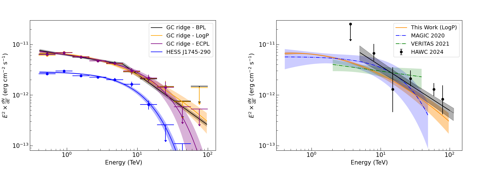<br />
图注：(Left) Best-fit spectrum and SEDs of the GC ridge (with that of \hessGCsource) with the associated statistical errors (1$\sigma$). The upper limits are computed at a 2$\sigma$-confidence level. The SED points are derived assuming the corresponding best-fit spectral shape. (Right) Comparison of the logarithmic parabola model obtained in this work with the VERITAS, MAGIC and HAWC spectra extracted towards the GC region (with different extraction regions).<br />
对应解读：“建议重点查看的图表”第4项脊辐射谱能量分布图；“关键图表逐图导读”图4；模型拟合中关于谱曲率、断裂/截断能量与高能端残差趋势的讨论。<br />
入选理由：这是支撑论文标题结论“银河中心脊伽马射线谱变陡”的核心图，直接展示GC ridge的SED、统计误差、上限以及与HESS J1745-290和其他实验结果的比较，可用于判断高能端是否相对无弯曲幂律出现系统偏离。<br />
来源与置信度：\(arxiv_source\)；high；\(arxiv_source\) / aa60040-26.tex:figure[4]</p>
<p><strong>Fig05</strong><br />
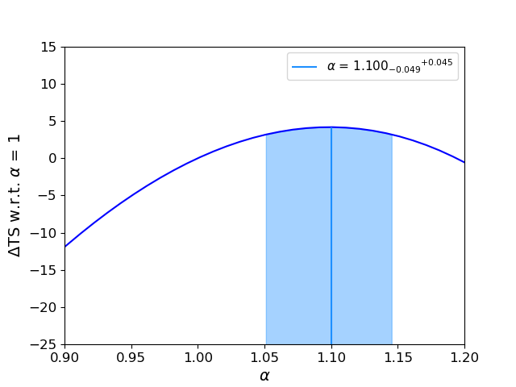<br />
图注：Likelihood profile (with respect to $\alpha = 1$) of the best-fit radial index obtained using a three-dimensional geometry of the CS gas.<br />
对应解读：“建议重点查看的图表”第3项α似然扫描或置信区间图；“关键图表逐图导读”图3；模型拟合中关于宇宙线径向指数α的约束。<br />
入选理由：该图直接给出三维CS气体几何下径向指数α的似然轮廓，是验证α≈1.10、检验是否排除常数宇宙线密度或其他剖面的最关键诊断图。<br />
来源与置信度：\(arxiv_source\)；high；\(arxiv_source\) / aa60040-26.tex:figure[5]</p>
<p><strong>Fig02</strong><br />
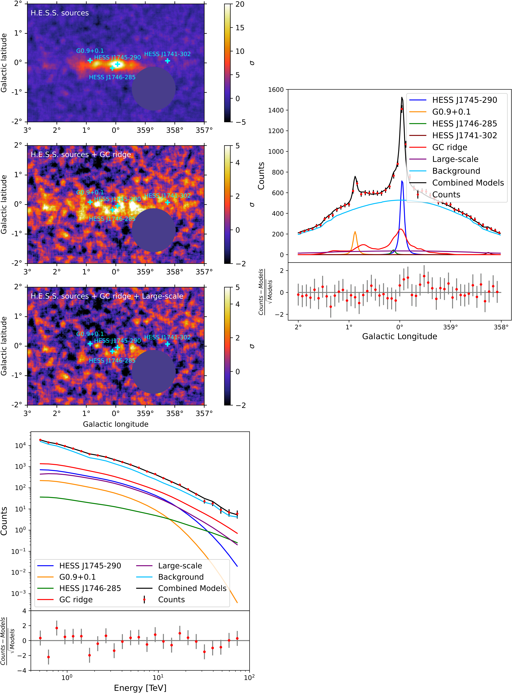<br />
图注：(Left) Residual significance maps from 400 GeV to 100 TeV obtained after including the different components. The masked region is excluded from the analysis. (Right) Predicted longitude count profiles (top) of each component (colored lines) in the entire 6\dg $\times$ 4\dg region and corresponding spectral counts (bottom) in a 2\dg $\times$ 0.5\dg region around the CMZ (therefore excluding HESS J1741$-$302). The measured counts (red points) are reproduced by the full model described in this work (black line). We note that the exposure is not uniform along the longitude.<br />
对应解读：“建议重点查看的图表”第7项多成分残差图；“关键图表逐图导读”图5；模型拟合中关于多成分计数空间联合拟合和残差诊断的讨论。<br />
入选理由：该图同时包含加入各成分后的残差显著性图、经度计数剖面和谱计数分解，最能检查模型是否在HESS J1745-290、G0.9+0.1、CMZ或视场边缘留下结构性残差，并评估点源与脊辐射的成分分离是否可靠。<br />
来源与置信度：\(arxiv_source\)；high；\(arxiv_source\) / aa60040-26.tex:figure[2]</p>
<p><strong>Fig01</strong><br />
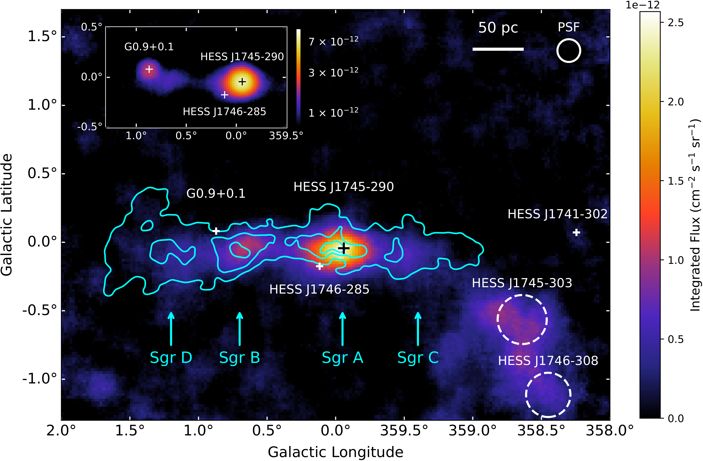<br />
图注：H.E.S.S. flux map ($E$ &gt; 400 GeV) obtained after subtracting the contributions from \(\hessGCsource,\) G$0.9+0.1$ and the Galactic large-scale emission. The map is built with a correlation radius of 0.1\dg and assuming power-law models with $\Gamma = 2$. Cyan contours depict the CMZ, as seen with CS line emission \(\citep{Tsuboi:1999}\) and shaped by the cloud complexes Sgr~A, B, C and D. The position of the point sources in the model are represented by white crosses (black for \hessGCsource). For the analysis, a region encompassing HESS~J1745$-$303 and HESS~J1746$-$308 is masked (see the text). The inset plot shows the total flux towards the Galactic center (i.e. without subtracting sources) in logarithmic scale.<br />
对应解读：“建议重点查看的图表”第1项伽马射线显著性图或计数图；“关键图表逐图导读”图1。<br />
入选理由：该图展示扣除主要点源和大尺度发射后的H.E.S.S.通量图，并叠加CMZ的CS轮廓和点源位置，是理解银河中心脊辐射与分子气体空间相关性、以及判断延展辐射不是单纯点源PSF翼部的基础图。<br />
来源与置信度：\(arxiv_source\)；high；\(arxiv_source\) / aa60040-26.tex:figure[1]</p>
<p><strong>Fig08</strong><br />
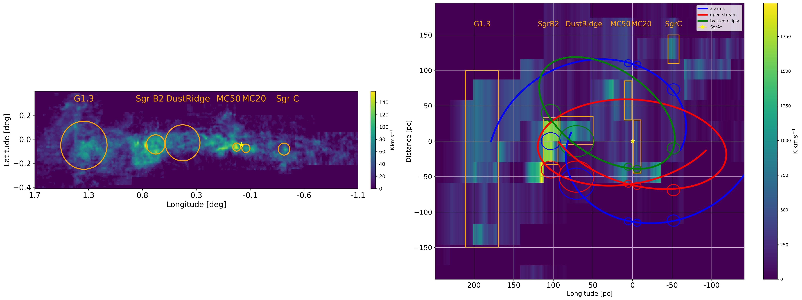<br />
图注：$n_{gas}(x,y,z)$ cube (in units of K\,km\,s$^{-1}$) is integrated along the line of sight to produce the $(l,b)$ map (upper panel), and integrated along the latitude axis to obtain a face-on view in the $(l,z)$ plane (lower panel), where distances are expressed in pc. Both panels cover a similar longitude range. In the lower panel, each grid square represents an area of 50 $\times$ 50\,pc. The primary structures (the densest) of CMZ are clearly visible in both figures and are highlighted by orange circles or rectangular boxes. The predicted positions of Sgr~B2, Dust Ridge, MC50, MC20 and Sgr~C by the three other models (\(\textit{Two Arms},\) \(\textit{Twisted Ellipse}\) and \textit{Open Streams}) are reported on the face-on view. The yellow star in both panels represents the position of \(\sgra.\)<br />
对应解读：“建议重点查看的图表”第2项气体模板与r^{-α}加权模板图；“关键图表逐图导读”图2；模型拟合中关于三维CMZ气体分布和视线位置退化的讨论。<br />
入选理由：该图给出三维气体立方体投影到(l,b)以及面朝视图(l,z)的结构，直接对应脊辐射模板构建所依赖的三维CMZ几何，可帮助读者理解α约束为何受云团视线位置和气体模型假设影响。<br />
来源与置信度：\(arxiv_source\)；high；\(arxiv_source\) / aa60040-26.tex:figure[8]</p>
<p><strong>Fig09</strong><br />
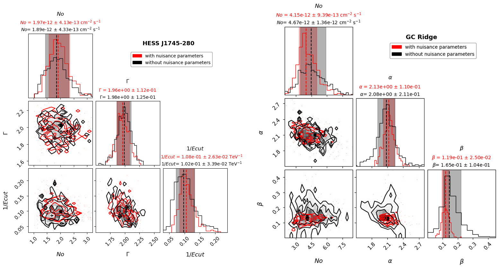<br />
图注：Corner plot showing the fitted spectral parameters of \(\hessGCsource\) and the GC ridge from 500 simulated datasets. Each simulation includes random systematic deviations in the IRFs and background models, as described in Table~\(\ref{SYST_parameters}.\) The 2D contour plots represent the correlations between parameters, while the 1D histograms display their marginal distributions. Results obtained when fitting with and without systematic nuisance parameters are shown in red and black, respectively. The mean and standard deviation of each distribution are indicated above the diagonal.<br />
对应解读：“建议重点查看的图表”第5项谱曲率模型比较/系统误差稳健性；“关键图表逐图导读”图6；模型拟合中关于系统误差、IRF和背景模型扰动、参数协方差的讨论。<br />
入选理由：该角图展示在模拟数据中加入IRF和背景系统偏差后，HESS J1745-290与GC ridge谱参数的分布和相关性，适合检验谱曲率与源混叠、背景系统误差之间的退化关系，虽不是模型比较表但比其他候选图更能支撑稳健性讨论。<br />
来源与置信度：\(arxiv_source\)；high；\(arxiv_source\) / aa60040-26.tex:figure[9]</p>
<h4 id="_12">强相关工作</h4>
<p>同一类工作的直接背景是 H.E.S.S. 对银河中心脊的早期发现和后来的 PeVatron 解释。早期 Nature 论文展示 TeV 辐射与中央分子区气体相关，后续 Nature 论文提出银河中心存在可把质子加速到 \(\mathrm{PeV}\) 的源。这篇新工作与那些结果不是简单矛盾：空间上仍支持中心连续注入，但谱上提出更低能的断裂或截断，因此更像是对“当前持续 PeVatron”图像的细化或降温。建议检索关键词包括 “H.E.S.S. Galactic Centre ridge”, “Central Molecular Zone TeV gamma rays”, “Galactic Centre PeVatron”, “cosmic-ray density 1/r”.</p>
<p>理论和相反观点方面，应把本文放在强子辐射模型、宇宙线扩散、银河中心爆发历史、以及电子逆康普顿替代解释中比较。强子解释依赖气体模板和 \(pp\) 截面；爆发式注入可产生不同的空间和能谱结构；电子模型可能在特定环境下贡献 TeV 辐射但受冷却和辐射场约束。还应关注 Fermi-LAT GeV 银河中心弥散辐射、HAWC/LHAASO 对高能银河源的结果，以及 CTA 对银河中心 PeVatron 的预期灵敏度。检索关键词包括 “Kelner Aharonian Bugayov pp gamma-ray”, “Galactic Centre cosmic-ray diffusion”, “Sgr A* outburst cosmic rays”, “CTA Galactic Centre PeVatron”.</p>
<p><strong>同一事件 / 同类源线索</strong>：</p>
<ul>
<li><a href="https://arxiv.org/abs/2608.25946">https://arxiv.org/abs/2608.25946</a></li>
<li><a href="https://arxiv.org/pdf/2608.25946">https://arxiv.org/pdf/2608.25946</a></li>
<li><a href="https://arxiv.org/abs/1603.07730">https://arxiv.org/abs/1603.07730</a></li>
<li><a href="https://arxiv.org/abs/astro-ph/0603021">https://arxiv.org/abs/astro-ph/0603021</a></li>
</ul>
<p><strong>相似工作</strong>：</p>
<ul>
<li><a href="https://arxiv.org/abs/1603.07730">https://arxiv.org/abs/1603.07730</a></li>
<li><a href="https://arxiv.org/abs/astro-ph/0603021">https://arxiv.org/abs/astro-ph/0603021</a></li>
</ul>
<p><strong>基础理论 / 方法工作</strong>：</p>
<ul>
<li><a href="https://arxiv.org/abs/astro-ph/0606058">https://arxiv.org/abs/astro-ph/0606058</a></li>
</ul>
<p><strong>相反观点 / 张力线索</strong>：</p>
<p>（未提供）</p>
</details>
<h3 id="2-simulating-an-imaging-atmospheric-radio-telescope-to-observe-cosmic-gamma-rays-and-cosmic-neutrinos">2. Simulating an imaging atmospheric radio telescope to observe cosmic gamma rays and cosmic neutrinos</h3>
<ul>
<li>来源：arXiv / astro-ph.IM</li>
<li>链接：https://arxiv.org/abs/2608.25962v1</li>
<li>作者：Sebastian Achim Mueller, Anne Timmermans, Juan Ammerman-Yebra, Harm Schoorlemmer</li>
<li>评分：novelty 8/10，importance 8/10，relevance 10/10，final 9.70/10</li>
<li>推荐理由：面向 TeV 以上伽马射线和 Earth-skimming 中微子的成像大气射电望远镜模拟，属于潜在高能伽马/中微子仪器方法突破，优先级很高。</li>
</ul>
<p><strong>中文题目</strong>：模拟一种用于观测宇宙伽马射线和宇宙中微子的成像大气射电望远镜</p>
<p><strong>做了什么</strong>：这篇论文提出并模拟一种“成像大气射电望远镜”：不再像传统成像大气切伦科夫望远镜那样拍摄光学切伦科夫光，而是在约 \(10\ \mathrm{GHz}\) 频段对空气簇射的射电辐射做高分辨率成像。作者的核心目标是检验这种仪器概念是否可能保留切伦科夫望远镜式的方向、能量和粒子类型重建能力，同时获得接近全天候、昼夜无关的观测占空比。论文的重要方法点是用波动光学而不是常规光线追迹来模拟射电像形成，因为在 \(10\ \mathrm{GHz}\) 附近，波长、口径、相干性和阵列响应会直接影响像质。主要结论是：如果工程实现可行，这类仪器有望把高能伽马射线天空和地球掠射中微子搜索的有效观测时间提高约一个数量级，弥补现有成像大气切伦科夫望远镜受夜晚、月光和天气限制的短板。</p>
<p><strong>为什么重要</strong>：TeV 以上伽马射线和超高能中微子事件率很低，灵敏度常常首先受限于有效面积和有效曝光时间。现有成像大气切伦科夫望远镜在角分辨、能量重建和背景排除上很强，但每年真正可用的暗夜晴空时间有限，典型占空比只有约 \(12\%\)。如果空气簇射的射电成像可以提供类似的形态学信息，同时不受昼夜循环强限制，那么它会改变高能瞬变、多信使触发和长期巡天的观测策略。</p>
<p><strong>理论 / 观测 / 仪器方法价值</strong>：这篇文章的价值主要在仪器和方法论：它把空气簇射射电探测从传统的稀疏天线阵列时域采样，推向类似成像切伦科夫望远镜的二维像面诊断；同时强调在厘米波段必须用波动传播、孔径衍射和相干叠加来建模。对理论端，它提供了评估 \(10\ \mathrm{GHz}\) 空气簇射射电可见性的框架；对观测端，它给出一种可能提高伽马射线和地球掠射中微子曝光的路线；对仪器端，它提示后续关键在口径、带宽、噪声温度、触发和像重建算法。</p>
<p><strong>为什么应该关注</strong>：如果你关心 CTA 之后的 TeV 到 PeV 伽马射线观测、瞬变源监测、全天候多信使跟随观测，或者超高能中微子的地球掠射通道，这篇文章值得看。它不是宣称马上替代现有 IACT，而是在问一个很实际的问题：能不能用射电波段获得足够“像”的空气簇射图像，从而把 IACT 最宝贵的重建优势搬到更高占空比的观测方式中。即便最终概念需要大幅工程修正，论文中的波动光学模拟路线也会成为评估类似仪器概念的有用基准。</p>
<details class="paper-detail">
<summary>展开详细解读：文章讲解、背景、理论、重点章节、图表与相关工作</summary>
<h4 id="_13">文章详细讲解</h4>
<p>科学问题：TeV 及更高能伽马射线到达地球后会在大气中产生电磁级联，传统成像大气切伦科夫望远镜通过拍摄纳秒级蓝紫光切伦科夫闪光来反推入射粒子的方向、能量和类型。这套方法的强项是图像分辨率高、背景压制好；弱项是只能在暗夜、晴朗、低月光条件下运行。论文要解决的问题是：是否能在约 \(10\ \mathrm{GHz}\) 的射电频段对空气簇射进行“成像”，从而保留 IACT 的图像重建优势，同时获得接近 \(24/7\) 的占空比。</p>
<p>作者怎么做：文章提出一种 imaging atmospheric radio telescope，简称可理解为 IART 概念。与低频空气簇射射电阵列通常记录天线波形不同，这里强调用望远镜式孔径和像面形成高分辨率图像。一个关键技术选择是用波动光学模拟像形成，而不是用几何光线追迹。原因是 \(10\ \mathrm{GHz}\) 对应波长约 \(3\ \mathrm{cm}\)，射电波的相位、路径差、衍射、相干叠加和焦平面响应会显著影响最终图像；如果只用光线追迹，很容易高估成像锐度或误判簇射纵向结构。</p>
<p>关键结果：论文展示了这种波动模拟技术如何把空气簇射中的射电发射分布传播到望远镜焦平面，并讨论其对伽马射线和地球掠射中微子观测的潜在收益。摘要层面的核心判断是，若成像质量和灵敏度达到预期，IART 可能把对高能伽马射线天空的有效访问时间提高超过 \(8\) 倍；同样的占空比优势也可能用于地球掠射 \(\nu_\tau\) 搜索，因为这种技术不依赖夜间光学观测窗口。这里的“提高 \(8\) 倍”主要来自观测时间占空比，而不是单次事件重建必然优于 IACT。</p>
<p>局限和下一步：这仍是一篇仪器概念和模拟方法论文，不应把它解读为已经完成了实测验证。最需要进一步量化的是 \(10\ \mathrm{GHz}\) 空气簇射射电信号强度、相干条件、天空和接收机噪声、天气中的水汽和云雨影响、触发阈值、宇宙线强子背景排除能力，以及真实望远镜口径和像素化接收机的成本。下一步应包括端到端蒙特卡洛、与 CoREAS 或 ZHAireS 类空气簇射射电模拟的交叉验证、原型机标定、以及用已知宇宙线簇射或加速器等效源进行成像测试。</p>
<h4 id="_14">关键结果是怎么做出来的</h4>
<p>这篇论文最关键的证据链不是来自已经运行的望远镜事件样本，而是来自仪器概念的端到端成像模拟。因此读者应把“样本选择”理解为模拟空气簇射几何、射电发射分布、望远镜孔径、频段和像面响应的选择。论文关注的是 TeV 以上伽马射线空气簇射以及地球掠射中微子诱导的上行或近水平簇射，二者共同特点是事件稀少、需要大有效面积和长曝光。</p>
<p>事件数和统计显著性在这篇概念论文中不是类似源检测论文的核心产物。核心量更接近仪器性能预测：焦平面能否形成可用于重建的空气簇射图像，图像形态是否保留与入射方向、簇射最大深度和粒子类型相关的信息，以及由于占空比从约 \(12\%\) 提高到接近全天候运行，年曝光是否能获得约 \(8\) 倍提升。读者应特别注意这个倍数来自时间覆盖，而不是直接来自有效面积、角分辨率或背景拒绝率的实测提升。</p>
<p>统计或模型比较方面，文章的重点是波动光学模拟相对于传统光线追迹的必要性。可把它看作两类前向模型的比较：几何光学把发射点沿射线映射到像面，波动光学则计算电场振幅和相位经过孔径后的叠加。后者可以给出衍射模糊、频带平均、相干损失和旁瓣结构，因此更适合判断 \(10\ \mathrm{GHz}\) 成像是否真的可行。</p>
<p>支撑结论的图表应主要是模拟几何图、射电像形成图、不同簇射或不同观测几何下的焦平面图像、以及可能的占空比或曝光对比。读者看这些图时要问：图像的主轴、宽度、长度和亮度梯度是否像 IACT 图像那样可用于 Hillas 参数化；图像变化是否对方向和能量敏感；噪声加入后结构是否仍可识别；不同粒子类型或不同高度的簇射是否会出现严重退化。</p>
<p>主要系统误差包括空气簇射射电发射模型、折射率剖面、天线和反射面响应、接收机噪声温度、带宽选择、相位标定误差、以及气象条件对 \(10\ \mathrm{GHz}\) 传播的影响。稳健性检验应围绕这些量展开：改变频带、孔径、像素尺寸、相位误差、噪声水平和簇射几何，查看重建图像是否仍保留可用于分类和定向的形态信息。</p>
<details class="paper-subdetail">
<summary>展开背景、理论、公式、模型、章节和图表导读</summary>
<h4 id="_15">背景知识</h4>
<p>研究对象是宇宙高能伽马射线和宇宙中微子诱导的大气簇射。TeV 伽马射线进入大气后主要通过 \(\gamma\gamma\) 或 \(\gamma Z\) 过程产生 \(e^+e^-\) 对，随后电子和正电子继续辐射制动辐射，形成电磁级联。超高能中微子则可在地球或大气中相互作用，尤其是地球掠射 \(\nu_\tau\) 情况下，\(\tau\) 轻子可能从地表附近逸出并在大气中衰变，产生近水平空气簇射。</p>
<p>成像大气切伦科夫望远镜是过去几十年地面 TeV 伽马天文学的主力技术。H.E.S.S.、MAGIC、VERITAS 等系统通过多个光学望远镜同时拍摄空气簇射的切伦科夫像，实现弧分到角分量级方向重建、较好的能量分辨和强子背景压制。CTA 进一步把这种技术扩展到更大阵列和更宽能段。但 IACT 的物理限制很硬：太阳光、月光、云、气溶胶都会影响切伦科夫光探测。</p>
<p>空气簇射射电探测本身并不新。LOFAR、AERA、Tunka-Rex 等实验已经证明，MHz 频段的地磁辐射和 Askaryan 电荷过剩辐射可用于宇宙线能量和 \(X_{\max}\) 重建。不过这些系统通常依赖稀疏或密集天线阵列测量地面电场波形，而不是形成类似 IACT 的高分辨二维图像。本文的新意在于把空气簇射射电探测推向 \(10\ \mathrm{GHz}\) 附近，并强调像面成像。</p>
<p>为什么现在值得重新看？一方面，多信使天文学要求对短时标瞬变进行全天候响应，传统 IACT 的低占空比在 GRB、耀变体爆发、引力波电磁对应体和中微子警报跟随中是明显瓶颈。另一方面，射电接收机、宽带数字后端、相控阵和高速触发技术发展很快，使厘米波段的快速成像不再只是概念。</p>
<p>常见误区有两个。第一，以为射电探测天然就能全天候且无系统误差；实际上 \(10\ \mathrm{GHz}\) 仍受水汽、降雨、接收机噪声、旁瓣和射频干扰影响。第二，以为有占空比优势就等于有更高灵敏度；真正灵敏度还取决于有效面积、触发阈值、背景率、角分辨率和能量重建。本文的主张应理解为：占空比收益很大，但需要用严肃的波动光学和端到端噪声模拟来判断它能否转化为科学灵敏度。</p>
<h4 id="_16">基础理论 / 方法脉络</h4>
<p>从物理图像看，空气簇射是一团以接近光速运动的带电粒子云。电子和正电子在地磁场中发生横向偏转，形成随时间变化的横向电流；同时簇射中电子数通常多于正电子数，产生净负电荷过剩。这两个机制都会产生射电辐射。低频时，若波长大于或接近簇射盘厚度和横向尺度，辐射可以相干增强；到 \(10\ \mathrm{GHz}\) 时，相干条件更苛刻，辐射更依赖局部几何、观察角和路径差。</p>
<p>传统 IACT 利用的是光学切伦科夫光：相对论带电粒子在空气中速度超过介质中光速时发出锥形辐射，望远镜把这道纳秒闪光聚焦到相机上。射电成像版本的想法是类似的：空气簇射在大气中是一串延展的发射源，望远镜孔径接收来自不同位置的电磁波，再在焦平面形成二维亮度分布。区别在于射电波长远大于光学波长，不能简单忽略衍射和相位。</p>
<p>本文特定的模型假设可概括为：给定空气簇射的时空发射分布和频谱，在 \(10\ \mathrm{GHz}\) 附近计算电场传播到望远镜孔径，再通过波动光学传播到焦平面。关键量包括电场 \(E(\nu,t)\)、频率 \(\nu\)、波长 \(\lambda\)、孔径直径 \(D\)、焦距 \(f\)、系统温度 \(T_{\rm sys}\)、带宽 \(\Delta\nu\)、以及像面每个像素的信噪比。</p>
<p>观测和数据分析逻辑上，IART 若要像 IACT 一样做科学，需要完成几件事：触发空气簇射事件；从像面提取形态参数；利用单台或多台望远镜几何重建到达方向；用总信号和形态估计能量；用图像宽度、长度、时间结构和多视角一致性区分伽马、电磁簇射、强子宇宙线和地球掠射中微子候选。</p>
<p>主要退化和系统误差也与 IACT 类似但不完全相同。能量和距离会退化，因为远处高能簇射可能与近处低能簇射产生相似亮度；方向和簇射最大深度 \(X_{\max}\) 会通过图像长度和时间结构耦合；粒子类型区分依赖强子簇射子结构是否能被射电像分辨。额外的射电系统误差包括相位标定、频带内相干平均、反射面形变、天线方向图、旁瓣拾取和无线电干扰。</p>
<h4 id="_17">公式与推导</h4>
<p>第一步是把空气簇射看成沿轴向发展的带电粒子数 \(N_e(X)\)。常用的纵向发展可用 Gaisser-Hillas 型函数表示：</p>
<div class="math-display">\[N_e(X)=N_{\max}\left(\frac{X-X_0}{X_{\max}-X_0}\right)^{(X_{\max}-X_0)/\Lambda}\exp\left(\frac{X_{\max}-X}{\Lambda}\right).\]</div>
<p>这里 \(X\) 是大气深度，\(X_{\max}\) 是簇射最大深度，\(N_{\max}\) 是最大粒子数，\(X_0\) 和 \(\Lambda\) 控制起始和发展尺度。它连接入射能量、粒子类型和发射源强度。</p>
<p>第二步是写出射电发射的相干叠加。若第 \(j\) 个发射单元在频率 \(\nu\) 的复电场为 \(\mathcal{E}_j(\nu)\)，到望远镜的传播距离为 \(R_j\)，则孔径处电场可写为</p>
<div class="math-display">\[\mathcal{E}_{\rm ap}(\nu)=\sum_j \frac{\mathcal{E}_j(\nu)}{R_j}\exp\left[i k R_j+i\phi_j(\nu)\right],\quad k=\frac{2\pi}{\lambda}=\frac{2\pi\nu}{c}.\]</div>
<p>这里 \(\phi_j\) 包含发射相位和介质传播相位。这个式子说明为什么 \(10\ \mathrm{GHz}\) 不能简单用光线追迹：厘米级路径差就会改变干涉结果。</p>
<p>第三步是从孔径传播到焦平面。在标量衍射近似下，焦平面角坐标 \(\boldsymbol{\theta}\) 上的复振幅近似为孔径场的傅里叶变换：</p>
<div class="math-display">\[\mathcal{A}(\boldsymbol{\theta},\nu)\propto \int P(\boldsymbol{r})\mathcal{E}_{\rm ap}(\boldsymbol{r},\nu)\exp\left[-i k \boldsymbol{r}\cdot\boldsymbol{\theta}\right]d^2\boldsymbol{r}.\]</div>
<p>\(P(\boldsymbol{r})\) 是孔径照明函数，\(\boldsymbol{r}\) 是孔径平面坐标。焦平面强度为</p>
<div class="math-display">\[I(\boldsymbol{\theta})=\int_{\Delta\nu} \left|\mathcal{A}(\boldsymbol{\theta},\nu)\right|^2 d\nu.\]</div>
<p>这就是本文波动成像模拟的核心物理结构。</p>
<p>第四步是估计角分辨尺度。理想圆孔径的衍射极限近似为</p>
<div class="math-display">\[\Delta\theta\simeq 1.22\frac{\lambda}{D}.\]</div>
<p>其中 \(D\) 是有效口径。对 \(\lambda\simeq 3\ \mathrm{cm}\) 和大口径反射面，\(\Delta\theta\) 可进入有用的空气簇射成像范围，但真实分辨率还会被像素、相位误差和信噪比恶化。</p>
<p>第五步是把信号转为可探测性。射电计方程给出热噪声等效通量密度涨落：</p>
<div class="math-display">\[\sigma_S=\frac{2 k_{\rm B}T_{\rm sys}}{A_{\rm eff}\sqrt{n_{\rm pol}\Delta\nu\Delta t}}.\]</div>
<p>这里 \(k_{\rm B}\) 是玻尔兹曼常数，\(T_{\rm sys}\) 是系统温度，\(A_{\rm eff}\) 是有效面积，\(n_{\rm pol}\) 是偏振数，\(\Delta\nu\) 是带宽，\(\Delta t\) 是积分时间。对纳秒空气簇射，\(\Delta t\) 很短，因此带宽和低噪声接收机非常关键。</p>
<p>第六步是定义像素或图像级信噪比。若像面第 \(p\) 个像素的信号为 \(s_p\)，噪声方差为 \(\sigma_p^2\)，则</p>
<div class="math-display">\[{\rm SNR}^2=\sum_p \frac{s_p^2}{\sigma_p^2}.\]</div>
<p>这个量可用于触发、图像清洗和模型比较。若只看单像素峰值，可能会低估延展图像携带的总信息。</p>
<p>第七步是与占空比相连。对源通量 \(\Phi(E)\)，有效面积 \(A_{\rm eff}(E)\)，观测时间 \(T\)，预期事件数为</p>
<div class="math-display">\[\mu_s=T\int \Phi(E)A_{\rm eff}(E)\epsilon(E)dE.\]</div>
<p>\(\epsilon(E)\) 是触发和重建效率。若 \(A_{\rm eff}\) 和 \(\epsilon\) 相近，占空比从 \(f_{\rm duty}\simeq 0.12\) 提高到接近 \(1\)，则 \(\mu_s\) 约提高 \(1/0.12\simeq 8.3\)。这正是摘要中“超过 \(8\) 倍访问”的统计来源。</p>
<p>第八步是检测显著性。对信号计数 \(N_{\rm on}\)、背景计数 \(N_{\rm off}\) 和曝光比 \(\alpha\)，常用 Li-Ma 显著性为</p>
<div class="math-display">\[S=\left\{2\left[N_{\rm on}\ln\frac{(1+\alpha)N_{\rm on}}{\alpha(N_{\rm on}+N_{\rm off})}+N_{\rm off}\ln\frac{(1+\alpha)N_{\rm off}}{N_{\rm on}+N_{\rm off}}\right]\right\}^{1/2}.\]</div>
<p>这不是本文概念验证的唯一指标，但它说明真正科学收益最终必须落到背景控制后的显著性，而不仅是可运行时间。</p>
<h4 id="_18">模型拟合 / 应用方法</h4>
<p>这类工作的拟合首先是前向模型拟合：给定入射粒子能量 \(E\)、方向 \((\theta,\phi)\)、核心落点 \((x_c,y_c)\)、簇射最大深度 \(X_{\max}\) 和粒子类型，模拟焦平面图像 \(m_p(\boldsymbol{\Theta})\)，再与观测像素信号 \(d_p\) 比较。参数向量 \(\boldsymbol{\Theta}\) 至少应包含几何、能量、纵向发展和仪器响应参数。</p>
<p>似然可从高斯噪声近似或更完整的时间频率域噪声模型建立。若像素噪声近似独立高斯，可用 \(\chi^2=\sum_p[d_p-m_p(\boldsymbol{\Theta})]^2/\sigma_p^2\)；若触发前后存在相关噪声、旁瓣相关或射频干扰，则需要协方差矩阵 \(C_{pq}\)。对于真实仪器，时间波形、频谱和偏振信息也应进入联合似然，而不应只拟合积分亮度图。</p>
<p>参数退化会非常重要。能量 \(E\) 与几何距离退化：更远的高能簇射和更近的低能簇射可能给出相近通量。\(X_{\max}\) 与视角退化：簇射在视线方向上的投影长度会影响像的长宽比。相位标定误差与真实图像宽度退化：未校正的相位误差可能把点扩散函数变宽，误认为簇射本身更宽。强子背景的子簇射结构若没有被充分模拟，也会导致伽马/强子分类过乐观。</p>
<p>残差诊断应包括像面二维残差、沿图像主轴和副轴的一维剖面残差、频带分段残差、偏振残差、以及不同望远镜视角之间的几何一致性。若模型能拟合总亮度但不能拟合图像边缘、旁瓣或时间结构，说明仪器响应或射电发射模型仍不完整。</p>
<p>实际应用场景中，IART 的拟合链应与 IACT 类似分两层：快速在线触发和粗重建用于瞬变警报，离线高精度拟合用于能谱、形态和粒子分类。对于地球掠射中微子，拟合还要包含地形、地球吸收、\(\tau\) 能量损失和衰变高度；对伽马源巡天，则要加入夜昼不同环境下的背景率变化和长期增益标定。</p>
<h4 id="_19">重点章节 / 结果段落怎么读</h4>
<ol>
<li>
<p>引言和科学动机：应先看作者如何界定 IACT 的优势和限制，尤其是有效面积大但占空比低这一矛盾。这里要分清“重建能力强”和“观测时间少”是两个不同问题，IART 试图解决的是后者，同时尽量不牺牲前者。</p>
</li>
<li>
<p>仪器概念：重点读 \(10\ \mathrm{GHz}\) 频段、望远镜孔径、像面成像和全天候运行的设定。需要检查作者对天气影响的表述是否足够谨慎，因为厘米波比低频射电更容易受大气吸收和降水影响。</p>
</li>
<li>
<p>波动光学模拟方法：这是全篇方法核心。读者应关注作者如何从空气簇射发射分布计算到孔径电场，再传播到焦平面；是否处理相位、带宽、孔径函数和像素化；以及与传统光线追迹相比，哪些像质差异最关键。</p>
</li>
<li>
<p>伽马射线观测性能讨论：这一部分应看图像是否足够类似 IACT 图像，可否支持方向、能量和粒子类型重建。要特别注意作者是否给出定量分辨率或仅给出概念性图像。</p>
</li>
<li>
<p>地球掠射中微子应用：应关注近水平簇射几何、有效曝光和占空比收益。这里的关键不是单个事件图像好不好看，而是地形、视场、触发阈值和背景误触发共同决定的有效体积。</p>
</li>
<li>
<p>讨论和展望：读者应检查作者是否列出原型机、噪声、标定和端到端蒙特卡洛需求。概念论文的可信度很大程度来自它是否诚实呈现尚未解决的工程和系统误差问题。</p>
</li>
</ol>
<h4 id="_20">建议重点查看的图表</h4>
<ol>
<li>
<p>仪器和观测几何示意图：看空气簇射轴、望远镜视场、反射面和焦平面的相对关系，确认成像几何是否覆盖典型 TeV 伽马和地球掠射中微子事件。</p>
</li>
<li>
<p>波动光学像形成流程图或公式图：看作者是否明确从发射源到孔径再到焦平面，而不是简单把发射点投影到相机。</p>
</li>
<li>
<p>模拟焦平面图像：重点看图像长轴、短轴、亮度梯度、旁瓣和模糊程度。若图像过于理想，应检查是否加入噪声和有限带宽。</p>
</li>
<li>
<p>不同频率或带宽下的图像对比：看 \(10\ \mathrm{GHz}\) 附近成像是否对频率非常敏感，是否存在相干性快速丧失的问题。</p>
</li>
<li>
<p>与 IACT 占空比或曝光的对比表：看约 \(8\) 倍提升是否仅由 \(f_{\rm duty}\) 推出，还是还包含有效面积、效率或阈值假设。</p>
</li>
<li>
<p>中微子地球掠射几何或有效观测功率图：看地平线附近视场、簇射距离、地形遮挡和触发阈值如何影响结论。</p>
</li>
<li>
<p>稳健性诊断图：若有相位误差、噪声温度、天气衰减或孔径变化的测试，应优先查看这些图，因为它们决定概念是否抗系统误差。</p>
</li>
</ol>
<h4 id="_21">关键图表逐图导读</h4>
<p>图 1：通常应是仪器概念或观测几何示意。横纵坐标未必是数据坐标，而是空气簇射、望远镜、焦平面和视场的空间关系。读图时要确认簇射到望远镜的距离、视角和像面投影是否合理；不要把示意图中的光束宽度误读为实际角分辨率。</p>
<p>图 2：若论文给出波动光学传播流程，应把它当成方法图来读。关键元素是发射单元、孔径函数、相位传播和焦平面强度。读图陷阱是把它理解成普通光线追迹；真正重要的是不同发射点的复振幅相加，而不是单独射线落点。</p>
<p>图 3：模拟空气簇射射电图像应是最值得看的结果图。坐标轴多半对应焦平面角坐标或相机像素，颜色代表强度或功率。要看图像是否有稳定的长轴方向、可测宽度和亮度中心；若只有无噪声图，应谨慎外推到真实触发。</p>
<p>图 4：若有不同频率、口径或观测几何的对比图，应检查图像结构随参数变化是否平滑。若轻微改变 \(\nu\)、\(D\) 或视角就导致图像完全不同，说明重建可能高度依赖标定和先验。</p>
<p>图 5：占空比或曝光增益图应读横轴是时间、能量还是观测条件，纵轴是曝光、事件率还是相对增益。主要结论应是 IART 在观测时间上相对 IACT 有约 \(8\) 倍优势；读图陷阱是把时间增益误当成点源灵敏度必然同等提升。</p>
<p>图 6：如果有地球掠射中微子应用图，应关注地平线附近几何、\(\tau\) 衰变位置和望远镜视场。近水平事件路径长、背景复杂，图中若没有给出地形和大气吸收假设，就只能视为概念性性能估计。</p>
</details>
<h4 id="_22">论文原图 / 可嵌入图片</h4>
<p><strong>Fig01</strong><br />
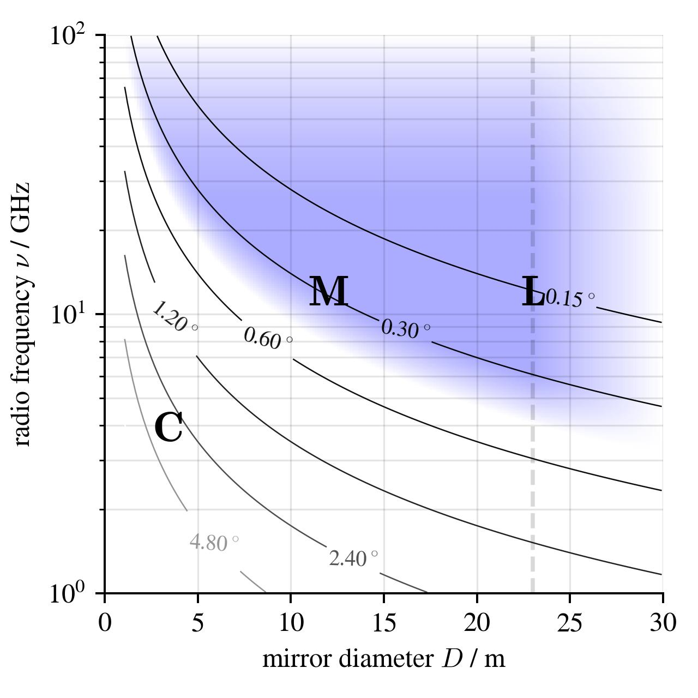<br />
图注：Airy and the narrowing depth-of-field limit the minimum and maximum diameter of an imaging radio telescope for air showers. Contour lines show angular resolution $\Theta{}_\text{Airy-full}$ according to \(\autoref{EqAiry}.\) The blue region for $\Theta_\text{full} < 0.3^\circ$, $D < 23\,$m, and $\nu < 25\,$GHz indicates the preferable regime to image air showers. Vertical, grey, dashed line at $D=23$\,m marks the depth-of-field limit suggested by \(\citep{bernlohr2013monte}.\) $\mathbf{C}$, $\mathbf{M}$, and $\mathbf{L}$ mark the three telescopes Crome, Medium, and Large.<br />
对应解读：建议重点查看的图表 4、7；关键图表逐图导读 图4；模型拟合段落中关于口径、频率、点扩散函数和系统误差退化的讨论。<br />
入选理由：这张图直接给出望远镜口径D、频率ν与Airy角分辨率/景深限制的关系，并标出Crome、Medium、Large三个设计点，是判断10 GHz附近成像是否可行、口径是否受景深限制、参数选择是否稳健的核心诊断图。相比单纯几何示意，它更直接支撑论文关于IART可形成高分辨率空气簇射图像的关键物理前提。<br />
来源与置信度：\(arxiv_source\)；high；\(arxiv_source\) / article.tex:figure[1]</p>
<p><strong>Fig09</strong><br />
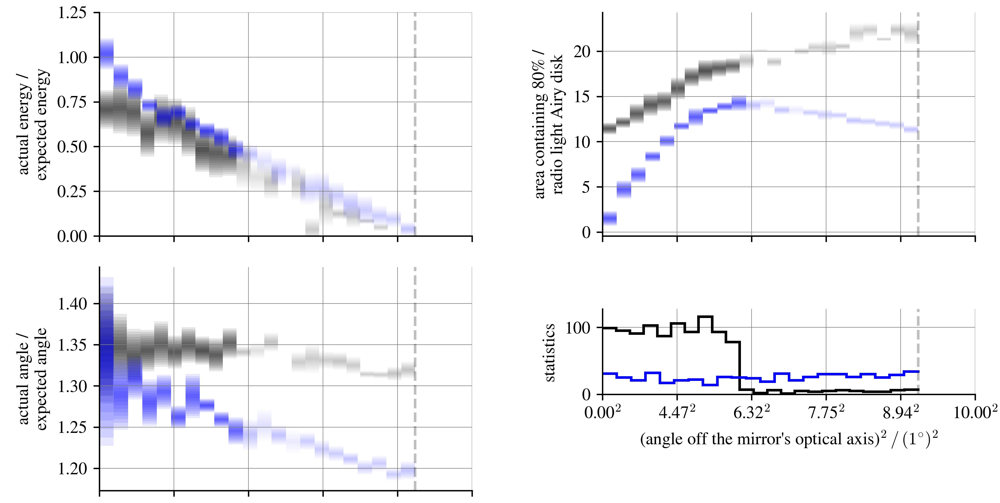<br />
图注：$\mathbf{C}$rome telescope performance in black. Blue is the expectation based on geometric optics. The angle off the optical axis is squared here so that the bins have equal solid angles in the sky.<br />
对应解读：建议重点查看的图表 2、3、7；关键图表逐图导读 图2、图3、图4；模型拟合段落中关于波动光学前向模型、旁瓣和残差诊断的讨论。<br />
入选理由：该图比较Crome望远镜的波动模拟性能与几何光学预期，正好对应日报强调的“不是简单光线追迹”这一核心方法问题。横轴使用离轴角平方、蓝线为几何光学期望，可用于检查真实波动传播下的成像响应、视场退化和系统偏差。<br />
来源与置信度：\(arxiv_source\)；high；\(arxiv_source\) / article.tex:figure[9]</p>
<p><strong>Fig10</strong><br />
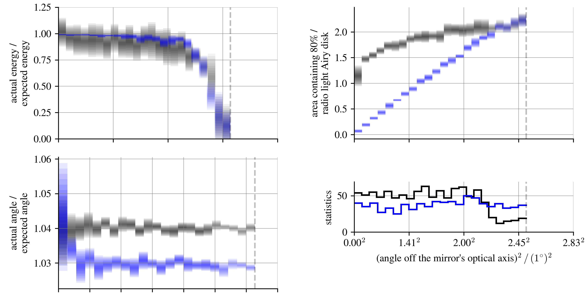<br />
图注：$\mathbf{M}$edium telescope performance. Blue is the expectation based on geometric optics.<br />
对应解读：建议重点查看的图表 2、3、4、7；关键图表逐图导读 图4；模型拟合段落中关于不同口径/几何下仪器响应变化的讨论。<br />
入选理由：Medium设计是候选望远镜中的中间尺度，对比几何光学预期可以检验从小口径到大口径过渡时成像性能是否平滑。它有助于判断图像结构和重建能力是否高度依赖特定光学设计，而不仅是展示一个理想化案例。<br />
来源与置信度：\(arxiv_source\)；high；\(arxiv_source\) / article.tex:figure[10]</p>
<p><strong>Fig11</strong><br />
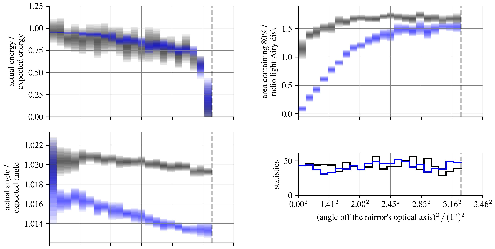<br />
图注：$\mathbf{L}$arge telescope performance. Blue is the expectation based on geometric optics.<br />
对应解读：建议重点查看的图表 2、3、4、7；关键图表逐图导读 图4；模型拟合段落中关于孔径变化、相位误差和点扩散函数退化的讨论。<br />
入选理由：Large望远镜性能图与Fig09、Fig10构成口径序列，可直接检查大口径在波动光学模拟下是否仍接近几何光学预期，或是否受到景深/衍射/视场效应限制。对评估IART概念能否扩展到更大收集面积尤其重要。<br />
来源与置信度：\(arxiv_source\)；high；\(arxiv_source\) / article.tex:figure[11]</p>
<p><strong>Fig06</strong><br />
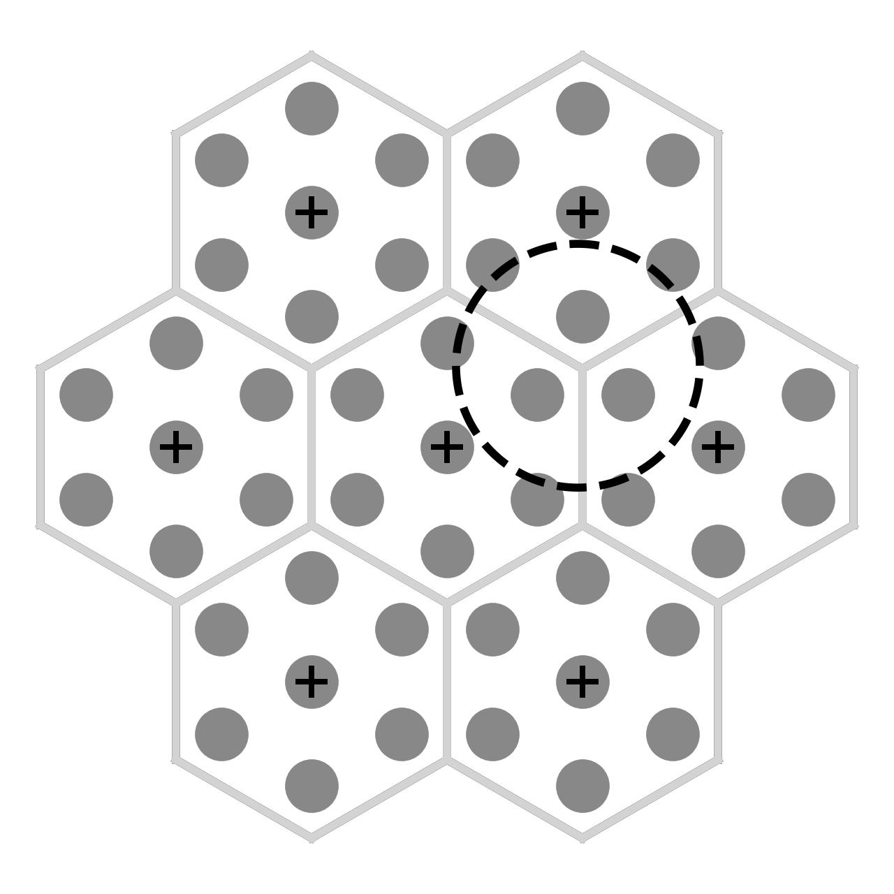<br />
图注：Gray hexagons are openings of feed horns. Black <code>$+$' mark the centers of the feed horns. Grey dots, of which there are $\NumScatterCentersPerFeedHorn = 7$ in each feed horn, mark mark the Huygens scatter centers $\FeedHornScatterCenterVector{}$ listed in \autoref{EqCameraScatterCenterDefinition}. Black, dashed circle marks the mirror's point spread function which is a good match for the feed horn size but might suffer from poor sampling if Huygens scatter centers were only put in the center</code>$+$' of each feed horn.<br />
对应解读：建议重点查看的图表 2、3、7；关键图表逐图导读 图2；模型拟合段落中关于孔径函数、焦平面像素化、旁瓣和协方差的讨论。<br />
入选理由：该图展示馈源喇叭开口、Huygens散射中心和镜面点扩散函数的相对采样，是理解论文波动光学像形成实现方式的关键细节。它说明作者并非只把入射方向投影到单个像素，而是在相机端用有限采样的散射中心表示接收结构，这会影响旁瓣、模糊和像素间相关。<br />
来源与置信度：\(arxiv_source\)；high；\(arxiv_source\) / article.tex:figure[6]</p>
<p><strong>Fig03</strong><br />
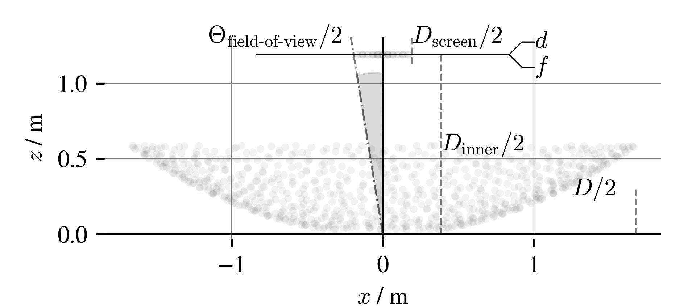<br />
图注：$\mathbf{C}$rome telescope geometry. Projection in the $x$-$z$-plane, where the $z$-axis is the optical axis. The mirror and the camera are represented using the Huygens scatter centers used in the simulations. Compare \(\autoref{TabTelescopesOptics}.\) See \(\autoref{FigCromeGeometryCloseUp}\) for $x$-$y$-projection.<br />
对应解读：建议重点查看的图表 1；关键图表逐图导读 图1；模型拟合段落中关于望远镜几何和仪器响应参数的讨论。<br />
入选理由：这张图给出Crome望远镜在x-z平面的镜面、相机和光轴几何，并标出用于模拟的Huygens散射中心，最接近日报要求的仪器和观测几何示意。虽然它不是空气簇射事件图像，但能帮助读者理解后续波动传播、焦平面响应和视场覆盖的基础几何。<br />
来源与置信度：\(arxiv_source\)；high；\(arxiv_source\) / article.tex:figure[3]</p>
<h4 id="_23">强相关工作</h4>
<p>这篇工作与 IACT 传统路线直接相关，应放在 H.E.S.S.、MAGIC、VERITAS 和 CTA 的技术背景下理解。相似类工作包括 CTA 性能预估、IACT 图像重建和 Hillas 参数方法；检索关键词可用 “imaging atmospheric Cherenkov telescope Hillas parameters CTA performance duty cycle”。它与这些工作的关系不是竞争性结果对比，而是试图把 IACT 的图像重建思想移植到射电波段。</p>
<p>它也与空气簇射射电探测传统有关，包括 LOFAR、AERA、Tunka-Rex、GRAND、BEACON 和地球掠射中微子概念。这里的关键差别是频段和成像方式：多数宇宙线射电阵列在 MHz 到低 GHz 频段记录地面波形，而本文强调 \(10\ \mathrm{GHz}\) 附近的望远镜成像。检索关键词可用 “radio detection air showers CoREAS ZHAireS microwave air shower emission Earth-skimming tau neutrino radio detection”。</p>
<p>潜在张力来自微波空气簇射辐射强度和相干性的历史争议。过去曾有实验探索 GHz 微波辐射是否能作为空气簇射探测通道，但信号强度、各向同性假设和背景控制并不总是乐观。因此读者应把本文与 “microwave emission extensive air showers CROME MIDAS EASIER” 等关键词下的结果一起读，特别检查 \(10\ \mathrm{GHz}\) 信号模型是否与既有上限和探测结果相容。</p>
<p><strong>同一事件 / 同类源线索</strong>：</p>
<ul>
<li><a href="https://arxiv.org/abs/2608.25962">https://arxiv.org/abs/2608.25962</a></li>
<li><a href="https://arxiv.org/pdf/2608.25962">https://arxiv.org/pdf/2608.25962</a></li>
</ul>
<p><strong>相似工作</strong>：</p>
<ul>
<li><a href="https://arxiv.org/abs/1709.07997">https://arxiv.org/abs/1709.07997</a></li>
<li><a href="https://arxiv.org/abs/1607.08781">https://arxiv.org/abs/1607.08781</a></li>
</ul>
<p><strong>基础理论 / 方法工作</strong>：</p>
<ul>
<li><a href="https://arxiv.org/abs/1607.08781">https://arxiv.org/abs/1607.08781</a></li>
<li><a href="https://www.mpi-hd.mpg.de/hfm/HESS/">https://www.mpi-hd.mpg.de/hfm/HESS/</a></li>
<li><a href="https://magic.mpp.mpg.de/">https://magic.mpp.mpg.de/</a></li>
<li><a href="https://veritas.sao.arizona.edu/">https://veritas.sao.arizona.edu/</a></li>
<li><a href="https://www.cta-observatory.org/">https://www.cta-observatory.org/</a></li>
</ul>
<p><strong>相反观点 / 张力线索</strong>：</p>
<p>（未提供）</p>
</details>
<h3 id="3-energy-dependent-extension-of-the-crab-nebula-as-a-diagnostic-of-ultrahigh-energy-hadronic-emission">3. Energy-dependent extension of the Crab Nebula as a diagnostic of ultrahigh-energy hadronic emission</h3>
<ul>
<li>来源：arXiv / astro-ph.HE</li>
<li>链接：https://arxiv.org/abs/2608.25497v1</li>
<li>作者：Fang-Wu Lu, Bo-Tao Zhu, Ji-Yang Ren, Li Zhang</li>
<li>评分：novelty 8/10，importance 8/10，relevance 10/10，final 9.70/10</li>
<li>推荐理由：Crab Nebula PeV 伽马射线强子成分的能量依赖延展诊断，直接关联 PWN、PeVatron 和超高能伽马射线观测，是高相关重点论文。</li>
</ul>
<p><strong>中文题目</strong>：蟹状星云的能量依赖延展：检验超高能强子辐射的新诊断量</p>
<p><strong>做了什么</strong>：这篇论文讨论蟹状星云在从 X 射线到 TeV、PeV 伽马射线能段的表观角延展是否能区分轻子辐射和强子辐射。作者构建空间分辨的轻子-强子模型：电子产生同步辐射和逆康普顿伽马射线，质子与星云气体相互作用产生 \(\pi^0\) 衰变伽马射线。核心结论是，当能量高于约 \(400\,\mathrm{TeV}\) 时，伽马射线辐射可由强子成分主导；在 \(1.1\,\mathrm{PeV}\) 附近，模型预言 \(68\%\) 包含半径约为 \(1.4'\)，比纯轻子模型大约六倍。因此，PeV 能段的角延展随能量变化可以成为判断蟹状星云是否加速 PeV 质子的观测诊断量。</p>
<p><strong>为什么重要</strong>：蟹状星云长期被当作高能天体物理的标准烛光和脉冲星风星云原型，但它是否存在可观测的 PeV 强子加速仍未定论。仅靠总能谱很容易出现轻子-强子退化；这篇文章强调空间信息，尤其是 \(\gtrsim 100\,\mathrm{TeV}\) 到 PeV 的源延展，可能比谱形本身更能打破退化。</p>
<p><strong>理论 / 观测 / 仪器方法价值</strong>：理论价值在于把粒子输运、辐射机制和角分布预测联系起来，给出一个可由 LHAASO、未来 CTA/南北阵列或更高角分辨率水切伦科阵列检验的量。观测价值在于提醒读者：PeV 伽马射线的来源不只看有没有光子，还要看这些光子来自星云的哪个空间尺度。方法价值在于将能量依赖的 \(68\%\) 包含半径作为模型比较指标。</p>
<p><strong>为什么应该关注</strong>：如果蟹状星云在 PeV 能段确实比纯轻子模型预期更“胖”，那将是脉冲星风星云中强子加速和强子辐射的重要证据之一；如果未来观测没有看到这种增大，则会强烈限制星云内 PeV 质子能量预算、气体分布和输运模型。无论结果支持哪边，这个诊断都会影响我们如何解释银河系超高能伽马源。</p>
<details class="paper-detail">
<summary>展开详细解读：文章讲解、背景、理论、重点章节、图表与相关工作</summary>
<h4 id="_24">文章详细讲解</h4>
<p>科学问题：蟹状星云是最经典的脉冲星风星云，低能到多 TeV 波段通常可由电子同步辐射和逆康普顿辐射解释。但 LHAASO 等实验已把蟹状星云推到 \(\mathrm{PeV}\) 伽马射线天文学的核心位置。问题是：这些超高能伽马射线仍然只是电子逆康普顿辐射的高能尾部，还是包含由 PeV 质子碰撞气体产生的 \(\pi^0\) 衰变成分？单看谱能量分布往往不够，因为电子谱、磁场、目标光场和强子归一化之间可以相互补偿。</p>
<p>作者怎么做：论文采用空间分辨的轻子-强子图像，而不是只拟合总谱。轻子部分考虑电子在星云磁场中产生从射电到 X 射线的同步辐射，并通过逆康普顿散射产生 GeV 到 TeV 伽马射线。强子部分假设脉冲星风星云中存在被加速的高能质子，它们与星云内气体发生 \(p p\) 碰撞，经过 \(\pi^0\) 衰变贡献超高能伽马射线。关键是电子和质子在空间分布、冷却和输运上的差异会投影到不同能量伽马射线的角延展上。</p>
<p>关键结果：模型给出的主要预测是辐射机制在 \(\sim 400\,\mathrm{TeV}\) 附近发生从轻子主导到强子主导的过渡；到 \(\mathrm{PeV}\) 能段，伽马射线几乎由强子过程主导。由于强子辐射追踪的是高能质子与气体的空间分布，而不是快速冷却的最高能电子，PeV 伽马射线图像会显著扩展。论文给出在 \(1.1\,\mathrm{PeV}\) 时 \(68\%\) 包含半径约 \(1.4'\)，约为纯轻子模型预期的六倍。这使“角延展-能量关系”成为比总通量更直接的判别量。</p>
<p>局限和下一步：这类结论依赖若干不易独立测量的输入，包括星云内磁场空间分布、气体密度分布、质子注入史、扩散系数以及仪器点扩散函数。若 PeV 电子输运比常规模型更高效，或局部磁场/光场结构与假设不同，也可能改变纯轻子预言的源尺寸。下一步最关键的是把模型预言与 LHAASO 的能段分箱形态测量、HAWC/CTA 的中高能形态约束以及 X 射线同步辐射尺寸共同拟合，而不是逐波段孤立比较。</p>
<h4 id="_25">关键结果是怎么做出来的</h4>
<p>本文最重要的证据链不是“总谱能不能拟合”，而是“同一套粒子空间分布能否同时解释不同能段的表观尺寸”。作者使用蟹状星云这一单一源作为研究对象，不涉及大样本统计；样本量意义上，核心数据约束来自多波段谱能量分布和不同能段的角延展测量/预期，尤其是 X 射线、TeV 和 PeV 伽马射线之间的尺寸差异。</p>
<p>在模型构造上，作者比较纯轻子情形与空间分辨轻子-强子情形。纯轻子模型中，高能伽马射线由电子逆康普顿散射产生；随着电子能量升高，同步冷却更强，最高能电子更集中，因而源的角尺寸一般应变小。轻子-强子模型中，\(\gtrsim 400\,\mathrm{TeV}\) 的伽马射线由 \(p p\) 过程逐渐主导，强子成分的空间分布不必遵循最高能电子的紧凑分布，从而导致 PeV 图像显著变宽。</p>
<p>显著性在这篇理论预测型论文中主要不是以发现检验的 \(\sigma\) 值呈现，而是以可观测差异的幅度呈现：在 \(1.1\,\mathrm{PeV}\) 处，\(68\%\) 包含半径 \(\sim 1.4'\)，约为纯轻子预言的六倍。这个数量级差异很关键，因为它大到有望超过单纯归一化误差和部分谱模型退化；真正的观测显著性则需要把该角尺度与具体仪器的点扩散函数、曝光和背景模型卷积后评估。</p>
<p>支撑结论的图表应包括：总谱分解图，显示轻子与强子成分在 \(\sim 400\,\mathrm{TeV}\) 附近交叉；不同能量下的径向亮度剖面图，显示 PeV 辐射相对 TeV 轻子辐射更宽；\(68\%\) 包含半径随能量变化的曲线，直接展示诊断量；以及纯轻子模型与轻子-强子模型的对比图。读者应特别检查模型线之间的差异是否明显大于观测角分辨率和系统误差。</p>
<p>主要系统误差来自四类：第一，磁场分布决定电子冷却和同步辐射约束；第二，气体密度分布决定 \(p p\) 辐射的空间权重；第三，扩散/平流输运决定粒子半径分布；第四，仪器点扩散函数会把真实源尺寸与观测尺寸混合。稳健性检验应关注作者是否改变这些输入后仍能维持 PeV 尺寸显著大于纯轻子情形，以及 \(400\,\mathrm{TeV}\) 过渡能量是否稳定。</p>
<details class="paper-subdetail">
<summary>展开背景、理论、公式、模型、章节和图表导读</summary>
<h4 id="_26">背景知识</h4>
<p>蟹状星云是公元 \(1054\) 年超新星遗迹中的脉冲星风星云，由中心年轻脉冲星不断注入相对论性电子、正电子和磁场。它的宽波段辐射覆盖射电、光学、X 射线、GeV、TeV 直到 PeV，是检验非热辐射、粒子加速和星云输运的基准源。</p>
<p>传统图像中，蟹状星云的低能辐射主要由电子同步辐射产生，高能伽马射线主要由同一批电子逆康普顿散射宇宙微波背景、红外和同步光子产生。这个轻子模型非常成功，因此许多分析默认蟹状星云不是强子源。然而“成功拟合大部分谱段”并不等于“排除了强子成分”，尤其在 \(\gtrsim 100\,\mathrm{TeV}\) 后，电子冷却和 Klein-Nishina 效应使轻子解释面临更强约束。</p>
<p>历史上，脉冲星风是否携带离子一直是开放问题。若风中存在相当能量的质子或重离子，它们可能在终止激波或湍流结构中被加速到 PeV 能量。强子成分不一定主导总能量谱，但在最高能端可能显现。问题在于强子伽马射线通量取决于目标气体密度和质子能量预算，二者都有不确定性。</p>
<p>现在重新看这个问题的原因是超高能伽马观测已经进入可用阶段。LHAASO 已经探测到来自蟹状星云方向的 PeV 量级伽马射线，地面阵列对 \(100\,\mathrm{TeV}\) 以上辐射形态的约束正在改善。随着统计量积累，源是否点状、是否随能量变宽或变窄，可能从边缘信息变成核心诊断。</p>
<p>常见误区有三点。第一，把蟹状星云当作“纯轻子标准烛光”并不意味着在 PeV 端不能有强子尾部。第二，总谱相似不代表物理机制相同，因为空间分布可打破谱退化。第三，观测到更大的角延展也不能自动等同于强子辐射；必须排除点扩散函数、背景建模、能量重建偏差以及复杂电子输运造成的伪延展。</p>
<h4 id="_27">基础理论 / 方法脉络</h4>
<p>基本物理图像从粒子冷却开始。高能电子在磁场中同步辐射，并通过逆康普顿散射产生伽马射线。电子能量越高，同步冷却时间越短，因此最高能电子通常不能传播到很远；这会使高能轻子辐射更紧凑。这个趋势是本文所谓“轻子预期”的核心。</p>
<p>强子过程的图像不同。高能质子在星云中与气体碰撞，产生带电和中性介子；中性介子很快衰变为伽马射线。质子的辐射冷却通常比电子慢得多，因此质子空间分布更多反映注入史、扩散和平流，而不是快速辐射损失。若目标气体在较大半径上仍有分布，强子伽马射线可比最高能轻子辐射更 extended。</p>
<p>本文关键量是能量依赖的表观延展，尤其是 \(68\%\) 包含半径 \(R_{68}(E_\gamma)\)。它不是简单的物理半径，而是由真实表面亮度分布、距离投影、仪器点扩散函数和事件选择共同决定。若不同模型在总谱上差别小，但在 \(R_{68}(E_\gamma)\) 上相差数倍，则形态测量能提供额外判别力。</p>
<p>模型假设层面，轻子部分需要电子注入谱、磁场、目标光场和输运参数；强子部分需要质子谱、气体密度和质子空间分布。两者共同决定三维发射率，再投影为二维亮度图。观测上应把模型亮度图与仪器响应卷积，再与事件图或径向剖面比较。</p>
<p>常见退化包括：较低磁场可允许更高能电子存活更久，从而放大轻子 PeV 尺寸；更集中的气体会让强子图像变小；扩散系数和年龄存在退化；能量分辨率会把低能事件迁移到高能 bin，改变表观尺寸。因此本文的诊断量很有力，但必须在真实仪器响应下检验。</p>
<h4 id="_28">公式与推导</h4>
<p>第一步，从电子辐射冷却出发。相对论电子的同步辐射损失可写为</p>
<div class="math-display">\[\frac{dE_e}{dt}=-\frac{4}{3}\sigma_T c\,U_B\,\gamma_e^2,\]</div>
<p>其中 \(E_e=\gamma_e m_e c^2\)，\(\sigma_T\) 是 Thomson 截面，\(U_B=B^2/(8\pi)\) 是磁能量密度，\(B\) 是磁场。它说明高能电子的损失随 \(\gamma_e^2\) 增强。</p>
<p>第二步，电子同步冷却时间为</p>
<div class="math-display">\[t_{\rm syn}=\frac{E_e}{|dE_e/dt|}=\frac{6\pi m_e c}{\sigma_T B^2\gamma_e}.\]</div>
<p>若输运速度或扩散系数有限，\(t_{\rm syn}\) 越短，电子能到达的空间尺度越小，这是纯轻子高能图像变紧凑的基础。</p>
<p>第三步，逆康普顿散射在 Thomson 近似下给出典型伽马射线能量</p>
<div class="math-display">\[E_\gamma\simeq \frac{4}{3}\gamma_e^2\epsilon_{\rm ph},\]</div>
<p>其中 \(\epsilon_{\rm ph}\) 是靶光子能量。对 \(\mathrm{PeV}\) 伽马射线，这个近似往往会受 Klein-Nishina 效应修正，因此轻子模型在最高能端更受压制。</p>
<p>第四步，用扩散长度估计轻子辐射区域大小：</p>
<div class="math-display">\[r_e(E_e)\simeq \left[4D(E_e)t_{\rm cool}(E_e)\right]^{1/2},\]</div>
<p>其中 \(D(E_e)\) 是扩散系数，\(t_{\rm cool}\) 包括同步和逆康普顿损失。若 \(D(E_e)\propto E_e^\delta\) 且冷却主导，\(r_e\) 通常随能量升高而下降或只缓慢上升。</p>
<p>第五步，强子伽马射线发射率可近似写成</p>
<div class="math-display">\[q_\gamma(E_\gamma,r)=n_{\rm gas}(r)c\int N_p(E_p,r)\frac{d\sigma_{pp\rightarrow \gamma}}{dE_\gamma}dE_p,\]</div>
<p>其中 \(n_{\rm gas}(r)\) 是气体密度，\(N_p(E_p,r)\) 是质子微分数密度，\(d\sigma_{pp\rightarrow \gamma}/dE_\gamma\) 是产生伽马射线的微分截面。这个式子说明强子图像同时追踪质子和气体。</p>
<p>第六步，三维发射率投影为表面亮度：</p>
<div class="math-display">\[I_\gamma(E_\gamma,\theta)=\int q_\gamma\left(E_\gamma,r=\sqrt{l^2+d^2\theta^2}\right)dl,\]</div>
<p>其中 \(d\) 是源距离，\(l\) 是视线坐标，\(\theta\) 是角距离。这个投影把物理半径转化为可观测角分布。</p>
<p>第七步，实际观测亮度需要与点扩散函数卷积：</p>
<div class="math-display">\[I_{\rm obs}(E_\gamma,\theta)=\int I_\gamma(E_\gamma,\theta')P_{\rm PSF}(E_\gamma,\theta-\theta')d\Omega',\]</div>
<p>其中 \(P_{\rm PSF}\) 是能量相关点扩散函数。若真实源尺寸小于或接近 \(P_{\rm PSF}\)，延展测量会显著受仪器限制。</p>
<p>第八步，\(68\%\) 包含半径由累计通量定义：</p>
<div class="math-display">\[\frac{\int_0^{R_{68}}2\pi\theta I_{\rm obs}(E_\gamma,\theta)d\theta}{\int_0^\infty 2\pi\theta I_{\rm obs}(E_\gamma,\theta)d\theta}=0.68.\]</div>
<p>本文的关键预言就是 \(R_{68}(1.1\,\mathrm{PeV})\sim1.4'\)，明显大于纯轻子情形。</p>
<p>第九步，若用事件图拟合，可采用 Poisson 似然：</p>
<div class="math-display">\[\ln \mathcal{L}=\sum_i \left[n_i\ln \mu_i-\mu_i-\ln(n_i!)\right],\]</div>
<p>其中 \(n_i\) 是第 \(i\) 个空间-能量 bin 的观测计数，\(\mu_i\) 是模型预测计数。比较纯轻子与轻子-强子模型时，可用 \(\Delta TS=2(\ln\mathcal{L}_{\rm LH}-\ln\mathcal{L}_{\rm lep})\) 量化形态和谱的联合偏好。</p>
<h4 id="_29">模型拟合 / 应用方法</h4>
<p>这类模型拟合的第一层是宽波段谱拟合。轻子成分通常调节电子注入谱、谱断裂、最大能量、磁场强度和目标光场；强子成分调节质子谱指数、截断能量、总能量以及气体密度归一化。总谱拟合可以保证模型不过度偏离已有射电、X 射线、GeV、TeV 和 PeV 通量点，但它不是最终判据。</p>
<p>第二层是空间拟合。作者关注的是不同能量下的径向亮度和 \(R_{68}(E_\gamma)\)。实际应用中应把理论发射率投影到天球，再与仪器点扩散函数、曝光和背景模板卷积。残差不仅要看总计数，还要看径向残差：若中心过亮而外区不足，说明模型太紧凑；若外区过亮，可能气体或质子分布过宽。</p>
<p>参数退化非常突出。\(B\) 与电子最大能量共同影响 X 射线同步谱和 PeV 逆康普顿能力；\(D(E)\) 与年龄共同决定粒子传播尺度；\(n_{\rm gas}\) 与质子总能量近似按乘积控制强子通量；点扩散函数宽度与真实源延展也会退化。因此，形态拟合要使用多能段联合约束，并尽量引入独立的气体和磁场信息。</p>
<p>系统误差方面，能量重建偏差会把较低能、较亮的事件泄漏到 PeV bin，从而影响 PeV 形态；背景各向异性会在大半径处制造假延展；脉冲星附近强亮度梯度会放大 PSF 建模误差。稳健拟合应改变能量阈值、事件质量选择、背景区域和 PSF 参数，检查 \(R_{68}\) 的趋势是否仍存在。</p>
<p>实际应用场景是未来对蟹状星云或其他脉冲星风星云进行“谱-形态联合模型比较”。若模型 \(A\) 与模型 \(B\) 在谱上都可接受，但 \(R_{68}(E_\gamma)\) 的趋势相反，就可以通过高能形态打破退化。这篇文章的价值正是在于提出一个相对直接的观测检验：PeV 蟹状星云到底是否比 TeV 轻子图像明显更大。</p>
<h4 id="_30">重点章节 / 结果段落怎么读</h4>
<p>数据/观测动机部分：读者应先看作者如何整理蟹状星云从 X 射线到 TeV、PeV 的谱和形态信息。重点不是每个通量点的微小差异，而是作者认定“X 射线到 TeV 的尺寸趋势与纯轻子预期存在张力”的依据。</p>
<p>模型设定部分：应重点检查电子和质子注入谱、空间分布、输运方式、磁场和气体分布的假设。这里决定了后续 \(R_{68}(E_\gamma)\) 曲线的物理含义。如果这些假设过强，结论就更像一种可检验情景；如果参数受到多波段数据约束，结论则更稳健。</p>
<p>辐射分解结果部分：这是论文核心之一。读者应寻找轻子逆康普顿与强子 \(\pi^0\) 衰变在能谱上的交叉位置，特别是 \(\sim400\,\mathrm{TeV}\) 过渡是否由数据强制，还是由模型选择自然产生。</p>
<p>角延展预测部分：这是最值得细读的结果段。应看 \(R_{68}\) 如何随能量变化，纯轻子模型和轻子-强子模型在 \(100\,\mathrm{TeV}\)、\(400\,\mathrm{TeV}\)、\(1.1\,\mathrm{PeV}\) 的差别有多大，并注意是否已经卷积仪器 PSF。</p>
<p>讨论和稳健性部分：读者应关注作者如何处理磁场、气体密度、扩散、PeV 电子存活和仪器分辨率等不确定性。最重要的问题是：是否存在合理的纯轻子参数组合也能产生类似 PeV 延展。</p>
<h4 id="_31">建议重点查看的图表</h4>
<ol>
<li>宽波段谱能量分布图：看同步、逆康普顿、强子 \(\pi^0\) 衰变各自在哪些能段占优，尤其是 \(\sim400\,\mathrm{TeV}\) 的交叉。</li>
<li>粒子谱或粒子空间分布图：看电子和质子的径向分布是否显著不同，以及最高能电子是否足够集中。</li>
<li>不同能量的径向亮度剖面：看 PeV 剖面是否比 TeV 剖面更宽，外翼是否由强子成分贡献。</li>
<li>\(R_{68}(E_\gamma)\) 曲线：这是本文最关键诊断量，检查纯轻子与轻子-强子模型是否相差达到可观测程度。</li>
<li>纯轻子模型对照图：看纯轻子情形在 PeV 是否过紧凑或通量不足。</li>
<li>参数敏感性或稳健性图/表：看改变磁场、气体密度、扩散系数后，\(1.1\,\mathrm{PeV}\) 的 \(R_{68}\sim1.4'\) 是否稳定。</li>
</ol>
<h4 id="_32">关键图表逐图导读</h4>
<p>图 1：通常应是宽波段谱能量分布。横轴为光子能量 \(E_\gamma\) 或频率，纵轴为 \(\nu F_\nu\) 或 \(E_\gamma^2 dN/dE_\gamma\)。数据点对应射电到 PeV 观测，模型线分解为同步、逆康普顿和强子成分。读图重点是强子线是否在 \(\sim400\,\mathrm{TeV}\) 后超过轻子线。陷阱是总模型线拟合得好并不自动证明强子存在，因为谱退化仍可能存在。</p>
<p>图 2：可能展示电子、质子或发射率的径向分布。横轴为物理半径或角半径，纵轴为粒子密度、能量密度或单位体积发射率。应检查高能电子分布是否因冷却变窄，而质子/气体加权后的强子发射是否更宽。陷阱是如果气体分布是假设输入而非观测约束，强子延展会带有模型依赖。</p>
<p>图 3：应关注不同能段的伽马射线径向亮度剖面。横轴为角距离 \(\theta\)，纵轴为归一化亮度或计数率。模型线若显示 PeV 剖面有更宽外翼，就支撑本文结论。读图时要确认是否卷积 PSF；未卷积的真实亮度剖面不能直接与观测事件图比较。</p>
<p>图 4：最关键的是 \(R_{68}(E_\gamma)\) 随能量变化图。横轴为 \(E_\gamma\)，纵轴为 \(R_{68}\)。纯轻子模型通常应在高能端较小，而轻子-强子模型在 \(\gtrsim400\,\mathrm{TeV}\) 后上升或保持较大。\(1.1\,\mathrm{PeV}\) 附近 \(R_{68}\sim1.4'\) 是应直接核对的数值。</p>
<p>图 5：若论文给出参数变化或对照模型，应看不同磁场、扩散、气体密度下的 \(R_{68}\) 带状区域。置信带或模型族若仍与纯轻子曲线分离，说明诊断稳健；若大量重叠，则未来观测需要更高统计和更好 PSF 才能区分。</p>
</details>
<h4 id="_33">论文原图 / 可嵌入图片</h4>
<p>（未提供 verified figure；为避免编造图片链接，本节只在能确认官方图片 URL 或成功提取论文原图时嵌入图片。）</p>
<h4 id="_34">强相关工作</h4>
<p>同一源背景方面，蟹状星云有大量同源研究：从 Kennel-Coroniti 型脉冲星风模型，到 H.E.S.S./MAGIC/VERITAS/HAWC 的 TeV 谱与形态测量，再到 LHAASO 的超高能伽马探测。检索关键词可用“Crab Nebula PeV gamma rays LHAASO”、“Crab Nebula inverse Compton model”、“Crab Nebula hadronic emission”、“pulsar wind nebula ions”。</p>
<p>同类源方面，其他脉冲星风星云和 TeV halo 也面临类似问题：超高能伽马射线究竟来自电子逆康普顿还是强子碰撞。Geminga、Monogem、HESS J1825-137 等源的能量依赖形态研究可作为方法参照。相反观点通常强调蟹状星云宽波段谱可由轻子模型解释，或认为所需强子能量/气体密度不自然；应检索“pure leptonic Crab Nebula PeV”、“Klein Nishina Crab Nebula gamma rays”、“hadronic constraints Crab Nebula”。</p>
<p><strong>同一事件 / 同类源线索</strong>：</p>
<ul>
<li><a href="https://arxiv.org/abs/2608.25497">https://arxiv.org/abs/2608.25497</a></li>
<li><a href="https://arxiv.org/pdf/2608.25497">https://arxiv.org/pdf/2608.25497</a></li>
</ul>
<p><strong>相似工作</strong>：</p>
<ul>
<li><a href="https://arxiv.org/abs/2106.02210">https://arxiv.org/abs/2106.02210</a></li>
<li><a href="https://arxiv.org/abs/1909.08609">https://arxiv.org/abs/1909.08609</a></li>
</ul>
<p><strong>基础理论 / 方法工作</strong>：</p>
<ul>
<li><a href="https://ui.adsabs.harvard.edu/abs/1984ApJ...283..694K/abstract">https://ui.adsabs.harvard.edu/abs/1984ApJ...283..694K/abstract</a></li>
<li><a href="https://ui.adsabs.harvard.edu/abs/1970ApJ...162.1031R/abstract">https://ui.adsabs.harvard.edu/abs/1970ApJ...162.1031R/abstract</a></li>
</ul>
<p><strong>相反观点 / 张力线索</strong>：</p>
<p>（未提供）</p>
</details>
<h3 id="4-ultraluminous-x-ray-sources-in-the-first-erosita-survey-i-candidate-catalogs">4. Ultraluminous X-ray sources in the first eROSITA survey I. Candidate catalogs</h3>
<ul>
<li>来源：arXiv / astro-ph.HE</li>
<li>链接：https://arxiv.org/abs/2608.25620v1</li>
<li>作者：P. Weber, T. P. Roberts, S. Hämmerich, E. Kyritsis, A. Zezas, M. G. F. Mayer, A. Zainab, I. Kreykenbohm</li>
<li>评分：novelty 7/10，importance 8/10，relevance 8/10，final 8.70/10</li>
<li>推荐理由：eROSITA 首次全天巡天 ULX 候选体目录，包含大量新候选和选择函数/污染评估，是高能 X 射线源族群研究的重要资源。</li>
</ul>
<p><strong>中文题目</strong>：第一次 eROSITA 巡天中的超亮 X 射线源 I：候选体星表</p>
<p><strong>做了什么</strong>：这篇论文用第一次 eROSITA 全天巡天数据，在 HECATE 近邻星系表约 \(10^5\) 个星系的投影范围内系统搜寻非核区超亮 X 射线源候选体。作者排除星系核区以降低活动星系核污染，剔除已知超新星、恒星和活动星系核，并对候选体逐一人工检查；同时用注入—探测模拟给出 X 射线选择函数、完整性、背景活动星系核污染比例和源混淆影响。主样本包含 \(90\) 个高置信候选体，其中 \(53\) 个是首次识别；扩展样本包含 \(260\) 个较低置信候选体，其中 \(245\) 个可能是新候选。主样本在约 \(7\,\mathrm{Mpc}\) 内基本完整，未知背景活动星系核污染上限约为 \(29\%\)，并显示不少超亮 X 射线源具有瞬变或强变源特征。</p>
<p><strong>为什么重要</strong>：超亮 X 射线源是研究超爱丁顿吸积、中等质量黑洞候选体和中子星极端吸积的重要样本，但以往星表常受观测指向、星系选择、核区污染和不均匀灵敏度影响。eROSITA 第一次全天巡天提供了相对均匀的软 X 射线覆盖，使得近邻星系中的超亮 X 射线源可以用可量化选择函数来筛选。本文的重要性不只在于多列出一批源，而在于把完整性、污染和混淆这些星表层面的误差显式估计出来，为后续空间分布、宿主星系依赖和瞬变率研究提供更干净的入口样本。</p>
<p><strong>理论 / 观测 / 仪器方法价值</strong>：对观测而言，这是一份可用于后随观测的候选体清单，尤其适合用 \(XMM\)-Newton、\(Chandra\)、\(NuSTAR\) 或光学积分场光谱继续确认源性质。对理论而言，样本的选择函数和距离完整性让人可以更严肃地比较超亮 X 射线源形成率与恒星形成率、金属丰度、恒星质量之间的关系。对方法而言，论文展示了如何把全天巡天 X 射线源表与星系目录交叉匹配，并通过模拟而不是只靠经验阈值估计漏检和背景活动星系核混入。</p>
<p><strong>为什么应该关注</strong>：如果你关心极端吸积物理，这个星表会影响未来几年可被系统跟踪的近邻超亮 X 射线源样本；如果你关心巡天方法，它是 eROSITA 时代从源检测到天体物理星表构建的一个实用范例。它还提醒我们：同一位置过去被观测过不等于源一直存在，过去星表中有源不等于 eROSITA 必须看到；这种出现和消失本身就是约束超亮 X 射线源占空比、吸积状态转换和背景污染的重要信息。</p>
<details class="paper-detail">
<summary>展开详细解读：文章讲解、背景、理论、重点章节、图表与相关工作</summary>
<h4 id="_35">文章详细讲解</h4>
<p>科学问题：超亮 X 射线源通常定义为位于星系核外、表观 X 射线光度超过约 \(10^{39}\,\mathrm{erg\,s^{-1}}\) 的点源。这个阈值接近或超过典型恒星质量紧致天体的爱丁顿光度，因此它们可能是恒星质量黑洞或中子星的超爱丁顿吸积系统，也可能在少数情况下指向质量约 \(10^2\) 到 \(10^4\,M_\odot\) 的中等质量黑洞。关键问题是：我们能否从一个覆盖均匀、选择效应可量化的全天巡天中，得到一份可靠的近邻星系超亮 X 射线源候选体表，而不是把偶然指向观测、背景活动星系核和核区低亮度活动星系核混在一起？</p>
<p>作者怎么做：论文把第一次 eROSITA 全天巡天中的 X 射线源与 HECATE 星系目录交叉匹配。HECATE 提供近邻星系的位置、距离、角大小、取向和多波段性质，是做宿主星系投影匹配的合适底图。作者只搜索星系盘或星系体投影内的非核区，避开星系中心区域以减少活动星系核污染；然后剔除已知恒星、超新星、活动星系核等明显污染源，并对候选体做人工检查。更重要的是，他们不是只给出候选清单，还用源注入和再探测模拟评估 eROSITA 在不同通量、背景和星系环境下的探测概率。</p>
<p>关键结果：论文给出两个层级的候选体星表。主样本有 \(90\) 个高置信 X 射线检测的候选超亮 X 射线源，其中 \(53\) 个为首次识别；扩展样本有 \(260\) 个潜在候选体，其中 \(245\) 个此前未作为候选体列出。主样本在约 \(7\,\mathrm{Mpc}\) 内对达到超亮 X 射线源阈值的源基本完整，模拟估计未知背景活动星系核混入比例最多约 \(29\%\)，源混淆对主样本影响较小。若干新候选位于过去已有 X 射线观测覆盖的区域，说明旧观测未检出并不一定意味着没有超亮 X 射线源；反过来，一些预期应检出的历史候选未进入样本，支持超亮 X 射线源的变源和瞬变性质。</p>
<p>局限和下一步：这仍然是一份候选体星表，不是每个源都已由高角分辨率成像、光谱或多波段对应体确认。eROSITA 的角分辨率和软能段响应决定了它对拥挤星系盘、星系核附近区域、强弥散热气体背景和强吸收源存在局限；背景活动星系核污染也只能统计估计，难以对单个源完全排除。下一步最直接的是用 \(Chandra\) 的亚角秒定位确认源是否真正位于宿主星系内、用 \(XMM\)-Newton 或 \(NuSTAR\) 光谱区分超爱丁顿谱态和背景活动星系核、用多历元 eROSITA 数据量化占空比和长期变率。</p>
<h4 id="_36">关键结果是怎么做出来的</h4>
<p>本文最核心的结果是两个经过选择函数标定的候选体样本，而不是单纯的交叉匹配列表。样本起点是第一次 eROSITA 全天巡天源检测结果与 HECATE 约 \(10^5\) 个近邻星系的投影区域。作者首先要求 X 射线源位于星系非核区，避免把星系中心活动星系核误当作超亮 X 射线源；再根据星系距离把观测通量换算为若属于该星系时的 X 射线光度，并要求达到超亮 X 射线源量级。候选体经过已知源交叉剔除和人工检查后，被分成高置信主样本与较宽松扩展样本。</p>
<p>事件数或样本量方面，主样本包含 \(90\) 个候选体，其中 \(53\) 个首次作为超亮 X 射线源候选识别；扩展样本包含 \(260\) 个潜在候选体，其中 \(245\) 个是新的潜在候选。这个新源比例很高，但不能简单解释为宇宙中突然多了很多超亮 X 射线源，因为扩展样本的置信度较低，且 eROSITA 的全天覆盖带来的是以往非均匀指向观测没有覆盖或没有在相同时间覆盖的相空间。论文的证据链关键在于主样本更适合做统计，而扩展样本更适合安排后续确认观测。</p>
<p>显著性和置信度的处理主要来自 X 射线源检测可靠性、候选筛选阈值、模拟得到的探测概率以及背景活动星系核混入估计。作者通过将模拟源注入真实或等效巡天背景，再运行类似源检测流程，获得给定通量、位置和背景条件下的恢复率。这一步给出了 X 射线选择函数，使他们能说主样本在约 \(7\,\mathrm{Mpc}\) 内基本完整，而不只是凭经验声称“近处应该看得全”。未知背景活动星系核污染比例最多约 \(29\%\)，这一数字来自背景源数密度和探测模拟的联合估计。</p>
<p>支撑结论的图表应包括候选体在宿主星系内的位置分布、光度或通量分布、距离—光度完整性边界、模拟恢复率曲线以及污染源估计。读者需要检查主样本和扩展样本是否在低光度端、远距离端或高背景区域表现出明显截断；还要看被剔除污染源类别是否集中在某些星系类型或天空区域。若论文有表格列出每个候选体的宿主、距离、偏离星系核角距离、推断光度和既有分类，这张表是后随观测优先级排序的核心依据。</p>
<p>主要系统误差包括星系距离误差、宿主星系投影区域定义、星系核排除半径、eROSITA 点扩散函数导致的位置不确定性、弥散热气体背景、背景活动星系核 \(\log N-\log S\) 模型以及变源性。稳健性检验的重点应是：改变核区排除标准后候选体数目是否剧烈变化；改变通量阈值或检测似然后主样本是否稳定；模拟恢复率是否覆盖了真实天空背景和曝光变化；与历史超亮 X 射线源星表比对时，缺失源是否可由灵敏度、能段差异或变源性解释。</p>
<details class="paper-subdetail">
<summary>展开背景、理论、公式、模型、章节和图表导读</summary>
<h4 id="_37">背景知识</h4>
<p>超亮 X 射线源的研究始于人们在近邻星系中发现一些非核点源，其若按宿主星系距离计算，光度超过普通 X 射线双星的典型上限。它们不是星系核活动，因此不能简单归入活动星系核；但它们又比大多数黑洞或中子星 X 射线双星亮，迫使人们面对超爱丁顿吸积、几何准直、中等质量黑洞或源距离误判等可能性。</p>
<p>历史上，超亮 X 射线源样本强烈依赖 \(ROSAT\)、\(Chandra\)、\(XMM\)-Newton 等任务的指向观测。\(Chandra\) 角分辨率极佳，适合确认位置和排除核区混淆；\(XMM\)-Newton) 有较大有效面积，适合光谱；但二者的档案样本在天空覆盖上并不均匀，常偏向有名亮星系、星暴星系或已知有趣目标。这会让星表很适合研究个例，却不一定适合推断总体发生率。</p>
<p>现在重新看这个问题的原因是 eROSITA 给出了软 X 射线全天巡天数据。尽管 eROSITA 的角分辨率不如 \(Chandra\)，但它的覆盖均匀性和可重复巡天能力使其特别适合发现大样本候选体、研究长期变率，并为将来的深度观测提供目标列表。将 eROSITA 与 HECATE 这样的近邻星系表结合，可以系统检查每个星系投影内是否存在达到超亮 X 射线源阈值的非核 X 射线点源。</p>
<p>该领域常见误区之一是把“表观光度超过 \(10^{39}\,\mathrm{erg\,s^{-1}}\)”直接等同于“中等质量黑洞”。事实上，许多超亮 X 射线源已被发现含有中子星，通过脉冲或其他证据表明强磁场中子星也能达到表观超爱丁顿光度。另一个误区是把星系投影内的所有亮 X 射线源都当作宿主成员；背景活动星系核在天空中数量很大，尤其在远距离星系的较大投影面积内，会自然产生污染。第三个误区是忽视时间域：超亮 X 射线源可长期变暗、爆发或发生状态转换，因此不同年代的星表差异本身有物理意义。</p>
<h4 id="_38">基础理论 / 方法脉络</h4>
<p>基本物理图像是吸积释放引力势能。若紧致天体质量为 \(M\)，吸积率为 \(\dot M\)，辐射效率为 \(\eta\)，则辐射光度量级由 \(L\sim \eta \dot M c^2\) 给出。对球对称、电子散射不透明度主导的辐射场，向外辐射压力与向内引力平衡给出爱丁顿光度。超亮 X 射线源阈值约 \(10^{39}\,\mathrm{erg\,s^{-1}}\)，与数到十几个太阳质量天体的爱丁顿尺度相当，因此它天然触及吸积极限问题。</p>
<p>观测上，论文并不是直接测量真实总辐射光度，而是从 eROSITA 软 X 射线能段的计数率或通量出发，结合宿主星系距离推断能段内或经模型换算后的表观光度。这里的关键量包括 X 射线通量、宿主距离、源相对星系核的位置、检测似然、位置误差、曝光时间和局部背景。只要距离归属错误，例如源其实是背景活动星系核，推断光度就会失去物理意义。</p>
<p>本文的样本选择隐含了几个模型假设：候选体若位于星系投影非核区且没有已知污染分类，可以作为超亮 X 射线源候选；星系核区应排除以降低活动星系核污染；eROSITA 源检测流程的漏检率可通过注入模拟近似；背景活动星系核污染可由源数统计和天空投影面积估计。这些假设适合建星表，但不能替代个体源的物理确认。</p>
<p>主要退化和系统误差来自四方面。第一，通量—光度退化依赖距离，近邻星系距离误差会直接映射到光度误差。第二，位置误差和点扩散函数会导致源是否在星系盘内、是否离核足够远存在模糊边界。第三，弥散热气体、超新星遗迹或多个未分辨 X 射线双星可能与点源混淆。第四，软 X 射线选择会偏向低吸收或软谱源，较硬或高吸收的超亮 X 射线源可能在 eROSITA 第一次巡天中不易进入高置信样本。</p>
<h4 id="_39">公式与推导</h4>
<p>第一步是从吸积能量预算出发。若紧致天体以质量吸积率 \(\dot M\) 吸积，辐射效率为 \(\eta\)，则可释放辐射光度近似为</p>
<div class="math-display">\[L_{\rm acc}=\eta \dot M c^2 .\]</div>
<p>这里 \(c\) 是光速。这个式子告诉我们，要达到超亮 X 射线源尺度，可以提高 \(\dot M\)、提高 \(\eta\)，或通过几何准直提高表观光度。</p>
<p>第二步是爱丁顿极限。电子散射不透明度为 \(\kappa\) 时，辐射压力与引力平衡给出</p>
<div class="math-display">\[L_{\rm Edd}=\frac{4\pi G M c}{\kappa}\simeq 1.3\times 10^{38}\left(\frac{M}{M_\odot}\right)\,\mathrm{erg\,s^{-1}},\]</div>
<p>其中 \(G\) 是引力常数，\(M\) 是吸积体质量。若观测到的各向同性等效光度为 \(L_{\rm X}\)，则爱丁顿比可写为</p>
<div class="math-display">\[\lambda_{\rm Edd}=\frac{L_{\rm X}}{L_{\rm Edd}} .\]</div>
<p>当 \(\lambda_{\rm Edd}>1\) 时，并不必然说明真实辐射违反局部力平衡；它也可能表示各向异性辐射、能段换算或质量估计不同。</p>
<p>第三步是从观测通量到表观光度。若源属于距离为 \(D\) 的宿主星系，能段通量为 \(F_{\rm X}\)，则各向同性等效光度为</p>
<div class="math-display">\[L_{\rm X}=4\pi D^2 F_{\rm X} .\]</div>
<p>超亮 X 射线源筛选通常要求</p>
<div class="math-display">\[L_{\rm X}\ge L_{\rm ULX}\approx 10^{39}\,\mathrm{erg\,s^{-1}} .\]</div>
<p>这个阈值是星表定义，不是一个严格物理相变边界；距离误差 \(\delta D\) 会按 \(\delta L_{\rm X}/L_{\rm X}\simeq 2\delta D/D\) 放大到光度。</p>
<p>第四步是仪器响应。eROSITA 记录的是计数而非直接通量，理想化地可写成</p>
<div class="math-display">\[C= T\int R(E) A_{\rm eff}(E) S(E)\,dE + B .\]</div>
<p>这里 \(C\) 是总计数，\(T\) 是曝光时间，\(R(E)\) 表示能量响应或重分布，\(A_{\rm eff}(E)\) 是有效面积，\(S(E)\) 是入射光子谱，\(B\) 是背景计数。由计数率换算通量需要假定谱形和吸收柱密度，因此不同谱模型会带来系统误差。</p>
<p>第五步是源检测统计。对给定像素或检测单元，若模型期望计数为 \(\mu_i=s_i+b_i\)，观测计数为 \(n_i\)，泊松似然为</p>
<div class="math-display">\[\mathcal{L}=\prod_i \frac{\mu_i^{n_i}e^{-\mu_i}}{n_i!} .\]</div>
<p>这里 \(s_i\) 是点源贡献，\(b_i\) 是背景贡献。常用检测统计量可写成似然比形式</p>
<div class="math-display">\[TS=2\ln\frac{\mathcal{L}(\hat s,\hat b)}{\mathcal{L}(s=0,\hat b_0)} ,\]</div>
<p>其中 \(\hat s\) 和 \(\hat b\) 是含源模型下的最大似然估计，\(\hat b_0\) 是无源模型下的背景估计。\(TS\) 越大，源检测越可信。</p>
<p>第六步是选择函数。若向数据中注入通量为 \(F\)、位置为 \(\boldsymbol{x}\) 的模拟源，重复 \(N_{\rm inj}\) 次后恢复 \(N_{\rm det}\) 次，则探测概率可估计为</p>
<div class="math-display">\[P_{\rm det}(F,\boldsymbol{x})=\frac{N_{\rm det}(F,\boldsymbol{x})}{N_{\rm inj}(F,\boldsymbol{x})} .\]</div>
<p>完整性不是一个单一数字，而随通量、背景、曝光、离轴角和源拥挤程度变化。论文主样本在约 \(7\,\mathrm{Mpc}\) 内完整，实质上意味着在该距离内满足阈值的典型源具有接近 \(1\) 的 \(P_{\rm det}\)。</p>
<p>第七步是背景活动星系核污染估计。若背景源累计数密度为 \(N(>F)\)，星系投影搜索面积为 \(\Omega_{\rm gal}\)，则随机投影污染的期望数为</p>
<div class="math-display">\[N_{\rm bg}=\int_{\Omega_{\rm gal}} N(>F_{\rm lim}(\boldsymbol{x}))\,d\Omega .\]</div>
<p>这里 \(F_{\rm lim}(\boldsymbol{x})\) 是位置相关通量极限。把所有星系面积相加并考虑探测概率后，就能得到主样本中未知背景活动星系核的统计上限。</p>
<p>第八步是源混淆和位置匹配。若 X 射线位置误差近似为二维高斯，角距离偏移为 \(r\)，一维位置不确定度为 \(\sigma_{\rm pos}\)，则真实对应体落在半径 \(r\) 内的概率近似为</p>
<div class="math-display">\[P(<r)=1-\exp\left(-\frac{r^2}{2\sigma_{\rm pos}^2}\right) .\]</div>
<p>这个关系说明，星系核排除半径、源与星系边界的角距离、以及 eROSITA 点扩散函数都会影响候选体归属。对拥挤区域，单个 eROSITA 源可能对应多个较暗源的合成，需要更高角分辨率观测确认。</p>
<h4 id="_40">模型拟合 / 应用方法</h4>
<p>这类星表工作的“拟合”不一定表现为复杂物理谱模型拟合，而主要体现在源检测、通量估计、选择函数标定和污染率估计。eROSITA 源检测通常要在背景模型和点扩散函数模型下估计源位置、计数率、检测似然和位置误差。候选体进入主样本还是扩展样本，取决于检测置信度、通量或光度阈值、非核位置判断以及污染源剔除。</p>
<p>参数估计的核心量包括 \(F_{\rm X}\)、\(L_{\rm X}\)、宿主距离 \(D\)、源—星系核投影距离、检测统计量和位置误差。若采用固定谱形把计数率转换为通量，谱指数、热吸收柱密度和能段选择会成为隐含先验。对单个较弱源，通量后验往往非高斯，接近检测阈值时还会出现 Eddington bias，即噪声上散射的源更容易进入样本。</p>
<p>残差诊断应从图像和统计两方面看。图像上，候选体附近是否有强弥散发射、芯片边缘、扫描曝光不均、邻近亮源翅膀或多个可能对应体；统计上，含点源模型相对无源背景模型是否显著改善，源位置是否稳定，局部背景估计是否主导通量误差。对星系核附近候选体，还要检查核区排除半径的改变是否会改变分类。</p>
<p>主要退化关系包括通量与谱形退化、距离与光度退化、位置误差与宿主归属退化、真实超亮 X 射线源与背景活动星系核的颜色和通量退化。背景活动星系核可能在 X 射线上呈点源且亮度足够高，若没有光学红移或高分辨率 X 射线定位，很难逐个排除。相反，真实超亮 X 射线源若处于低态，也可能低于 eROSITA 检测阈值而缺席。</p>
<p>实际应用时，主样本更适合做统计推断，例如计算近邻星系中超亮 X 射线源的空间分布或与宿主恒星形成率的关系；扩展样本更适合作为后随观测候选清单。若要进一步做物理模型拟合，需要引入多能段光谱和多历元光变曲线，把简单的星表光度替换为吸收修正光度、谱态参数、硬 X 射线尾巴和长期变率指标。</p>
<h4 id="_41">重点章节 / 结果段落怎么读</h4>
<p>数据和样本构建部分应首先阅读。这里会说明第一次 eROSITA 全天巡天源表、HECATE 星系目录、星系投影区域、距离信息以及搜索足迹如何定义。读者要特别关注星系核排除标准，因为它直接影响活动星系核污染和近核超亮 X 射线源的保留率。</p>
<p>候选体筛选方法部分是理解星表可靠性的关键。应检查作者如何把 eROSITA 计数率或通量转换为若位于宿主星系时的 X 射线光度，采用了哪些能段和谱形假设，如何交叉匹配已知超新星、恒星、活动星系核和历史 X 射线源表，以及人工检查剔除了哪些类型的伪源。</p>
<p>选择函数和污染估计部分最值得细读。这里应包括注入模拟、源恢复率、背景活动星系核统计、源混淆评估和距离完整性估计。读者应把这部分当作后续任何发生率或宿主相关性研究的误差模型来源，而不是附属技术细节。</p>
<p>主星表和扩展星表结果部分需要对照表格阅读。主样本的 \(90\) 个源适合高可靠性研究，扩展样本的 \(260\) 个源适合后随确认。注意新识别源、历史已知源、未恢复历史候选体之间的分类，因为这些信息直接反映巡天深度、能段差异和变源性。</p>
<p>讨论部分应关注作者如何解释瞬变行为、完整性半径约 \(7\,\mathrm{Mpc}\)、未知背景活动星系核污染上限约 \(29\%\)，以及 eROSITA 相对 \(Chandra\) 和 \(XMM\)-Newton 的优势与短板。如果有附录或在线表格，应检查每个候选体的标志位、质量控制信息和交叉匹配注释。</p>
<h4 id="_42">建议重点查看的图表</h4>
<ol>
<li>
<p>候选体天空分布或宿主星系分布图：看候选体是否集中在 eROSITA 曝光较深区域、银河面附近是否被吸收或混淆影响、主样本和扩展样本空间分布是否一致。</p>
</li>
<li>
<p>距离—光度或距离—通量图：重点看 \(10^{39}\,\mathrm{erg\,s^{-1}}\) 阈值、eROSITA 通量极限和约 \(7\,\mathrm{Mpc}\) 完整性边界之间的关系，判断完整性声明是否由数据支持。</p>
</li>
<li>
<p>注入模拟恢复率曲线：看探测概率 \(P_{\rm det}\) 随通量、背景或宿主环境如何变化，尤其要看低通量端是否有陡峭转折，以及主样本阈值是否位于恢复率较高区域。</p>
</li>
<li>
<p>背景活动星系核污染估计图或表：检查累计背景源数、搜索面积、通量极限和最终污染比例如何组合，特别关注约 \(29\%\) 上限是否对 \(\log N-\log S\) 模型敏感。</p>
</li>
<li>
<p>源混淆诊断图：看候选体附近是否存在多个 eROSITA 或历史 X 射线源、弥散气体、星系核翅膀或星形成区复杂结构；这关系到单源光度是否被高估。</p>
</li>
<li>
<p>与历史超亮 X 射线源星表的交叉匹配表：看哪些历史源被恢复、哪些未恢复、哪些新源过去有观测覆盖但未检出，从而判断变源性和选择差异。</p>
</li>
<li>
<p>候选体属性表：重点检查每个源的宿主星系、距离、推断光度、检测似然、位置误差、核区距离和污染标志位；这些列决定后续观测优先级。</p>
</li>
</ol>
<h4 id="_43">关键图表逐图导读</h4>
<p>图 1：若论文给出全天或宿主星系分布图，横纵轴通常是赤经和赤纬，数据点区分主样本、扩展样本和可能已知候选体。读图时不要只看哪里点多，还要结合 eROSITA 曝光图和 HECATE 星系密度；点多可能来自近邻星系分布，也可能来自巡天深度或银河吸收选择效应。</p>
<p>图 2：候选体在宿主星系内的位置图通常以归一化星系半径、离核角距离或物理投影距离为坐标。模型线或阴影区域可能表示核区排除半径和星系光学轮廓。读图陷阱是把投影位置当成三维位置；背景活动星系核也会落在星系投影内，因此离核远不自动等于真实成员。</p>
<p>图 3：距离—光度或通量—距离图是完整性判断的核心。横轴多半是宿主距离 \(D\)，纵轴是推断 X 射线光度 \(L_{\rm X}\) 或通量 \(F_{\rm X}\)，水平线标出 \(10^{39}\,\mathrm{erg\,s^{-1}}\)，斜线或曲线标出 eROSITA 探测极限。若约 \(7\,\mathrm{Mpc}\) 内阈值以上区域几乎都高于探测极限，完整性说法才有实质支撑。</p>
<p>图 4：注入—恢复模拟图通常以输入通量为横轴、恢复率为纵轴，可能分不同背景、曝光或拥挤程度画多条曲线。关键是看主样本阈值是否落在恢复率平台，而扩展样本是否延伸到恢复率快速下降区。低恢复率区的新候选更需要后随确认。</p>
<p>图 5：污染估计图可能显示预期背景活动星系核数随通量阈值或搜索面积变化。坐标轴若是累计源数密度和通量，要注意 \(\log N-\log S\) 的斜率；低通量端小的通量阈值变化可能带来显著污染数变化。约 \(29\%\) 的污染上限应理解为样本统计性质，不应机械套到每个单源。</p>
<p>图 6：历史星表对比图或表格会列出已恢复、未恢复和新发现候选体。读者应检查未恢复源是否低于 eROSITA 灵敏度、是否处在高背景区域、是否可能是软硬能段差异导致，还是更可能代表真实长期变暗。新候选若位于过去已观测区域但当时未检出，则是变源性或状态转换的重要线索。</p>
</details>
<h4 id="_44">论文原图 / 可嵌入图片</h4>
<p><strong>Fig06</strong><br />
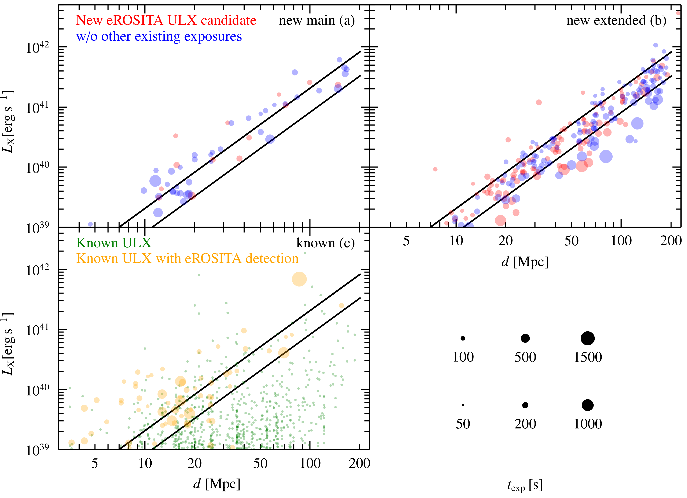<br />
图注：Luminosity distribution with respect to distance of the main new (a), extended new (b), and known (c) sample. We representatively show the sample by \(\citet{walton2022}\) as known sources without eROSITA detection and selected the highest available luminosity for each source from their catalog. The luminosities of known sources with eROSITA detection were determined using data from eRASS1. We converted these luminosities to the same energy band as used for eROSITA. The solid black lines denote the detection limits for the exposure at the ecliptic and the median exposure. The detection limit at the ecliptic pole is not covered by the diagram. Sources within the central exclusion zone of their hosts are not shown in the third panel. We have omitted uncertainties in the diagrams, as they would visually interfere with sizes of the circles indicating the exposure time. The average luminosity uncertainty in the first panel is ${\sim}58\%$, in the second panel it is ${\sim}77\%$, and of all eROSITA measurements in the third panel it is ${\sim}63\%$.<br />
对应解读：对应“距离—光度或距离—通量图”和关键图表导读中的图3完整性判断段落。<br />
入选理由：该图直接给出主样本新候选、扩展样本新候选和已知样本的光度—距离分布，并叠加 eRASS1 不同曝光条件下的探测极限线，是检验10^39 erg/s阈值、约7 Mpc完整性声明、已知源未恢复和新源发现空间的核心证据。相比其他候选图，它最直接支撑日报对完整性、灵敏度和瞬变性的详细解读。<br />
来源与置信度：\(arxiv_source\)；high；\(arxiv_source\) / aa59942-26.tex:figure[6]</p>
<p><strong>Fig05</strong><br />
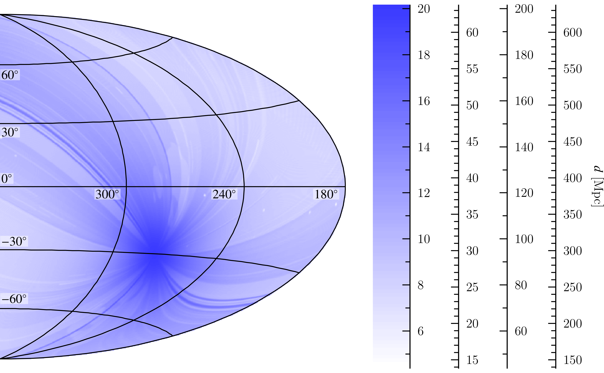<br />
图注：Spatially resolved map of maximum distances up to which a putative ULX with a given minimum luminosity would be detected in the eRASS1 with a detection likelihood of at least 20. The four different legends apply to minimum luminosities of $10^{39}\,\mathrm{erg}\,\mathrm{s}^{-1}$, $10^{40}\,\mathrm{erg}\,\mathrm{s}^{-1}$, $10^{41}\,\mathrm{erg}\,\mathrm{s}^{-1}$, and $10^{42}\,\mathrm{erg}\,\mathrm{s}^{-1}$, from left to right. See Table~\(\ref{tab:volumes}\) for numerical values of the volumes. Note that most \(\mbox{\textsl{HECATE}}\) galaxies are located within 200\,Mpc.<br />
对应解读：对应“候选体天空分布或宿主星系分布图”以及“注入模拟/选择函数标定”相关解读。<br />
入选理由：该图是空间分辨的最大可探测距离图，展示不同最低光度ULX在eRASS1中可被探测到的距离范围，直接体现巡天曝光和灵敏度的天空非均匀性。它比普通点位分布更能解释为什么样本完整性随天空位置和光度变化，是选择函数和有效体积讨论的关键图。<br />
来源与置信度：\(arxiv_source\)；high；\(arxiv_source\) / aa59942-26.tex:figure[5]</p>
<p><strong>Fig10</strong><br />
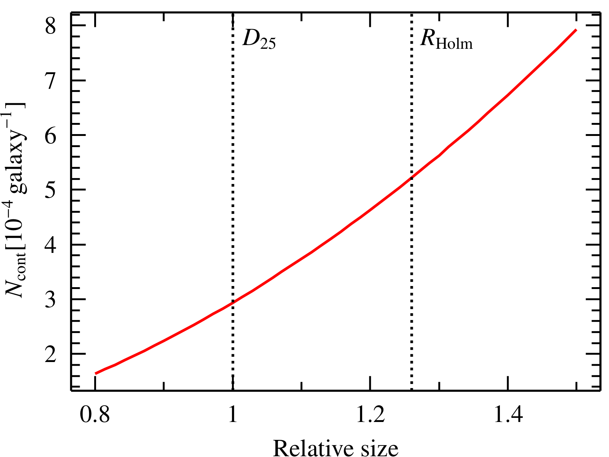<br />
图注：Average number of expected background AGN contaminants per galaxy in the eROSITA sample as a function of the relative size of the ellipses defining the galaxy area. The $D_{25}$ ellipses are used as the reference, with their extent and that of the Holmberg radius also marked in the figure. We expect an increase of ${\sim}59\%$ in size when choosing the Holmberg radius instead of $D_{25}$.<br />
对应解读：对应“背景活动星系核污染估计图或表”和关键图表导读中的图5污染估计段落。<br />
入选理由：该图显示预期背景AGN污染数随星系搜索椭圆尺度变化，直接关联D25区域、Holmberg半径和搜索面积选择对污染率的影响。它是理解约29%未知背景AGN混入上限及其系统不确定性的最相关候选图。<br />
来源与置信度：\(arxiv_source\)；high；\(arxiv_source\) / aa59942-26.tex:figure[10]</p>
<p><strong>Fig02</strong><br />
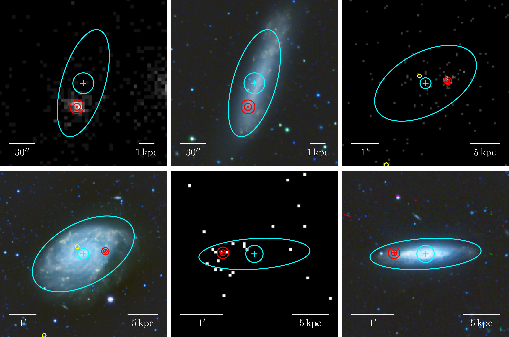<br />
图注：X-ray and optical images of selected ULX candidates. The left column shows 0.2\,keV--5.0\,keV X-ray images; the right columns show optical images of the same area in the g, r, and z bands taken from DESI Legacy Imaging Survey DR8 \(\citep{dey2019}.\) The image scale is shown in the bottom left-hand corner, the projected extent in the frame of the galaxy in the bottom right-hand corner. The cyan ellipse is the $D_{25}$ area as listed in \(\mbox{\textsl{HECATE}}.\) Its central position is denoted by a cross, and the $12''$ radius circular exclusion zone around the center is marked as a circle. The position of the X-ray source is marked with red circles of a $4''$ and $8''$ radius; other eRASS1 sources are indicated as yellow circles. The first two rows show typical examples for candidates in the main ULX sample (NGC~1824 in the first row, NGC~1255 in the second row). The third row shows a typical candidate of the extended, less secure sample in NGC~4129.<br />
对应解读：对应“源混淆诊断图”和模型拟合段落中的图像残差、核区排除、邻近源和人工检查讨论。<br />
入选理由：该图给出X射线与光学图像并标出D25椭圆、12角秒核区排除圈、候选源位置误差圈和其他eRASS1源，能够直观看到候选体是否非核、是否落在宿主投影内以及附近是否有混淆源。它对解释人工筛选、主样本与扩展样本可靠性非常有用。<br />
来源与置信度：\(arxiv_source\)；high；\(arxiv_source\) / aa59942-26.tex:figure[2]</p>
<p><strong>Fig01</strong><br />
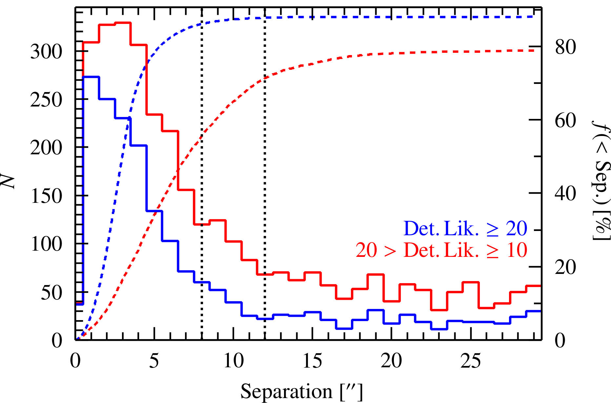<br />
图注：Distribution of the angular separations between the cores of the \(\mbox{\textsl{HECATE}}\) $D_{25}$ regions and the closest eRASS1 source (solid, left axis), and the cumulative distribution of the discrepancy between the initial and detected source position determined from a simulation of eRASS1 (dashed, right axis). We show both sets for different detection likelihood intervals. Separations of $8''$ and $12''$ are marked. For both sets of eRASS1 sources, the wing of central matches extends beyond $8''$ to $12''$. For lower detection likelihoods, a sizeable fraction of simulated sources was detected beyond $8''$.<br />
对应解读：对应关键图表导读中的图2宿主内位置/核区排除讨论，以及模型拟合中的位置误差与宿主归属退化。<br />
入选理由：该图量化HECATE星系核心与最近eRASS1源的角分离分布，并与模拟源位置偏差比较，标出8角秒和12角秒阈值。它直接支撑为什么需要核区排除半径，以及低检测似然下位置误差会如何影响AGN剔除和候选分类。<br />
来源与置信度：\(arxiv_source\)；high；\(arxiv_source\) / aa59942-26.tex:figure[1]</p>
<p><strong>Fig03</strong><br />
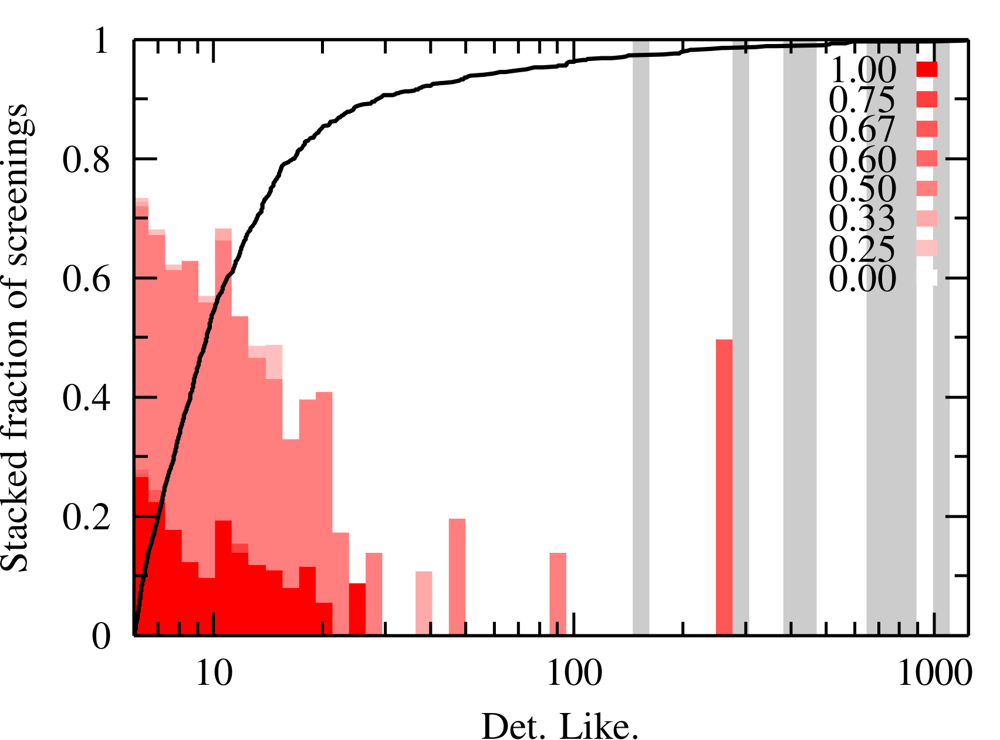<br />
图注：Stacked bar diagram showing how often a candidate was flagged as a spurious detection compared to how often it was screened with respect to the detection likelihood. The opaqueness of the red bars (including the white areas) denote the relative number of times a source within each area was flagged as spurious. Sources were investigated between two and five times, leading to the fractions in the legend. The sizes of the bars correspond to the relative number of sources within the bin falling in the respective category. The black line in the foreground shows the cumulative distribution of the entire candidate sample. Gray areas denote empty bins. The peak at ${\sim}250$ is caused by one of two sources flagged within this bin.<br />
对应解读：对应模型拟合段落中检测似然、人工筛查、主样本与扩展样本置信度划分的讨论。<br />
入选理由：该图展示候选源被标记为伪源的频率随检测似然变化，并给出候选样本的累计分布，能帮助读者理解检测统计量与人工剔除之间的关系。虽然它不直接给出物理光度或污染率，但对评估主样本高置信度和扩展样本低置信度的区别有支撑作用。<br />
来源与置信度：\(arxiv_source\)；high；\(arxiv_source\) / aa59942-26.tex:figure[3]</p>
<h4 id="_45">强相关工作</h4>
<p>这项工作属于超亮 X 射线源星表和巡天选择函数研究的同类工作。可与 \(ROSAT\)、\(XMM\)-Newton)、\(Chandra\) 时代的近邻星系超亮 X 射线源星表对照，检索关键词包括 “ultraluminous X-ray source catalog”, “ULX candidate catalog”, “eROSITA all-sky survey ULX”, “HECATE nearby galaxy catalog”, “background AGN contamination ULX”。这些旧星表通常角分辨率或灵敏度有优势，但天空覆盖不均；本文的主要新意是全天软 X 射线巡天和显式选择函数。</p>
<p>基础理论上，应把本文与超爱丁顿吸积盘、辐射驱动风、几何准直、中子星超亮 X 射线源和中等质量黑洞候选体文献联系起来。相反观点或张力主要在于：部分高光度候选究竟是真正宿主内超亮 X 射线源，还是背景活动星系核投影；部分超高表观光度源究竟需要中等质量黑洞，还是可以由超临界吸积和各向异性辐射解释。检索关键词可用 “super-Eddington accretion ULX”, “pulsating ULX”, “intermediate-mass black hole ULX”, “ULX beaming”, “ULX transient duty cycle”。</p>
<p>如果要寻找同类源和历史原型，应关注 M82 X-2、NGC 5907 ULX-1、Holmberg II X-1、NGC 1313 X-1 和 HLX-1 等对象。它们分别代表脉冲超亮 X 射线源、极高表观光度源、经典近邻星系超亮 X 射线源和中等质量黑洞候选方向。本文不是针对单一命名源的物理论文，而是候选体目录论文，因此后续应通过星表中的单源名称再检索同源历史观测。</p>
<p><strong>同一事件 / 同类源线索</strong>：</p>
<ul>
<li><a href="https://arxiv.org/abs/2608.25620">https://arxiv.org/abs/2608.25620</a></li>
<li><a href="https://arxiv.org/pdf/2608.25620">https://arxiv.org/pdf/2608.25620</a></li>
<li><a href="https://arxiv.org/abs/1809.01146">https://arxiv.org/abs/1809.01146</a></li>
<li><a href="https://www.mpe.mpg.de/eROSITA">https://www.mpe.mpg.de/eROSITA</a></li>
</ul>
<p><strong>相似工作</strong>：</p>
<ul>
<li><a href="https://arxiv.org/abs/astro-ph/0402530">https://arxiv.org/abs/astro-ph/0402530</a></li>
<li><a href="https://arxiv.org/abs/1101.1095">https://arxiv.org/abs/1101.1095</a></li>
<li><a href="https://arxiv.org/abs/1510.04223">https://arxiv.org/abs/1510.04223</a></li>
</ul>
<p><strong>基础理论 / 方法工作</strong>：</p>
<ul>
<li><a href="https://arxiv.org/abs/0706.4163">https://arxiv.org/abs/0706.4163</a></li>
<li><a href="https://arxiv.org/abs/1302.5424">https://arxiv.org/abs/1302.5424</a></li>
<li><a href="https://arxiv.org/abs/1703.10728">https://arxiv.org/abs/1703.10728</a></li>
</ul>
<p><strong>相反观点 / 张力线索</strong>：</p>
<ul>
<li><a href="https://arxiv.org/abs/1410.3590">https://arxiv.org/abs/1410.3590</a></li>
<li><a href="https://arxiv.org/abs/1501.02003">https://arxiv.org/abs/1501.02003</a></li>
<li><a href="https://arxiv.org/abs/1609.07129">https://arxiv.org/abs/1609.07129</a></li>
</ul>
</details>
<h3 id="5-constraining-gamma-ray-burst-viewing-angles-with-swiftxrt-afterglow-light-curves">5. Constraining gamma-ray burst viewing angles with Swift/XRT afterglow light curves</h3>
<ul>
<li>来源：arXiv / astro-ph.HE</li>
<li>链接：https://arxiv.org/abs/2608.25313v1</li>
<li>作者：Cheng-Jie Sun, Shuang-Xi Yi, Lin Zhou, Yuan-Chuan Zou, Yu-Peng Yang, Si-Ji Xin, Yan-Kun Qu, Wen-Long Zhang</li>
<li>评分：novelty 7/10，importance 7/10，relevance 9/10，final 8.70/10</li>
<li>推荐理由：利用 Swift/XRT afterglow jet break 约束 GRB viewing angles，样本和模型较常规但主题属于 GRB 高优先级方向，对喷流几何统计有参考价值。</li>
</ul>
<p><strong>中文题目</strong>：用 Swift/XRT 余辉光变曲线约束伽马暴喷流视角</p>
<p><strong>做了什么</strong>：这篇文章用 Swift/XRT 的 X 射线余辉光变曲线来反推伽马暴喷流的观测视角，核心抓手是余辉中的喷流拐折。作者选取了可把拐折解释为喷流边缘效应、且数据覆盖足够好的样本：均匀星际介质环境中的 20 个伽马暴和恒星风环境中的 20 个伽马暴，并用两个顶帽喷流模型做 MCMC 拟合。一个模型只包含简化几何效应，另一个加入高纬度辐射。结果显示，简化模型在约化 \(\chi^2\) 和贝叶斯信息准则上整体更优；多数伽马暴的离轴比 \(q=\theta_{\rm obs}/\theta_{\rm jet}\) 很小，模型 1 的平均值约为 \(0.1851\)，说明样本中的伽马暴通常被近轴观测到。作者还发现 \(q\) 在均匀介质与风介质之间、以及有无 X 射线平台的子样本之间没有显著差异；视角 \(\theta_{\rm obs}\) 随红移减小，但 \(q\) 本身没有显著宇宙演化。</p>
<p><strong>为什么重要</strong>：伽马暴的能量、喷流开角、事件率和多信使对应体解释都强烈依赖观测视角。过去很多工作默认我们看到的长伽马暴大多近轴，但真正从一批 Swift/XRT 光变曲线中系统估计 \(\theta_{\rm obs}\) 和 \(q\) 并比较介质环境、高纬度辐射影响的工作并不多。这篇文章的重要性在于，它把“喷流拐折能告诉我们看喷流的角度”这个想法转化为一个可批量应用的拟合流程，并给出了一个面向 Swift 时代样本的经验分布。</p>
<p><strong>理论 / 观测 / 仪器方法价值</strong>：对理论而言，结果支持经典顶帽喷流在一部分具有清晰喷流拐折的 X 射线余辉中仍有解释力，同时也提示高纬度辐射在这些光变的喷流拐折拟合中未必总是改善模型。对观测而言，它提供了从 XRT 光变直接估计 \(q\) 的样本统计，可用于校正伽马暴真实事件率和准直能量。对方法而言，文章展示了如何结合介质密度剖面、喷流边缘效应、MCMC 后验和信息准则来比较余辉模型。</p>
<p><strong>为什么应该关注</strong>：如果你关心伽马暴是否真的是“典型近轴事件”、短伽马暴和引力波伽马暴对应体的离轴解释、或未来 SVOM、Einstein Probe、THESEUS 等任务如何从早期余辉判断喷流几何，这篇文章值得看。它不是给出一个全新的喷流物理模型，而是在一个相对透明的框架下量化了 Swift/XRT 样本中 \(\theta_{\rm obs}\) 的分布和选择效应。读者尤其应关注：样本筛选是否偏向近轴亮事件、模型 1 为何优于含高纬度辐射的模型 2、以及 \(\theta_{\rm obs}\) 与红移的相关性到底是物理演化还是探测阈值造成。</p>
<details class="paper-detail">
<summary>展开详细解读：文章讲解、背景、理论、重点章节、图表与相关工作</summary>
<h4 id="_46">文章详细讲解</h4>
<p>科学问题：伽马暴余辉光变曲线中的喷流拐折通常被解释为相对论喷流减速后，洛伦兹因子 \(\Gamma\) 降到约 \(1/\theta_{\rm jet}\) 时喷流边缘进入可见区，导致光变从较平缓衰减转为更陡衰减。但如果观测者不在喷流轴线上，拐折的出现时间、平滑程度和前后衰减率都会改变。因此，光变曲线不只包含喷流开角 \(\theta_{\rm jet}\)，也包含观测视角 \(\theta_{\rm obs}\) 的信息。本文要回答的是：在 Swift/XRT 的 X 射线余辉中，能否用喷流拐折系统约束一批伽马暴的 \(\theta_{\rm obs}\) 和离轴比 \(q=\theta_{\rm obs}/\theta_{\rm jet}\)，以及这些量是否随外部介质、X 射线平台或红移变化。</p>
<p>作者怎么做：他们从 Swift/XRT 余辉光变中筛选出喷流拐折可归因于边缘效应、且拐折前后数据覆盖足够的样本，并按外部密度剖面分为均匀星际介质和恒星风介质两组，每组 20 个伽马暴。文章使用两个顶帽喷流模型。模型 1 是简化几何模型，不显式考虑高纬度辐射；模型 2 更完整，加入喷流不同角区到达时间延迟和高纬度辐射贡献。两类介质剖面分别影响动力学减速律和喷流拐折时间标度。拟合采用 MCMC，在给定光变误差的情况下估计喷流参数，并用约化 \(\chi^2\) 和贝叶斯信息准则比较模型。</p>
<p>关键结果：从摘要信息看，模型 1 对所有样本的拟合都优于模型 2，这一点很值得注意，因为“更物理完整”的模型并不一定在给定数据质量、采样和参数自由度下更受支持。作者得到的 \(q\) 分布集中在小值，模型 1 的平均 \(q\) 约为 \(0.1851\)，意味着大多数被 Swift/XRT 选中且具有可识别喷流拐折的伽马暴，是沿喷流轴附近观测到的，而不是接近喷流边缘或明显离轴的事件。视角在对数空间近似高斯分布，说明可用一个经验族来描述样本的角度分布。Kolmogorov-Smirnov 检验显示，\(q\) 在均匀介质和风介质之间没有显著差异，有无 X 射线平台的样本之间也没有显著差异。</p>
<p>局限和下一步：这类分析的主要限制来自样本选择和模型简化。只有光变拐折清晰、覆盖充足、且可解释为边缘效应的事件才进入样本，因此天然偏向明亮、近轴、余辉跟踪良好的伽马暴。顶帽喷流假设忽略了真实喷流可能具有的角结构，例如高斯喷流、幂律结构喷流或核-翼结构；这些模型可能给出不同的 \(\theta_{\rm obs}\) 解释。红移越高得到的 \(\theta_{\rm obs}\) 越小，可能是物理演化，也可能是探测阈值只允许高红移近轴亮事件进入样本。下一步应把 X 射线、光学和射电多波段联合拟合，纳入结构喷流模型，并通过注入-恢复模拟量化 Swift/XRT 样本的视角选择函数。</p>
<h4 id="_47">关键结果是怎么做出来的</h4>
<p>本文最重要的结果是：在作者筛选的 40 个 Swift/XRT 喷流拐折样本中，离轴比 \(q=\theta_{\rm obs}/\theta_{\rm jet}\) 普遍较小，并且这一结论对均匀星际介质和风介质子样本都成立。样本选择是证据链的第一环。作者没有把所有 XRT 余辉都纳入，而是要求光变中存在可归因于喷流边缘效应的拐折，并且拐折前后有足够的数据点约束斜率和拐折时间。最终样本被分成 20 个均匀介质事件和 20 个风介质事件，这有助于比较外部密度剖面对 \(q\) 推断的影响，但也意味着结论适用于“有可识别喷流拐折的 Swift/XRT 子样本”，不能直接代表全部伽马暴。</p>
<p>拟合环节中，作者对每个事件分别用两个顶帽喷流模型拟合 X 射线余辉光变。模型 1 不含高纬度辐射，主要把拐折解释为相对论 beaming 锥逐渐看到喷流边缘后的几何效应；模型 2 包含高纬度辐射，因而在曲线形状上可产生额外的平滑和延迟特征。每个模型在均匀介质和风介质假设下都有不同的动力学标度。MCMC 给出 \(\theta_{\rm obs}\)、\(\theta_{\rm jet}\)、\(q\) 及相关光变参数的后验范围。读者应重点检查后验是否单峰、\(\theta_{\rm obs}\) 与 \(\theta_{\rm jet}\) 是否强退化，以及拐折时间 \(t_{\rm j}\) 是否主要由少数数据点决定。</p>
<p>模型比较依赖约化 \(\chi^2\) 和贝叶斯信息准则。约化 \(\chi^2\) 反映残差相对误差条的大小，而贝叶斯信息准则在拟合优度之外惩罚参数数目。因此模型 2 即便能更灵活地描述光变，如果额外参数没有显著降低残差，就会在贝叶斯信息准则上吃亏。摘要称模型 1 对所有伽马暴都更优，这说明在该样本和误差模型下，高纬度辐射并未成为解释喷流拐折的必要成分。这里的关键不是说高纬度辐射在物理上不存在，而是说 XRT 喷流拐折数据本身没有强制要求加入它。</p>
<p>统计检验方面，作者比较了不同子样本的 \(q\) 分布：均匀介质对风介质，以及有 X 射线平台对无平台。Kolmogorov-Smirnov 检验显示这些 \(q\) 分布没有显著差异。这个结果支持一种简单图像：\(q\) 更多由观测选择和喷流指向决定，而不是由 circumburst 介质类型或中心引擎平台活动直接控制。不过读者需要看检验的 \(p\) 值、样本量和经验累积分布差异，因为每个子样本只有几十个量级甚至更少，统计功效有限。</p>
<p>另一个结果是 \(\theta_{\rm obs}\) 随红移显著减小，而 \(q\) 没有显著演化。这组结论需要小心解读。若 \(q\) 不变而 \(\theta_{\rm obs}\) 变小，可能意味着高红移样本对应更窄的 \(\theta_{\rm jet}\)，也可能是亮度阈值和触发条件选择出了更近轴或更准直的事件。支撑该结论的图表应包括 \(\theta_{\rm obs}\)-红移散点图、\(q\)-红移散点图、相关系数或显著性，以及可能的回归线和置信带。稳健性检验最好包括去除极端红移事件、分介质重复检验、以及考虑测量误差的层级回归。</p>
<details class="paper-subdetail">
<summary>展开背景、理论、公式、模型、章节和图表导读</summary>
<h4 id="_48">背景知识</h4>
<p>研究对象是伽马暴余辉，尤其是 Swift/XRT 在爆发后数十秒到数天、数周时间尺度上记录的 X 射线光变。标准图像中，中心引擎发射超相对论喷流， prompt 伽马射线来自内部耗散或磁重联等过程，余辉来自喷流与外部介质相互作用产生的前向激波。随着喷流扫积外部物质而减速，辐射谱和光变按幂律演化。喷流不是球对称的，因此当相对论 beaming 锥扩大到喷流边缘时，光变会出现所谓喷流拐折。</p>
<p>喷流拐折曾经是估计伽马暴真实能量和事件率的关键工具。早期 BeppoSAX 和地面光学余辉研究发现，若把各向同性等效能量按开角修正，不同伽马暴的能量分布会比原始 \(E_{\rm iso}\) 更集中。但 Swift 之后，X 射线光变出现了更复杂的形态：陡降、平台、正常衰减、耀发、晚期拐折并存。许多 X 射线拐折并非标准消色差喷流拐折，光学和 X 射线有时不同步。因此，只有经过严格筛选的事件才适合用喷流边缘效应反推几何。</p>
<p>为什么现在值得重新看？一方面，Swift/XRT 已积累了大量均匀处理的余辉光变，使得可在统一数据源中做样本统计。另一方面，多信使时代的 GRB 170817A 让“离轴喷流”和“结构喷流”成为核心问题。虽然本文针对的是传统长伽马暴样本中的 X 射线余辉，而不是引力波对应体，但估计 \(\theta_{\rm obs}\) 和 \(q\) 的方法论具有共通性。未来如果要从电磁信号快速判断喷流指向，这类经验分布会成为先验或对照。</p>
<p>该领域常见误区之一是把所有晚期变陡都称为喷流拐折。实际上，谱段穿越、能量注入结束、微物理参数演化、密度突变和反向激波贡献都可能改变光变斜率。误区之二是认为加入更多物理成分必然给出更可信的模型；如果数据采样有限，额外成分可能只是在吸收噪声或系统误差。误区之三是把小 \(q\) 分布直接理解为宇宙中喷流都被近轴看到。观测样本天然偏向近轴，因为近轴事件更亮、更容易触发伽马射线探测器并获得高信噪比余辉。</p>
<h4 id="_49">基础理论 / 方法脉络</h4>
<p>基础物理图像从相对论 beaming 开始。洛伦兹因子为 \(\Gamma\) 的喷流辐射主要集中在角宽约 \(1/\Gamma\) 的锥内。早期 \(\Gamma\) 很大，观测者只看到喷流中靠近视线的一小块区域，无法知道喷流是否有边界。随着外激波减速，\(1/\Gamma\) 变大，喷流边缘逐渐进入可见区；如果喷流是顶帽结构，即开角内能量和洛伦兹因子近似均匀、开角外近似无辐射，光变会在喷流拐折时间 \(t_{\rm j}\) 附近变陡。</p>
<p>外部介质决定减速规律。均匀星际介质可近似为数密度 \(n={\rm const}\)，适合某些长伽马暴周围被搅匀的环境；恒星风介质通常写作 \(\rho\propto r^{-2}\)，对应大质量恒星爆发前的稳态风。对于同样的能量和开角，\(\Gamma(t)\) 在两类介质中的下降速度不同，因此同一个 \(t_{\rm j}\) 会映射到不同的 \(\theta_{\rm jet}\) 和 \(\theta_{\rm obs}\)。本文把样本分成均匀介质和风介质两组，正是为了避免把介质差异误认为视角差异。</p>
<p>观测视角的关键量是 \(q=\theta_{\rm obs}/\theta_{\rm jet}\)。当 \(q\ll 1\) 时，观测者接近喷流轴，光变接近传统轴上喷流拐折；当 \(q\) 接近 1 时，观测者靠近喷流边缘，早期通量、拐折平滑度和拐折时间都会变化；若 \(q>1\)，则是喷流外侧的离轴观测，通常 prompt 伽马射线会显著变暗，传统 Swift GRB 样本中这类事件较少。本文得到 \(q\) 平均约 \(0.1851\)，说明其样本主要处于轴上或近轴区域。</p>
<p>高纬度辐射指的是喷流中偏离视线较大角度的区域，由于光程更长，其辐射到达更晚，并且多普勒因子较小。它常用于解释 prompt 后的陡降尾，也可能影响余辉拐折附近的曲线形状。本文模型 2 加入高纬度辐射，而模型 1 不加入。结果模型 1 更优，说明对这批喷流拐折样本而言，边缘效应的简化描述已经足够，或者 XRT 数据不足以分辨高纬度辐射引起的细节。</p>
<p>常见退化包括 \(\theta_{\rm obs}\) 与 \(\theta_{\rm jet}\) 的退化、外部密度与能量的退化、微物理参数与归一化通量的退化，以及平台结束时间与喷流拐折时间的混淆。系统误差还包括 XRT 光变重整化、耀发剔除、宿主吸收修正、红移缺失、以及误把 chromatic break 当作 achromatic jet break。读者在看本文结果时，应把 \(q\) 看成“在顶帽喷流和指定介质假设下的有效离轴比”，而不是完全模型无关的几何真值。</p>
<h4 id="_50">公式与推导</h4>
<p>第一步是写出相对论外激波的能量标度。对绝热 blast wave，观测者可把各向同性等效能量近似写为</p>
<div class="math-display">\[E_{\rm iso}\sim \Gamma^2 M(r)c^2,\]</div>
<p>其中 \(E_{\rm iso}\) 是各向同性等效动能，\(\Gamma\) 是激波洛伦兹因子，\(M(r)\) 是半径 \(r\) 内扫积的外部质量，\(c\) 是光速。这个式子表达的是扫积物质在相对论运动中的能量预算，适用于绝热、球对称等效近似。</p>
<p>第二步引入外部介质剖面。若数密度写作 \(n(r)=n_0 r^{-k}\) 的等效形式，则扫积质量满足</p>
<div class="math-display">\[M(r)\propto \int_0^r 4\pi r'^2 n(r')m_{\rm p}\,dr' \propto r^{3-k},\]</div>
<p>其中 \(k=0\) 近似均匀星际介质，\(k=2\) 近似恒星风介质，\(m_{\rm p}\) 是质子质量。把它代入能量守恒可得到 \(\Gamma\) 随半径的下降。</p>
<p>第三步把半径与观测时间联系起来。相对论到达时延给出</p>
<div class="math-display">\[t_{\rm obs}\simeq \frac{1+z}{2c}\frac{r}{\Gamma^2},\]</div>
<p>其中 \(z\) 是红移。联立前两式可得 Blandford-McKee 型标度</p>
<div class="math-display">\[\Gamma(t)\propto \left(\frac{E_{\rm iso}}{A_k c^{5-k}t_{\rm obs}^{3-k}}\right)^{1/[2(4-k)]},\]</div>
<p>其中 \(A_k\) 表示介质归一化；对 \(k=0\) 它与 \(n_0m_{\rm p}\) 有关，对 \(k=2\) 它与风参数有关。这个标度说明介质假设会改变从 \(t_{\rm j}\) 到角度的映射。</p>
<p>第四步定义喷流拐折条件。对轴上顶帽喷流，边缘进入可见区时大致有</p>
<div class="math-display">\[\Gamma(t_{\rm j})\,\theta_{\rm jet}\sim 1,\]</div>
<p>其中 \(t_{\rm j}\) 是喷流拐折时间，\(\theta_{\rm jet}\) 是喷流半开角。若观测者有非零视角，几何条件会被 \(\theta_{\rm obs}\) 修正，拐折形状不只由 \(\theta_{\rm jet}\) 决定。</p>
<p>第五步引入本文关注的离轴比：</p>
<div class="math-display">\[q\equiv \frac{\theta_{\rm obs}}{\theta_{\rm jet}},\qquad 0\le q\lesssim 1\]</div>
<p>对能触发传统 prompt 伽马射线的顶帽喷流样本通常关注 \(q<1\)。\(q\ll 1\) 表示近轴观测，\(q\to 1\) 表示接近喷流边缘。本文的经验结论是多数事件位于较小 \(q\) 区间。</p>
<p>第六步把几何效应写成光变模型的形式。一个通用的平滑折断幂律可表示为</p>
<div class="math-display">\[F_\nu(t)=F_{\rm b}\left[\left(\frac{t}{t_{\rm b}}\right)^{s\alpha_1}+\left(\frac{t}{t_{\rm b}}\right)^{s\alpha_2}\right]^{-1/s},\]</div>
<p>其中 \(F_\nu(t)\) 是频率 \(\nu\) 处通量，\(F_{\rm b}\) 是拐折附近归一化，\(t_{\rm b}\) 是拐折时间，\(\alpha_1\) 与 \(\alpha_2\) 是拐折前后衰减指数，\(s\) 控制拐折平滑程度。实际顶帽喷流模型会把 \(t_{\rm b}\)、\(s\) 和斜率变化与 \(q\)、\(\theta_{\rm jet}\) 及介质剖面联系起来。</p>
<p>第七步描述高纬度辐射的基本衰减。若某一辐射面突然停止发射，高纬度尾部满足曲率效应关系</p>
<div class="math-display">\[F_\nu(t)\propto t^{-(2+\beta)},\]</div>
<p>其中 \(\beta\) 是谱指数，定义为 \(F_\nu\propto \nu^{-\beta}\)。模型 2 加入这类角向延迟和多普勒变暗贡献，因此可改变拐折后或过渡区的光变形态。</p>
<p>第八步是拟合统计量。对给定模型参数 \(\boldsymbol{\Theta}\)，常用高斯误差似然为</p>
<div class="math-display">\[\ln \mathcal{L}(\boldsymbol{\Theta})=-\frac{1}{2}\sum_i\left[\frac{F_i-F_{\rm model}(t_i;\boldsymbol{\Theta})}{\sigma_i}\right]^2-\frac{1}{2}\sum_i\ln(2\pi\sigma_i^2),\]</div>
<p>其中 \(F_i\)、\(t_i\)、\(\sigma_i\) 分别是第 \(i\) 个观测通量、观测时间和误差，\(F_{\rm model}\) 是模型预测。MCMC 实际采样的是与 \(\mathcal{L}\) 和先验相乘的后验。</p>
<p>第九步是模型比较。约化卡方和贝叶斯信息准则可写为</p>
<div class="math-display">\[\chi^2_\nu=\frac{1}{N-p}\sum_i\left[\frac{F_i-F_{\rm model}(t_i)}{\sigma_i}\right]^2,\]</div>
<div class="math-display">\[{\rm BIC}=p\ln N-2\ln \mathcal{L}_{\rm max},\]</div>
<p>其中 \(N\) 是数据点数，\(p\) 是自由参数数目，\(\mathcal{L}_{\rm max}\) 是最大似然。本文发现不含高纬度辐射的模型 1 在这些指标上更优，说明额外复杂度没有被数据充分支持。</p>
<h4 id="_51">模型拟合 / 应用方法</h4>
<p>本文的拟合对象是 Swift/XRT 的 X 射线余辉通量随时间变化。实际建模时，关键拟合量包括光变归一化、拐折时间、拐折前后斜率、喷流半开角 \(\theta_{\rm jet}\)、观测视角 \(\theta_{\rm obs}\) 或离轴比 \(q\)，以及与介质剖面相关的动力学参数。均匀介质和风介质分别对应不同的 \(\Gamma(t)\) 标度，因此同样的光变拐折会给出不同几何参数后验。</p>
<p>MCMC 的作用是探索多维参数空间，而不是只给出单个最佳拟合值。读者应关注每个事件的边缘后验和二维角图，尤其是 \(\theta_{\rm obs}\)-\(\theta_{\rm jet}\) 平面。因为 \(q\) 是两个角度的比值，即使单个角度有较大不确定性，\(q\) 也可能在某些模型中较稳定；反过来，如果两个角度强相关，\(q\) 的误差可能被低估。合理的先验边界也很重要，例如是否限制 \(0<\theta_{\rm obs}<\theta_{\rm jet}\)，会直接影响离轴比的后验。</p>
<p>模型比较中，约化 \(\chi^2\) 主要看残差是否符合观测误差，贝叶斯信息准则则惩罚参数数目。本文模型 2 加入高纬度辐射，物理上更丰富，但可能参数更多或形状受限更强。若模型 2 没有显著降低残差，贝叶斯信息准则会偏好模型 1。读者不应把“模型 1 更好”理解为高纬度辐射不存在，而应理解为在该样本、该误差处理和该时间段内，XRT 光变不需要高纬度辐射来解释喷流拐折。</p>
<p>残差诊断是判断拟合可信度的核心。若拐折前后残差呈系统性正负偏移，说明模型斜率或拐折平滑度不对；若平台段残差很大，可能说明能量注入结束被误认为喷流拐折；若早期耀发未充分剔除，会把局部结构错误地拉动全局参数。理想情况下，应在图中同时展示数据点、最佳模型、残差和后验预测带，而不只是给出最佳拟合曲线。</p>
<p>主要系统误差包括：XRT 计数率到通量转换依赖谱模型和吸收修正；不同事件的红移、宿主吸收和谱指数精度不同；外部介质类型可能不是二选一的理想 \(k=0\) 或 \(k=2\)；喷流可能不是顶帽结构；以及样本筛选会偏向近轴高信噪比事件。实际应用中，这套方法适合生成经验先验或做样本层面的统计比较，但对单个事件给出精确 \(\theta_{\rm obs}\) 时必须联合光学、射电、谱演化和宿主环境信息。</p>
<h4 id="_52">重点章节 / 结果段落怎么读</h4>
<p>数据与样本部分应首先阅读。重点看作者如何从 Swift/XRT 光变库中筛选事件：喷流拐折的判据是什么，是否要求红移，如何剔除耀发，是否要求拐折前后都有足够点数，以及如何把 40 个事件分为 20 个均匀介质和 20 个风介质。这个部分决定了结论的适用范围。</p>
<p>模型部分是第二个重点。读者应比较模型 1 和模型 2 的物理差别：模型 1 如何把喷流边缘效应映射到光变形状，模型 2 如何加入高纬度辐射，介质剖面如何进入动力学标度。尤其要看参数定义是否清楚，例如 \(\theta_{\rm obs}\)、\(\theta_{\rm jet}\)、\(q\)、拐折时间和归一化之间的关系。</p>
<p>MCMC 与模型选择部分需要细读。重点看先验范围、步长或采样器设置、收敛判据、误差模型，以及约化 \(\chi^2\) 和贝叶斯信息准则的计算方式。如果模型 2 参数更多，那么贝叶斯信息准则天然会惩罚它；因此要同时看残差降低幅度和参数惩罚项。</p>
<p>主结果部分应围绕 \(q\) 分布、\(\theta_{\rm obs}\) 分布和子样本比较来读。注意模型 1 的平均 \(q\approx 0.1851\) 是本文最直观的数字，但更重要的是分布宽度、置信区间和事件间离散度。均匀介质与风介质、有平台与无平台的 Kolmogorov-Smirnov 检验结果，决定了作者关于 \(q\) 无显著环境依赖的结论。</p>
<p>讨论与稳健性部分应检查三件事：第一，红移趋势是否可能由选择效应造成；第二，顶帽喷流假设与结构喷流解释之间是否存在系统偏差；第三，高纬度辐射模型为何不被数据支持。若附录提供单个事件拟合表、后验图或替代筛选结果，应把它们作为判断结论稳健性的关键材料。</p>
<h4 id="_53">建议重点查看的图表</h4>
<ol>
<li>样本光变总览图：看 40 个 Swift/XRT 余辉的时间覆盖、误差条、拐折前后点数，以及是否存在耀发或平台混淆。</li>
<li>单个事件最佳拟合图：比较模型 1 和模型 2 的曲线，重点看拐折区和晚期残差，而不是只看整体趋势。</li>
<li>模型比较表：检查每个事件的约化 \(\chi^2\)、贝叶斯信息准则、参数数目和数据点数，确认模型 1 是否在所有事件中都有实质优势。</li>
<li>\(q\) 分布直方图或核密度图：看分布是否真的集中在小 \(q\)，是否有长尾，以及均值 \(0.1851\) 是否被少数事件影响。</li>
<li>\(\theta_{\rm obs}\) 的对数分布图：检查“对数空间近似高斯”的拟合质量、均值、宽度和离群点。</li>
<li>子样本经验累积分布图：看均匀介质与风介质、有平台与无平台的 \(q\) 分布是否确实难以区分，并关注 Kolmogorov-Smirnov 检验的 \(p\) 值。</li>
<li>\(\theta_{\rm obs}\)-红移和 \(q\)-红移散点图：判断红移相关性是否由几个高红移事件驱动，是否给出误差条和回归置信带。</li>
<li>MCMC corner plot 或后验诊断：重点看 \(\theta_{\rm obs}\)、\(\theta_{\rm jet}\) 和 \(q\) 的退化关系，以及后验是否受到先验边界截断。</li>
</ol>
<h4 id="_54">关键图表逐图导读</h4>
<p>图 1：建议把样本 XRT 光变总览作为第一张要读的图。横轴通常是爆发后观测时间，最好在源静止系或观测者系中明确标注；纵轴是 X 射线通量或归一化通量。数据点应显示误差条，模型线可能分别对应模型 1 和模型 2。读图时要看拐折是否被多点采样，而不是由一个晚期上限或单个低信噪比点决定。陷阱是早期耀发和平台结束都可能看起来像拐折。</p>
<p>图 2：若论文给出典型事件的模型对比图，横轴为时间，纵轴为通量，模型 1 与模型 2 应用不同线型表示。重点看拐折过渡区的平滑度和晚期衰减斜率。若两条模型线几乎重合，而模型 2 参数更多，那么贝叶斯信息准则偏好模型 1 就不意外。陷阱是线性坐标会弱化晚期差异，最好在双对数坐标和残差图中同时检查。</p>
<p>图 3：\(q\) 分布图是本文结论的核心。横轴应为 \(q=\theta_{\rm obs}/\theta_{\rm jet}\)，纵轴为事件数、概率密度或累积分布。应检查峰值是否靠近小 \(q\)、均值约 \(0.1851\) 是否有清楚标注、以及不同介质子样本是否用不同颜色区分。陷阱是 \(q\) 作为比值可能有非高斯误差，简单直方图未必充分表达后验不确定性。</p>
<p>图 4：\(\theta_{\rm obs}\) 对数分布或高斯拟合图应显示横轴 \(\log \theta_{\rm obs}\)，纵轴为概率密度或事件数。读者要看高斯曲线是否只是描述中心部分，还是也能覆盖尾部。若有离群大视角事件，应检查它们的光变质量和模型依赖。陷阱是选择效应会自然压低大 \(\theta_{\rm obs}\) 事件数，使对数高斯拟合看起来比真实母分布更窄。</p>
<p>图 5：子样本 Kolmogorov-Smirnov 检验图通常可画成经验累积分布。横轴为 \(q\)，纵轴为累积概率。均匀介质与风介质、有平台与无平台的曲线若大体重叠，支持无显著差异。读图时不要只看 \(p\) 值是否大于常用阈值，还要看最大累积分布差异出现在哪个 \(q\) 区间，以及样本数是否足以发现中等效应。</p>
<p>图 6：红移相关图应把横轴设为 \(z\)，纵轴分别为 \(\theta_{\rm obs}\) 和 \(q\)。如果 \(\theta_{\rm obs}\) 随 \(z\) 减小而 \(q\) 不随 \(z\) 变化，图上应出现前者的负相关趋势线和后者的近水平趋势。陷阱是通量限制样本会在高红移处只留下近轴亮事件，因此需要看是否给出选择效应讨论或稳健性检验。</p>
</details>
<h4 id="_55">论文原图 / 可嵌入图片</h4>
<p><strong>Fig04</strong><br />
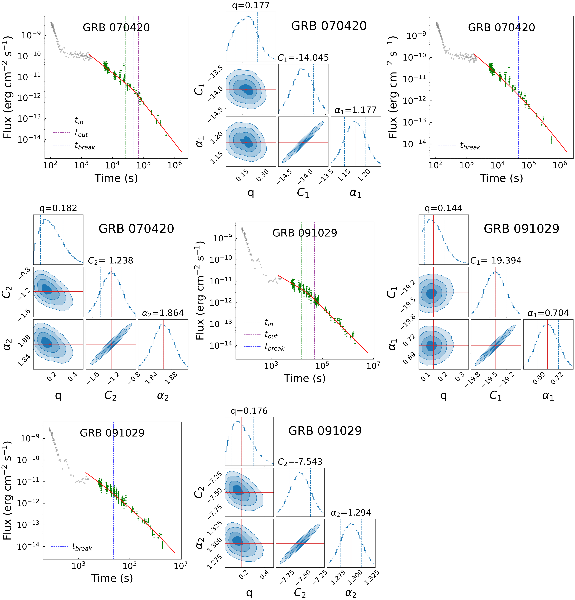<br />
图注：Comparison of model fitting for representative GRBs in ISM (top: GRB 070420) and wind (bottom: GRB 091029) media. For each GRB, the upper and lower rows show results for model~1 and model~2, respectively.<br />
对应解读：“单个事件最佳拟合图”和模型比较段落：代表性 ISM 与 wind 事件中模型 1/模型 2 的拟合对比。<br />
入选理由：这是候选图中最直接对应日报核心诊断的一张：同一代表事件同时展示模型 1 与包含高纬度辐射的模型 2，可用于检查拐折区、晚期衰减和两模型是否实质分离，从而支撑“模型 1 在拟合优度和 BIC 上更优”的解读。<br />
来源与置信度：\(arxiv_source\)；high；\(arxiv_source\) / aastex701_sun0813.tex:figure[4]</p>
<p><strong>Fig05</strong><br />
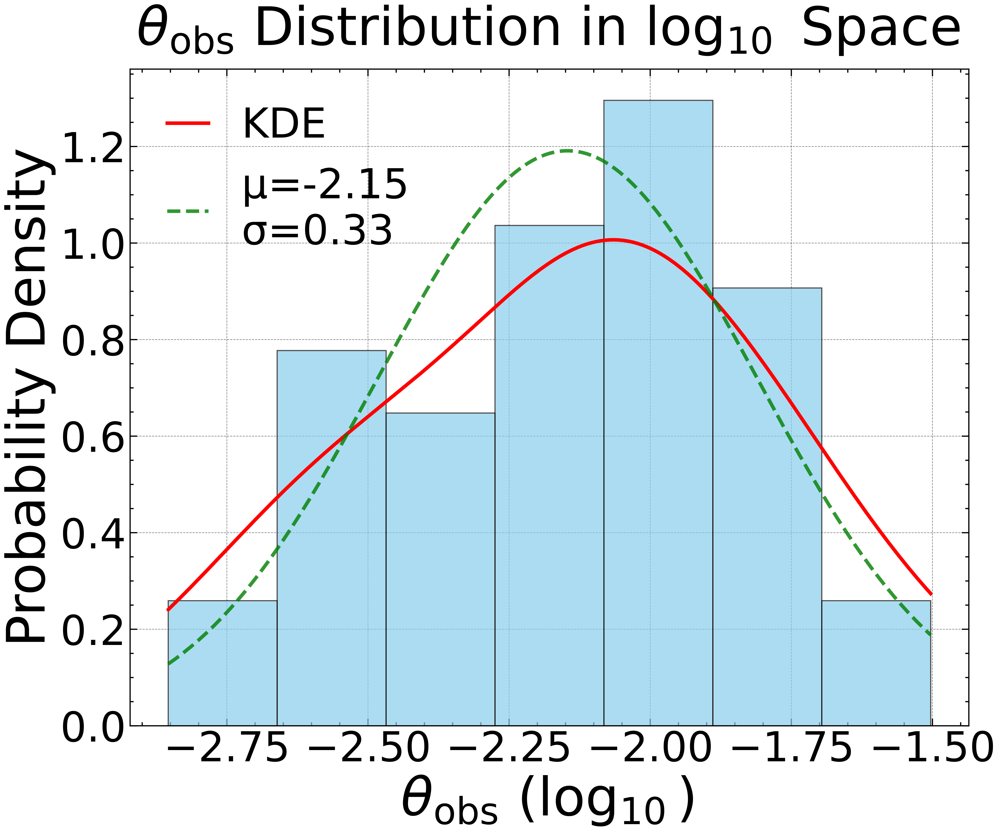<br />
图注：Distribution of the viewing angle $\theta_{\rm obs}$ inferred from model~1, plotted in $\log_{10}$ space. The red solid line is the kernel density estimate and the green dashed line is the Gaussian fit.<br />
对应解读：“θ_obs 的对数分布图”和关键图表逐图导读图 4。<br />
入选理由：图中明确给出 model 1 推断的观测视角 θ_obs 在 log10 空间的分布，并包含核密度估计和高斯拟合，正好对应日报中关于“对数空间近似高斯”、均值宽度、尾部和离群点的检查重点。<br />
来源与置信度：\(arxiv_source\)；high；\(arxiv_source\) / aastex701_sun0813.tex:figure[5]</p>
<p><strong>Fig07</strong><br />
<br />
图注：X-ray afterglow light curve fitting results for model~1. Each panel shows the observed flux (data points) and the best-fit model (solid line) for individual gamma-ray bursts in the ISM environment.<br />
对应解读：“样本光变总览图”和模型拟合残差诊断段落：ISM 环境下 model 1 的 XRT 光变拟合。<br />
入选理由：该图展示 ISM 子样本中各 GRB 的 X 射线余辉数据点与 model 1 最佳拟合线，是检验喷流拐折是否由多点采样、早期耀发或平台是否混淆、以及模型 1 是否能解释实际光变形状的关键图。<br />
来源与置信度：\(arxiv_source\)；high；\(arxiv_source\) / aastex701_sun0813.tex:figure[7]</p>
<p><strong>Fig11</strong><br />
<br />
图注：X-ray afterglow light curve fitting results for model~1. Each panel shows the observed flux (data points) and the best-fit model (solid line) for individual gamma-ray bursts in the stellar wind environment, characterized by density profile $n \propto R^{-2}$.<br />
对应解读：“样本光变总览图”和介质子样本比较：wind 环境下 model 1 的 XRT 光变拟合。<br />
入选理由：与 Fig07 互补，覆盖恒星风介质样本，可用于比较 wind 情形下拐折覆盖和拟合质量；日报强调 ISM 与 wind 两组各 20 个事件，嵌入该图能避免只展示一种介质造成的偏差。<br />
来源与置信度：\(arxiv_source\)；high；\(arxiv_source\) / aastex701_sun0813.tex:figure[11]</p>
<p><strong>Fig08</strong><br />
<br />
图注：Posterior parameter distributions for model~1. Each panel displays the MCMC sampling results for key parameters including the off-axis ratio $q = \theta_{\text{obs}}/\theta_{\text{jet}}$, decay index $\alpha_1$, and normalization factor.<br />
对应解读：“MCMC corner plot 或后验诊断”和模型拟合段落：ISM 环境下 model 1 的后验参数分布。<br />
入选理由：该图包含 q=θ_obs/θ_jet、衰减指数和归一化等关键参数的 MCMC 后验，可用于检查 q 的不确定性、参数退化和是否受先验边界影响，直接支撑日报对后验诊断的提醒。<br />
来源与置信度：\(arxiv_source\)；high；\(arxiv_source\) / aastex701_sun0813.tex:figure[8]</p>
<p><strong>Fig12</strong><br />
<br />
图注：Posterior parameter distributions for model~1. Each panel displays the MCMC sampling results for key parameters including the off-axis ratio $q = \theta_{\text{obs}}/\theta_{\text{jet}}$, decay index $\alpha_1$, and normalization factor in the stellar wind environment.<br />
对应解读：“MCMC corner plot 或后验诊断”和介质子样本比较：wind 环境下 model 1 的后验参数分布。<br />
入选理由：该图是 Fig08 在 wind 环境中的对应后验诊断，能帮助读者比较不同外部介质下 q 和其他拟合参数的约束质量，也支撑日报中关于 ISM 与 wind 的 q 分布差异不显著这一统计结论的模型基础。<br />
来源与置信度：\(arxiv_source\)；high；\(arxiv_source\) / aastex701_sun0813.tex:figure[12]</p>
<h4 id="_56">强相关工作</h4>
<p>这篇工作属于伽马暴喷流几何和余辉喷流拐折研究的同类问题。历史上，Rhoads、Sari、Piran、Halpern 等工作建立了喷流拐折与准直修正能量的基本框架；Frail 等人进一步推动了“标准能量库”的讨论。Swift 之后，XRT 光变复杂性使得喷流拐折判别更困难，很多研究发现 X 射线与光学拐折并不总是消色差，这构成了对简单喷流拐折解释的张力。检索关键词可用 “GRB jet break Swift XRT afterglow viewing angle top-hat jet”。</p>
<p>同类和相邻工作还包括离轴余辉、结构喷流和 GRB 170817A 的研究。GRB 170817A 显示，离轴结构喷流可以产生缓慢上升的 X 射线和射电余辉，与传统近轴顶帽喷流的快速衰减很不同。本文样本主要是 Swift 触发的传统伽马暴，得到小 \(q\) 并不与 GRB 170817A 的离轴解释矛盾，而是说明不同触发选择下的视角分布不同。检索关键词可用 “structured jet off-axis afterglow GRB 170817A viewing angle”。</p>
<p>如果要找相反观点或张力，应检索 “chromatic breaks Swift XRT GRB afterglow” 和 “energy injection X-ray plateau jet break”。这些工作提醒我们，X 射线平台结束、谱断频穿越和中心引擎能量注入都可能伪装成喷流拐折。本文的结论强依赖样本中拐折确实由边缘效应主导，因此与这些研究的关系是互补但也存在方法论张力。</p>
<p><strong>同一事件 / 同类源线索</strong>：</p>
<ul>
<li><a href="https://arxiv.org/abs/2608.25313">https://arxiv.org/abs/2608.25313</a></li>
<li><a href="https://arxiv.org/pdf/2608.25313">https://arxiv.org/pdf/2608.25313</a></li>
<li><a href="https://www.swift.ac.uk/xrt_curves/">https://www.swift.ac.uk/xrt_curves/</a></li>
<li><a href="https://swift.gsfc.nasa.gov/about_swift/xrt_desc.html">https://swift.gsfc.nasa.gov/about_swift/xrt_desc.html</a></li>
</ul>
<p><strong>相似工作</strong>：</p>
<ul>
<li><a href="https://arxiv.org/abs/astro-ph/9903399">https://arxiv.org/abs/astro-ph/9903399</a></li>
<li><a href="https://arxiv.org/abs/astro-ph/9903339">https://arxiv.org/abs/astro-ph/9903339</a></li>
<li><a href="https://arxiv.org/abs/1110.3811">https://arxiv.org/abs/1110.3811</a></li>
<li><a href="https://arxiv.org/abs/1805.09381">https://arxiv.org/abs/1805.09381</a></li>
</ul>
<p><strong>基础理论 / 方法工作</strong>：</p>
<ul>
<li><a href="https://arxiv.org/abs/astro-ph/9709273">https://arxiv.org/abs/astro-ph/9709273</a></li>
<li><a href="https://arxiv.org/abs/astro-ph/9802288">https://arxiv.org/abs/astro-ph/9802288</a></li>
<li><a href="https://arxiv.org/abs/astro-ph/9903339">https://arxiv.org/abs/astro-ph/9903339</a></li>
<li><a href="https://arxiv.org/abs/astro-ph/0102282">https://arxiv.org/abs/astro-ph/0102282</a></li>
</ul>
<p><strong>相反观点 / 张力线索</strong>：</p>
<ul>
<li><a href="https://arxiv.org/abs/0708.0980">https://arxiv.org/abs/0708.0980</a></li>
<li><a href="https://arxiv.org/abs/0801.3275">https://arxiv.org/abs/0801.3275</a></li>
<li><a href="https://arxiv.org/abs/1004.2490">https://arxiv.org/abs/1004.2490</a></li>
</ul>
</details>
<h3 id="6-finding-and-using-interpretable-latents-in-a-neutrino-foundation-model-with-sparse-autoencoders">6. Finding and using interpretable latents in a neutrino foundation model with sparse autoencoders</h3>
<ul>
<li>来源：arXiv / astro-ph.HE</li>
<li>链接：https://arxiv.org/abs/2608.26090v1</li>
<li>作者：Raphaël Bonnet-Guerrini, Johann Ioannou-Nikolaides, Inar Timiryasov, Vincenzo Piuri</li>
<li>评分：novelty 8/10，importance 7/10，relevance 8/10，final 8.65/10</li>
<li>推荐理由：IceCube 数据上的中微子 foundation model 可解释性与角分辨误差估计方法，虽非天体源结果，但对高能中微子事件重建和仪器/分析方法有较强可复用价值。</li>
</ul>
<p><strong>中文题目</strong>：用稀疏自编码器在中微子基础模型中寻找并利用可解释潜变量</p>
<p><strong>做了什么</strong>：这篇文章把大语言模型可解释性领域常用的稀疏自编码器方法，移植到 IceCube 中微子事件的深度学习重建模型上。作者研究一个先在 IceCube 数据上预训练、再为方向重建微调的“中微子基础模型”，在其事件级内部表示中训练稀疏字典，识别出一组可验证的物理潜变量，例如事件亮度、拓扑质量和重建可靠性相关特征。关键发现是：这些潜变量确实编码了物理信息，但原来的方向重建头几乎没有因果性地使用它们。作者进一步训练一个不确定度预测头，用同一内部表示估计角重建误差；该头会利用这些可解释特征，并能在保留 \(20\%\) 事件的选择效率下，把样本的中位角误差从 \(20.2^\circ\) 降到 \(3.2^\circ\)。</p>
<p><strong>为什么重要</strong>：IceCube 这类稀疏、噪声高、几何复杂的探测器越来越依赖深度学习重建，但神经网络内部到底学到了什么、是否真的用上了物理相关信息，一直不透明。本文重要之处不在于提出一个新的天体中微子源结果，而在于展示了一条可检验的路径：用稀疏可解释潜变量把模型内部表示和物理事件属性连接起来，再用因果干预判断下游任务是否使用这些信息。这对高能中微子天文学中的事件筛选、角分辨率评估和系统误差控制都有直接方法学价值。</p>
<p><strong>理论 / 观测 / 仪器方法价值</strong>：对理论和观测而言，本文提供了一种诊断机器学习重建器的工具：不仅看最终角误差，还能追问误差估计依赖哪些可解释事件属性。对仪器和方法而言，它把稀疏自编码器、held-out 验证、匹配 nuisance 控制、独立字典复现实验和表示层因果干预合成一个较严格的流程。实际价值是可以把深度模型中已经学到但未被任务头充分利用的信息转化为更好的事件质量排序，从而在点源搜索、瞬变关联和多信使触发中获得更尖锐的角局域。</p>
<p><strong>为什么应该关注</strong>：如果你使用 IceCube 或类似切伦科夫探测器的机器学习重建结果，本文提醒你：一个模型的内部表示可能含有比最终输出更多的物理信息，糟糕的不是模型没学到，而是下游头没有用对。可解释潜变量还可能成为审查选择函数和质量 cut 的新方式，帮助避免“黑箱分数”直接进入天体物理显著性分析。对关注机器学习在粒子天体物理中可信应用的读者，这篇文章是一个早期但值得跟踪的范例。</p>
<details class="paper-detail">
<summary>展开详细解读：文章讲解、背景、理论、重点章节、图表与相关工作</summary>
<h4 id="_57">文章详细讲解</h4>
<p>科学问题：IceCube 中微子事件由许多数字光学模块记录到的光子到达时间和电荷构成，方向重建需要从稀疏、噪声污染且强几何依赖的数据中恢复入射粒子轨迹。近年来深度神经网络已经能在这类任务上达到很强性能，但内部表示是否对应真实物理概念、这些概念是否被下游方向头实际利用，仍然很难回答。本文的中心问题是：一个在 IceCube 数据上预训练并为方向重建微调的 foundation model，其隐藏表示中是否存在可解释的、可复现的物理潜变量；如果存在，它们能否帮助改进事件级不确定度估计。</p>
<p>作者怎么做：作者在模型的事件级表示上训练稀疏自编码器，将高维表示分解为一组稀疏激活的字典特征。不同于只看相关性或展示若干好看的激活图，他们设计了较严格的验证协议：在 held-out 数据上检验每个潜变量与物理量的对应关系；构造匹配的 nuisance 控制，避免把几何覆盖、总电荷或触发条件等混杂变量误认为物理概念；并在独立字典训练之间要求结果可复现。随后他们用因果干预，即人为增强或抑制某些稀疏特征的激活，观察方向头和新训练的不确定度头输出如何变化。</p>
<p>关键结果：他们得到一个经过验证的“物理概念图谱”，其中潜变量可与事件亮度、拓扑质量、重建难度或角误差相关结构相联系。最有意思的结果是，方向重建头对这个图谱中的许多特征并不敏感：潜变量里确实有可用信息，但原方向头没有强烈依赖它们。相反，当作者在同一事件级表示上训练一个预测角重建误差的不确定度头时，该头会因果性地使用质量和亮度相关特征。按这个可解释不确定度估计选择最可靠的 \(20\%\) 事件时，中位角分辨率由 \(20.2^\circ\) 改善到 \(3.2^\circ\)，说明它能有效区分高质量和低质量事件。</p>
<p>局限和下一步：本文主要是方法验证，而不是最终的 IceCube 物理分析。角分辨率提升是在选择子样本后实现的，因此应与完整样本灵敏度、有效面积、能量和方向依赖的选择函数一起评估。稀疏字典的解释仍依赖人工命名、匹配控制和统计复现，不能自动保证每个潜变量都是单一物理因子。下一步应把这种可解释不确定度估计接入真实点源、瞬变和扩展源分析链，检查它对背景率、暴露、能量分布、天空覆盖和系统误差的影响，并与传统似然重建的不确定度估计直接比较。</p>
<h4 id="_58">关键结果是怎么做出来的</h4>
<p>本文最重要的证据链从一个已经训练好的中微子事件表示开始。样本不是一个天体源样本，而是 IceCube 事件级数据在机器学习重建任务中的输入输出集合；作者关心每个事件的内部表示、方向重建输出以及可用的物理或重建标签。论文摘要没有给出总事件数，因此读者应在数据与训练设置部分查找训练集、验证集、held-out 测试集的大小，以及是否按事件类型、能量范围、天顶角或触发选择分层。这个细节很关键，因为稀疏特征如果只在某一类拓扑或某一几何区域出现，其解释范围就不能外推到全体 IceCube 事件。</p>
<p>第一步结果是稀疏自编码器得到的潜变量图谱。作者不是简单把某个激活和某个物理量做相关图，而是要求候选特征通过 held-out 测试、nuisance 匹配控制和独立字典复现实验。这里读者要关注每个 latent 的选择阈值、稀疏度、激活频率、与物理标签的效应量，以及匹配控制后效应是否仍存在。如果一个特征只是在总亮度或传感器覆盖不均匀时变强，而匹配这些 nuisance 后消失，那它就不能被称为可靠物理概念。</p>
<p>第二步是因果干预。作者对稀疏字典中特定特征的激活进行增强、抑制或替换，再通过原方向头计算输出变化。统计上，这相当于比较干预前后的方向输出扰动、角误差变化或下游损失变化，并用随机特征、matched control 或不同字典副本作为参照。论文的关键结论是方向头“barely draws on this atlas”，即这些已验证潜变量对方向输出的因果影响很小。读者应检查相应图表中干预强度与输出变化是否呈单调关系，以及置信区间是否明显区别于零效应或随机基线。</p>
<p>第三步是训练不确定度头。该头的目标不是重新预测方向，而是预测模型的角重建误差，即预测事件是否可能被重建得好。作者报告按不确定度估计筛选出最优 \(20\%\) 事件后，中位角误差由 \(20.2^\circ\) 变为 \(3.2^\circ\)。这不是单个事件的精度提升，而是通过质量排序得到的高纯度高角分辨率子样本，因此要同时看选择效率、保留事件的能量和方向分布、背景率变化以及与传统质量参数的比较。</p>
<p>显著性和置信度方面，本文的核心更像模型解释与性能诊断，而非发现性统计检验。关键统计量应包括潜变量验证中的 held-out 效应显著性、跨字典复现率、干预效应的均值和误差条、以及不确定度排序下的角分辨率分位数曲线。稳健性检验应重点看不同随机种子、不同字典大小、不同稀疏惩罚、不同事件子样本和不同 nuisance 匹配方案下，物理图谱和 \(20\%\) 筛选性能是否稳定。若这些检验不足，结果仍可作为很有启发的方法演示，但离分析级工具还有距离。</p>
<details class="paper-subdetail">
<summary>展开背景、理论、公式、模型、章节和图表导读</summary>
<h4 id="_59">背景知识</h4>
<p>IceCube 是一个千米量级的冰下切伦科夫中微子探测器，通过记录带电次级粒子在南极冰中产生的切伦科夫光来反推中微子方向、能量和相互作用拓扑。对于天体中微子天文学，方向重建尤其重要：点源搜索、多信使瞬变关联和弥散背景各向异性分析都直接依赖角误差分布。如果角误差估计过于乐观，会制造假关联；如果过于保守，又会稀释真正的源信号。</p>
<p>传统重建通常基于光传播模型、探测器响应和最大似然拟合。它们的优点是物理结构清楚，缺点是计算昂贵、对冰性质和传感器响应系统误差敏感，并且在复杂事件拓扑上可能陷入局部最优。深度学习方法可以从大量模拟和实测事件中学习非线性映射，在速度和某些性能指标上有优势，但代价是可解释性下降：输出分数和内部表征很难直接对应到熟悉的物理量。</p>
<p>近年来机器学习可解释性，特别是 mechanistic interpretability，试图把神经网络中的高维激活拆解成可命名、可干预的特征。稀疏自编码器在大语言模型中被用来寻找语义或功能性特征；本文把这种思路带到粒子天体物理，是因为中微子事件表示很可能也具有“组合式”结构：亮度、几何覆盖、轨迹长度、级联或径迹拓扑、噪声污染和边界效应等因素共同决定重建质量。</p>
<p>现在值得重新看这个问题，是因为高能天文正在从“能否用机器学习重建”转向“能否在物理分析中可信地使用机器学习”。未来更大的中微子探测器和更复杂的多信使触发系统会产生更多事件，传统逐事件精细似然重建难以覆盖所有在线和离线需求。若可解释潜变量能提供稳定的质量评估和选择函数，将有助于把黑箱模型转化为可审计的分析组件。</p>
<p>该领域常见误区有三个。第一，把相关性当解释：某个神经元与能量或亮度相关，并不意味着它编码了单一物理概念。第二，把性能提升当因果理解：模型输出更好不等于我们知道它用了什么信息。第三，把选择后角分辨率提升误读为探测器整体性能提升；保留 \(20\%\) 高质量事件会改变有效面积、能谱和天空暴露，必须在具体科学分析中重新传播这些选择效应。</p>
<h4 id="_60">基础理论 / 方法脉络</h4>
<p>从物理图像看，中微子在冰中相互作用产生带电粒子，带电粒子发出的切伦科夫光被数字光学模块记录为一组时间和电荷观测。方向重建的本质是从这些观测中估计入射方向。径迹型事件通常方向信息较好，因为长程缪子留下时间序列和空间延展；级联型事件更接近点状光源，方向信息较弱。事件亮度、探测器内的几何位置、冰中散射吸收、噪声脉冲都会影响角误差。</p>
<p>机器学习重建把每个事件编码为一个高维表示向量，再由任务头输出方向或其他物理量。所谓 foundation model 在这里可理解为先通过大规模预训练学到通用事件表示，再针对方向重建做微调。一个核心假设是：这个表示向量不仅包含最终方向所需信息，也包含事件质量、亮度、拓扑和 nuisance 条件等信息；这些信息可能没有被方向头充分利用，但可以被其他头或选择策略利用。</p>
<p>稀疏自编码器的基本思想是把高维表示近似分解为少量同时激活的字典元素。稀疏性很重要，因为它迫使每个事件只用少数潜变量解释，从而增加特征可分离性和可命名性。物理上，这类似把一个复杂事件表示投影到若干“概念轴”上，例如高总电荷、边界事件、清晰径迹、低质量重建等。但稀疏特征并不自动等于物理因子，必须用独立样本、控制变量和复现实验验证。</p>
<p>本文的观测和统计逻辑有两层。第一层是解释性诊断：某个潜变量是否稳定地对应物理量，并且不只是 nuisance 的替身。第二层是因果使用诊断：改变这个潜变量是否会改变下游方向或不确定度输出。只有同时满足“可解释”和“被使用”，才能说模型的某个输出依赖该物理概念。本文发现方向头对这些概念依赖弱，而不确定度头依赖强，这说明表示层和任务头之间存在信息利用不充分的问题。</p>
<p>常见退化包括亮度与能量的退化、能量与角分辨率的退化、探测器几何位置与光收集效率的退化、拓扑类型与重建质量的退化。系统误差还包括冰光学模型、传感器效率、噪声模型、模拟与实测数据 domain shift，以及训练集选择偏差。可解释潜变量如果没有针对这些因素做 matched control，就可能把探测器条件误认为事件本征物理。</p>
<h4 id="_61">公式与推导</h4>
<p>可以从事件观测的似然图像开始。设一个 IceCube 事件的观测为 \(x=\{(q_i,t_i,\mathbf{r}_i)\}_{i=1}^{N_{\rm hit}}\)，其中 \(q_i\) 是第 \(i\) 个命中模块的电荷，\(t_i\) 是到达时间，\(\mathbf{r}_i\) 是模块位置；物理参数为 \(\theta\)，例如方向、能量和顶点。传统重建可写成</p>
<div class="math-display">\[\hat{\theta}=\arg\max_{\theta}\,p(x\mid \theta,\eta),\]</div>
<p>其中 \(\eta\) 表示冰光学性质、模块效率和噪声等 nuisance 参数。这个式子说明，方向重建本质上是在给定响应模型下寻找最可能的物理参数。</p>
<p>深度模型把上述显式似然替换为表示学习。若编码器为 \(f_{\phi}\)，事件级表示为</p>
<div class="math-display">\[h=f_{\phi}(x),\qquad \hat{\mathbf{u}}=g_{\psi}(h),\]</div>
<p>其中 \(h\in \mathbb{R}^{d}\) 是隐藏表示，\(\hat{\mathbf{u}}\) 是预测的单位方向向量，\(g_{\psi}\) 是方向头。方向误差通常用球面夹角度量：</p>
<div class="math-display">\[\Delta \Omega=\arccos\left(\hat{\mathbf{u}}\cdot \mathbf{u}_{\rm true}\right),\]</div>
<p>其中 \(\mathbf{u}_{\rm true}\) 是真实或高质量参考方向。本文的不确定度头要预测的就是与 \(\Delta \Omega\) 相关的事件级误差量。</p>
<p>稀疏自编码器把 \(h\) 分解成稀疏潜变量 \(z\)。一个标准目标函数可写为</p>
<div class="math-display">\[\min_{W,D,b}\;\mathbb{E}_{h}\left[\left\|h-Dz\right\|_2^2+\lambda \left\|z\right\|_1\right],\qquad z=\sigma(Wh+b),\]</div>
<p>其中 \(D\) 是字典，\(W\) 是编码矩阵，\(b\) 是偏置，\(\lambda\) 控制稀疏惩罚，\(\sigma\) 是非线性激活。第一项要求重构原表示，第二项要求每个事件只激活少数特征。</p>
<p>为了验证某个潜变量 \(z_k\) 是否对应物理量 \(y\)，可以比较控制 nuisance 后的条件期望差：</p>
<div class="math-display">\[\delta_k(y)=\mathbb{E}[y\mid z_k>a,\mathcal{M}]-\mathbb{E}[y\mid z_k\le a,\mathcal{M}],\]</div>
<p>其中 \(a\) 是激活阈值，\(\mathcal{M}\) 表示匹配后的 nuisance 条件，例如总亮度、几何位置或触发类别。若 \(\delta_k(y)\) 在 held-out 样本中显著非零且跨字典复现，才更可信地说明 \(z_k\) 携带了与 \(y\) 相关的物理信息。</p>
<p>因果干预可写成对表示的重构方向做替换。若只改变第 \(k\) 个潜变量，干预后的表示近似为</p>
<div class="math-display">\[h^{\prime}=h+D_k\left(z_k^{\prime}-z_k\right),\]</div>
<p>其中 \(D_k\) 是字典的第 \(k\) 个基向量，\(z_k^{\prime}\) 是干预后的激活值。下游方向头的因果敏感度可用</p>
<div class="math-display">\[S_k^{\rm dir}=\mathbb{E}\left[\arccos\left(g_{\psi}(h^{\prime})\cdot g_{\psi}(h)\right)\right]\]</div>
<p>衡量。若 \(S_k^{\rm dir}\) 很小，说明方向输出对该潜变量不敏感，即使该潜变量本身可解释。</p>
<p>不确定度头可写为</p>
<div class="math-display">\[\hat{s}=r_{\omega}(h),\qquad s=\log\left(\Delta \Omega+\epsilon\right),\]</div>
<p>其中 \(r_{\omega}\) 是新训练的误差预测头，\(\epsilon\) 防止对数发散。使用对数误差是常见做法，因为角误差分布通常长尾明显。若采用均方目标，一个简化训练损失为</p>
<div class="math-display">\[\mathcal{L}_{\rm unc}=\frac{1}{N}\sum_{j=1}^{N}\left[r_{\omega}(h_j)-\log\left(\Delta \Omega_j+\epsilon\right)\right]^2.\]</div>
<p>该损失训练的是事件排序和误差标定能力，而不是重新拟合方向。</p>
<p>选择高质量事件时，设 \(Q_p\) 是 \(\hat{s}\) 的第 \(p\) 分位阈值，保留比例为 \(p\)。选择函数为</p>
<div class="math-display">\[A_j(p)=\mathbf{1}\left(\hat{s}_j\le Q_p\right),\qquad \epsilon_{\rm sel}=\frac{1}{N}\sum_{j=1}^{N}A_j(p).\]</div>
<p>本文报告的 \(20\%\) 选择效率对应 \(\epsilon_{\rm sel}=0.2\)。被选样本的中位角分辨率可写为</p>
<div class="math-display">\[\Delta \Omega_{50}(p)=\operatorname{median}\{\Delta \Omega_j:A_j(p)=1\}.\]</div>
<p>论文摘要给出的结果是 \(\Delta \Omega_{50}(1)=20.2^\circ\) 与 \(\Delta \Omega_{50}(0.2)=3.2^\circ\) 的对比。</p>
<p>若把该选择用于点源搜索，还必须把选择函数传播到有效面积。简化地说，选择后的有效面积满足</p>
<div class="math-display">\[A_{\rm eff}^{\rm sel}(E,\delta)=A_{\rm eff}(E,\delta)\,P\left(A=1\mid E,\delta\right),\]</div>
<p>其中 \(E\) 是中微子能量，\(\delta\) 是赤纬。这个式子提醒读者：角分辨率改善不能孤立解读，事件筛选会改变能量和天空方向依赖的暴露。</p>
<h4 id="_62">模型拟合 / 应用方法</h4>
<p>本文涉及两类拟合。第一类是原始中微子 foundation model 的预训练和方向重建微调。虽然摘要没有展开模型结构，但一般而言，它会最小化方向误差相关损失或球面分布负对数似然，输出方向单位向量或方向分布参数。这里的拟合量包括编码器参数、方向头参数，以及可能的能量或拓扑辅助目标。残差诊断应看预测方向与参考方向的夹角分布，特别是中位数、\(68\%\) containment 和长尾。</p>
<p>第二类是稀疏自编码器拟合。它拟合的不是物理标签，而是模型内部表示 \(h\) 的稀疏重构。关键超参数包括字典大小、稀疏惩罚强度、激活函数、训练随机种子和重构误差容忍度。字典太小会把多个物理因素混到同一特征；字典太大可能产生碎片化或伪特征。因而本文强调独立字典训练复现，是为了避免把某次训练偶然得到的方向当成物理发现。</p>
<p>第三类是不确定度头拟合。它以事件级表示为输入，以实际角误差或其变换为监督信号。实际应用中可选择均方误差、分位数损失、排序损失或校准过的概率似然。若目标是选择高质量事件，排序质量可能比绝对误差标定更重要；若目标是进入点源似然，则每个事件的角误差概率密度需要校准，否则会影响显著性和置信区间。</p>
<p>参数退化和系统误差非常重要。事件亮度既与能量相关，也与重建质量相关；高能事件更亮，通常角误差更小，但也可能因拓扑复杂或边界效应产生异常。探测器几何位置会影响命中模块数和光传播路径，可能被稀疏特征误学为“物理质量”。因此本文使用 matched nuisance controls 是合理的，但读者要检查匹配变量是否充分，是否包括能量、天顶角、顶点位置、总电荷、命中数和事件类别。</p>
<p>模型可能失败的场景包括：模拟到真实数据的 domain shift 使潜变量解释在实测样本中改变；某些特征只在训练集常见区域有效，对罕见高能事件、近水平事件或边界事件不稳；不确定度头通过学习选择函数牺牲某些科学目标所需的样本代表性。若要部署到天体源搜索中，需要重新计算选择后背景模型、scrambled sky 分布、有效面积和能量响应。</p>
<h4 id="_63">重点章节 / 结果段落怎么读</h4>
<p>数据与模型部分应首先阅读。读者需要确认 foundation model 的输入是什么，例如命中时间、电荷、传感器位置或图结构；预训练任务和方向微调任务是什么；训练、验证和 held-out 测试样本如何划分。尤其要看样本是否来自模拟、实测或混合，以及角误差标签如何定义。</p>
<p>稀疏自编码器方法部分是全文方法核心。重点看作者从哪一层或哪一种事件级表示抽取 \(h\)，字典维度和稀疏正则如何选择，重构质量如何评估。还要看他们如何给 latent 命名：是通过单变量相关、富集分析、事件可视化，还是通过控制 nuisance 后的统计检验。</p>
<p>验证协议部分应细读。本文的说服力依赖 held-out tests、matched nuisance controls 和 replication across independent dictionary trainings。读者应检查每个步骤的判定标准：什么算通过 held-out，匹配变量有哪些，跨字典复现如何量化，是否有多重检验修正或 false discovery 控制。</p>
<p>因果干预结果部分决定“模型是否使用这些概念”。要看干预是在稀疏特征空间、重构表示空间还是原始输入空间进行；干预幅度是否在训练分布内；对方向头输出和损失的影响与随机基线相比如何。这里不要只看可视化，要看干预效应的误差条和稳健性。</p>
<p>不确定度头和选择性能部分是实际应用价值所在。重点看角误差预测的校准图、按预测误差排序后的 containment 曲线、\(20\%\) 选择效率处的事件组成，以及与已有质量估计或传统重建不确定度的比较。若论文有附录，应查不同字典大小、随机种子和事件子样本下结果是否稳定。</p>
<h4 id="_64">建议重点查看的图表</h4>
<ol>
<li>
<p>模型与稀疏自编码器流程图：看输入事件如何进入 foundation model，取哪一层表示训练稀疏字典，方向头和不确定度头分别接在哪里。</p>
</li>
<li>
<p>稀疏潜变量图谱或 atlas 表：检查每个 latent 的物理解释、激活频率、效应量、held-out 显著性和跨字典复现情况，避免只看作者命名。</p>
</li>
<li>
<p>nuisance 匹配后的验证图：重点看匹配前后相关性是否变化，控制总亮度、几何位置或事件拓扑后，潜变量与目标物理量的关联是否仍保留。</p>
</li>
<li>
<p>因果干预图：看横轴是否为干预强度或被干预 latent，纵轴是否为方向输出变化、损失变化或误差变化；关键是方向头对 atlas 特征的响应是否接近随机基线。</p>
</li>
<li>
<p>不确定度头依赖特征图：看该头对质量和亮度特征的 causal attribution 是否显著，是否与方向头形成对照。</p>
</li>
<li>
<p>角分辨率随选择效率变化曲线：重点检查在 \(20\%\) efficiency 处中位角误差是否达到 \(3.2^\circ\)，并看其他分位数是否也改善，还是只有中位数改善而长尾仍严重。</p>
</li>
<li>
<p>残差或校准图：看预测不确定度分箱内的真实角误差分布，判断误差估计是可校准的概率量，还是仅适合排序。</p>
</li>
<li>
<p>稳健性表：看不同随机种子、字典大小、稀疏惩罚和数据子样本下，atlas 与选择性能是否稳定。</p>
</li>
</ol>
<h4 id="_65">关键图表逐图导读</h4>
<p>图 1：如果论文给出方法流程图，横向通常应从 IceCube 事件输入开始，经过预训练编码器得到事件级表示，再分成方向头、稀疏自编码器和不确定度头三条路径。读图时要确认稀疏自编码器不是直接解释原始传感器命中，而是解释模型内部表示；这决定了结论是“模型学到了什么”，不是“探测器直接测到了什么”。陷阱是把 latent 图谱误认为物理参数拟合结果。</p>
<p>图 2：潜变量 atlas 图可能以热图、散点矩阵或表格呈现。坐标轴往往是一组 latent 与一组物理或重建标签，颜色表示相关性、效应量或富集程度。应优先看通过 held-out 和 nuisance 控制后的列，而不是训练集上的漂亮相关性。若同一物理概念分散在多个 latent 中，说明表示可能具有多义性或特征碎片化。</p>
<p>图 3：nuisance control 图通常比较匹配前后的分布或效应量。横轴可能是总电荷、命中数、天顶角、顶点位置等 nuisance，纵轴是 latent 激活或目标物理量。关键是看高激活组和低激活组在 nuisance 上是否真的匹配；如果匹配不充分，后续物理解释就会偏乐观。误差条或阴影区间要与样本量一起解读。</p>
<p>图 4：因果干预结果图应展示改变某个 latent 后方向头输出的变化。横轴可以是干预的 latent 编号或干预强度，纵轴可以是输出方向夹角变化、损失变化或角误差变化。本文关键结论是方向头对已验证 atlas 特征依赖很弱，因此图上应看到这些特征的效应接近零或接近随机对照。陷阱是把“latent 与重建误差相关”误读为“方向头使用了 latent”；因果干预正是用来区分这两点。</p>
<p>图 5：不确定度头的 attribution 或干预图应与图 4 对照。横轴仍可能是 latent，纵轴是不确定度输出变化或预测误差损失变化。若质量和亮度特征有显著响应，说明不确定度头确实利用了 atlas 中的物理信息。读者要看这种响应是否在独立字典和 held-out 样本中重复出现。</p>
<p>图 6：角分辨率选择曲线通常横轴为选择效率，纵轴为中位角误差或 containment angle。本文摘要中的 \(20\%\) 选择效率、\(20.2^\circ\) 到 \(3.2^\circ\) 的改善应能在这里看到。要同时查看 \(50\%\)、\(68\%\) 或 \(90\%\) containment，因为中位数改善不一定意味着尾部误差得到控制。还要警惕选择效率降低导致有效面积损失，这张图不能单独代表点源灵敏度提升。</p>
<p>图 7：校准或残差图如果存在，横轴应为预测不确定度分箱，纵轴为真实角误差统计量或覆盖率。理想情况下，预测更小不确定度的分箱应有更小真实角误差，并且覆盖率接近标称值。若只呈现排序性能而无校准，说明该头可用于 cut，但暂时不宜直接作为逐事件角误差概率密度进入物理似然。</p>
</details>
<h4 id="_66">论文原图 / 可嵌入图片</h4>
<p><strong>Fig07</strong><br />
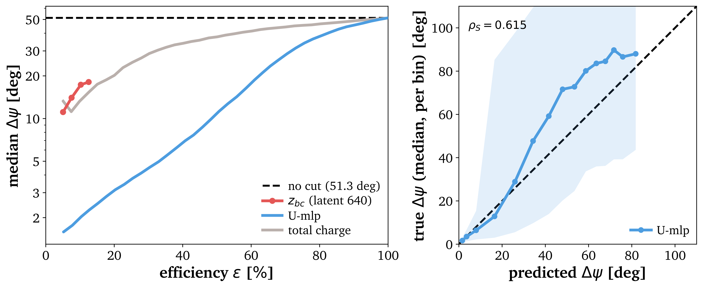<br />
图注：Left: median angular error of the retained sample as a function of selection efficiency for detector-level observables, distributed representation read-outs, the sparse feature $\zbc$, and the uncertainty head. The horizontal line gives the unselected resolution, and bands show bootstrap intervals. Right: median true angular error in bins of the error predicted by $U_{\mathrm{lin}}$ and $U_{\mathrm{MLP}}$. The diagonal indicates perfect calibration, while the shaded regions show the within-bin spread of true angular errors.<br />
对应解读：对应“建议重点查看的图表”第6项角分辨率随选择效率变化曲线、第7项残差或校准图，以及“关键图表逐图导读”图6和图7。<br />
入选理由：这是最直接支撑论文核心性能结论的图：左图给出选择效率与保留样本中位角误差的关系，可核查20% efficiency处不确定度头是否把角分辨率从未筛选水平显著改善到约3.2度；右图给出预测误差分箱内的真实角误差及完美校准对角线，可判断该不确定度头是仅能排序还是具有校准意义。它同时覆盖日报中最关键的性能曲线和校准诊断，科学价值最高。<br />
来源与置信度：\(arxiv_source\)；high；\(arxiv_source\) / main.tex:figure[7]</p>
<p><strong>Fig05</strong><br />
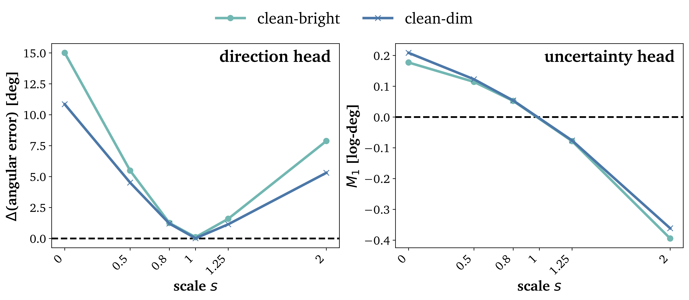<br />
图注：Dose response of the brightness-support latent $\zbs$ (latent $973$) on \(\texttt{causal\_test}\): this single coordinate is rescaled as $z\to s\,z$ before decoding. In both panels the two curves are clean events ($f_{\mathrm{aux}}\le0.05$) split by brightness alone: bright ($Q_{\mathrm{tot}}\ge160$ p.e.) and dim ($Q_{\mathrm{tot}}\le122$ p.e.). Left: the resulting change in the \(\emph{true}\) angular error of the direction head. Right: the resulting shift $M_1$ in the log-error \(\emph{predicted}\) by the uncertainty head (Section~\ref{sec:uncertainty-head}).<br />
对应解读：对应“建议重点查看的图表”第4项因果干预图、第5项不确定度头依赖特征图，以及“关键图表逐图导读”图4和图5。<br />
入选理由：该图明确展示对brightness-support latent进行剂量式因果干预后的响应：左图是方向头真实角误差变化，右图是不确定度头预测log-error的变化。它直接检验日报强调的关键区分——latent与误差相关不等于方向头实际使用该latent，同时展示不确定度头对亮度/质量相关特征的因果依赖。<br />
来源与置信度：\(arxiv_source\)；high；\(arxiv_source\) / main.tex:figure[5]</p>
<p><strong>Fig06</strong><br />
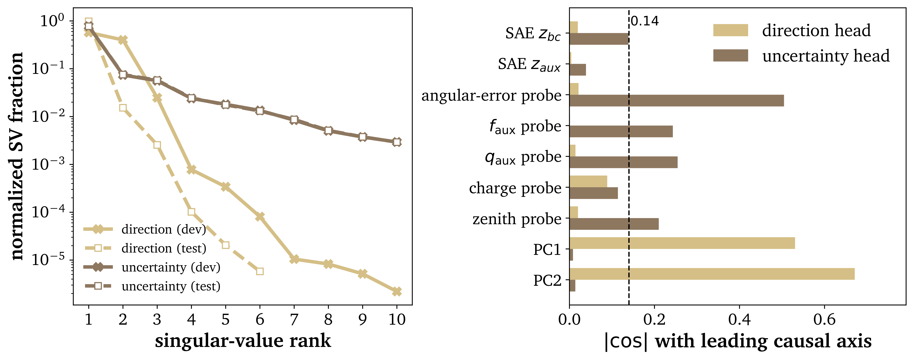<br />
图注：Sensitivity structure of the direction and uncertainty heads. Left: normalized singular-value spectra of the aggregate head Jacobians on the \(\texttt{concept\_dev}\) and \(\texttt{concept\_test}\) splits. Right: absolute cosine similarity between each head's leading sensitivity axis and selected SAE decoder directions, physics-probe directions, and the first two principal components. The dashed vertical line marks $|\cos|=0.14$.<br />
对应解读：对应“建议重点查看的图表”第4项因果干预图、第5项不确定度头依赖特征图，以及模型拟合段落中关于方向头和不确定度头是否利用SAE物理特征的讨论。<br />
入选理由：该图用head Jacobian奇异值谱和leading sensitivity axis与SAE decoder方向、physics-probe方向、主成分方向的余弦相似度，系统比较方向头与不确定度头的敏感性结构。它比单个latent案例更能支撑“方向头较少使用已验证atlas特征，而不确定度头更依赖相关物理方向”的总体结论。<br />
来源与置信度：\(arxiv_source\)；high；\(arxiv_source\) / main.tex:figure[6]</p>
<p><strong>Fig03</strong><br />
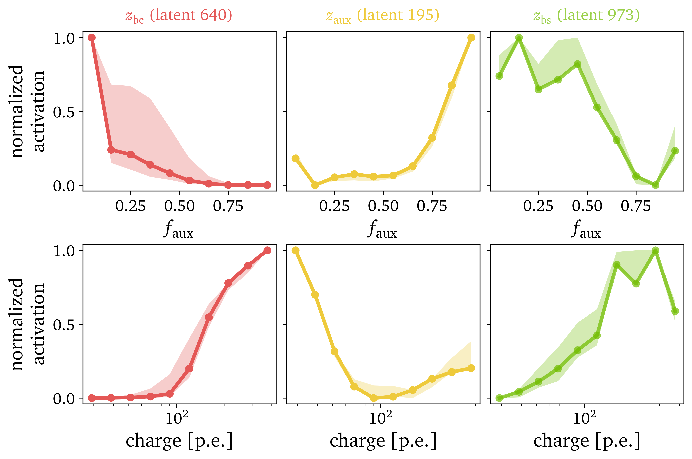<br />
图注：Response profiles of the main SAE latents along the auxiliary fraction and the total charge, on \(\texttt{concept\_dev}\) set events. Bands show the min-max spread across dictionary seeds.<br />
对应解读：对应“建议重点查看的图表”第2项稀疏潜变量图谱或atlas、第3项nuisance匹配后的验证图，以及“关键图表逐图导读”图2和图3。<br />
入选理由：该图展示主要SAE latents随辅助命中比例和总电荷变化的响应曲线，并给出跨字典seed的min-max spread。它最接近日报要求检查的潜变量物理解释、亮度/质量等混杂变量关系以及跨字典复现稳定性，是理解atlas是否可靠的重要图。<br />
来源与置信度：\(arxiv_source\)；high；\(arxiv_source\) / main.tex:figure[3]</p>
<p><strong>Fig04</strong><br />
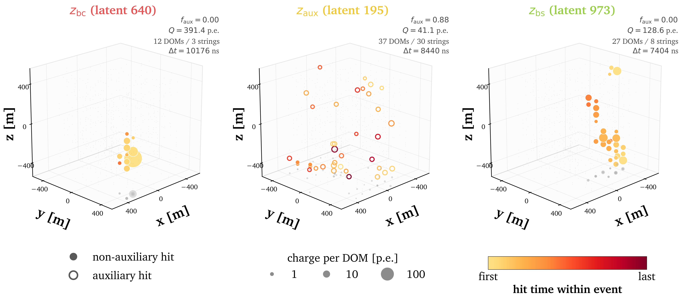<br />
图注：Highest-activating event of each latent on \(\texttt{causal\_test}.\) Markers are DOMs (charge summed per DOM), area grows with $\sqrt{\text{charge}}$, color encodes hit time within the event, and filled versus hollow marks non-auxiliary versus auxiliary hits. Panels share axes and charge scale.<br />
对应解读：对应“建议重点查看的图表”第2项稀疏潜变量图谱或atlas，以及“关键图表逐图导读”图2中关于latent物理解释的部分。<br />
入选理由：该图展示每个latent最高激活事件的探测器命中模式，包括DOM电荷、时间和辅助/非辅助命中，可用于直观看出各SAE latent对应的事件拓扑、亮度或质量特征。虽然定量验证不如Fig03、Fig05和Fig06强，但能帮助读者理解作者给latent命名和解释的依据。<br />
来源与置信度：\(arxiv_source\)；high；\(arxiv_source\) / main.tex:figure[4]</p>
<p><strong>Fig02</strong><br />
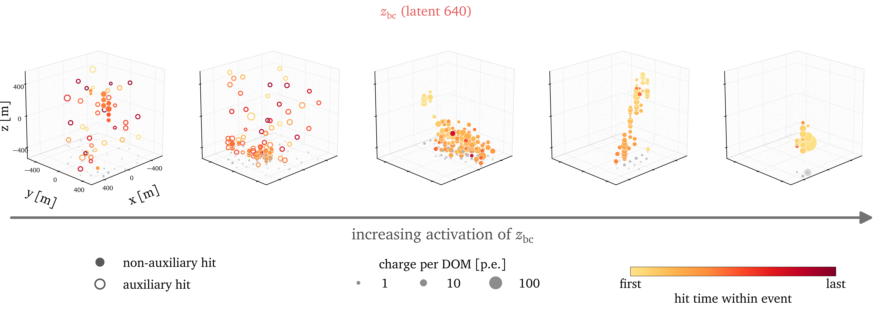<br />
图注：Illustration of five events ordered by increasing activation of $\zbc$ on \(\texttt{causal\_test}\) ($z = 0.35$, $0.45$, $0.58$, $1.03$, $2.67$). Panels share camera, detector frame and charge scale.<br />
对应解读：对应“建议重点查看的图表”第2项稀疏潜变量图谱或atlas中对单个latent激活序列的检查。<br />
入选理由：该图按某一latent激活强度递增展示五个事件，有助于观察latent激活是否对应可见的事件形态或亮度变化。它是定性辅助图，支撑力度弱于包含跨seed响应、因果干预和性能曲线的图，但仍可作为理解SAE特征含义的补充。<br />
来源与置信度：\(arxiv_source\)；high；\(arxiv_source\) / main.tex:figure[2]</p>
<h4 id="_67">强相关工作</h4>
<p>这篇工作与 IceCube 方向重建和机器学习重建文献属于同类方法脉络，但重点从“提高重建精度”转向“解释模型内部表示并改进不确定度排序”。相关检索关键词包括 “IceCube deep learning direction reconstruction”、“IceCube event reconstruction neural network”、“graph neural network IceCube reconstruction”、“uncertainty estimation neutrino telescope” 和 “angular resolution event selection IceCube”。同类工作可与 IceCube 传统最大似然重建、深度学习能量/方向重建、事件分类和实时过滤方法一起读。</p>
<p>在机器学习解释性方面，它与 mechanistic interpretability 和 sparse autoencoder 解释大模型的工作更接近，而不是传统的天体物理参数估计论文。应检索 “sparse autoencoder mechanistic interpretability”、“dictionary learning neural network representations”、“causal interventions latent features” 和 “monosemantic features sparse autoencoders”。需要注意，语言模型中的可解释特征不一定直接适用于物理探测器数据；本文的贡献正是把 held-out、nuisance control 和跨字典复现引入粒子物理语境。</p>
<p>可能的张力来自两个方向。第一，传统物理似然重建强调显式响应模型和可传播系统误差，可能质疑稀疏 latent 的物理命名是否足够稳健。第二，纯性能导向的深度学习工作可能认为只要角分辨率或选择性能好即可，而本文则强调因果使用和可解释选择函数。要判断哪种观点更适合真实物理分析，应比较最终点源灵敏度、背景控制、有效面积建模和数据-模拟一致性，而不仅是内部表示的可解释程度。</p>
<p><strong>同一事件 / 同类源线索</strong>：</p>
<ul>
<li><a href="https://arxiv.org/abs/2608.26090">https://arxiv.org/abs/2608.26090</a></li>
<li><a href="https://arxiv.org/pdf/2608.26090">https://arxiv.org/pdf/2608.26090</a></li>
<li><a href="https://icecube.wisc.edu/">https://icecube.wisc.edu/</a></li>
</ul>
<p><strong>相似工作</strong>：</p>
<ul>
<li><a href="https://arxiv.org/abs/1304.5356">https://arxiv.org/abs/1304.5356</a></li>
<li><a href="https://arxiv.org/abs/1710.01191">https://arxiv.org/abs/1710.01191</a></li>
<li><a href="https://arxiv.org/abs/2101.11589">https://arxiv.org/abs/2101.11589</a></li>
</ul>
<p><strong>基础理论 / 方法工作</strong>：</p>
<ul>
<li><a href="https://arxiv.org/abs/1311.5238">https://arxiv.org/abs/1311.5238</a></li>
<li><a href="https://arxiv.org/abs/1511.09408">https://arxiv.org/abs/1511.09408</a></li>
<li><a href="https://arxiv.org/abs/2211.00593">https://arxiv.org/abs/2211.00593</a></li>
<li><a href="https://arxiv.org/abs/2309.08600">https://arxiv.org/abs/2309.08600</a></li>
</ul>
<p><strong>相反观点 / 张力线索</strong>：</p>
<ul>
<li><a href="https://arxiv.org/abs/1607.08006">https://arxiv.org/abs/1607.08006</a></li>
<li><a href="https://arxiv.org/abs/2003.04682">https://arxiv.org/abs/2003.04682</a></li>
</ul>
</details>
<h3 id="7-particle-acceleration-in-alfvenic-turbulence-with-a-strong-guide-field">7. Particle acceleration in Alfvénic turbulence with a strong guide field</h3>
<ul>
<li>来源：arXiv / astro-ph.HE</li>
<li>链接：https://arxiv.org/abs/2608.25985v1</li>
<li>作者：Daniel Humphrey, Stanislav Boldyrev, Vadim Roytershteyn</li>
<li>评分：novelty 8/10，importance 7/10，relevance 8/10，final 8.65/10</li>
<li>推荐理由：提出强导引场 Alfvén 湍流中由 charge-starved current sheets 主导的非热粒子加速机制，直接关联宇宙线和高能天体等离子体加速理论，值得关注。</li>
</ul>
<p><strong>中文题目</strong>：强导向磁场下 Alfvén 湍流中的粒子加速</p>
<p><strong>做了什么</strong>：这篇论文研究磁能占优、带强平均磁场的 Alfvén 湍流怎样把粒子加速到非热能谱。传统图像常把湍流粒子加速归结为涡旋引起的二阶 Fermi 过程、磁镜加速或曲率漂移加速，但在强导向场条件下这些机制效率会明显下降。作者结合数值实验和唯象分析提出：真正有效的加速区是“电荷匮乏”的薄电流片，其中电流速度接近光速，局部不能用足够的电荷密度完全屏蔽电场，粒子因此获得强烈直接加速。论文还指出电流、密度、电荷涨落和被加速粒子的能量分布近似服从对数正态统计，这意味着非热尾不一定来自多次随机散射的幂律 Fermi 过程，而可能来自湍流中间歇性电流片的乘性统计。</p>
<p><strong>为什么重要</strong>：强磁化等离子体广泛存在于脉冲星磁层、磁星耀发、黑洞喷流、相对论性日冕和伽马暴喷流中。若强导向场会压制传统湍流 Fermi 加速，那么许多高能辐射模型对粒子能谱来源的假设就需要重检。本文重要之处在于把注意力从“大尺度湍流涡旋怎样散射粒子”转向“强间歇性电流片何时进入电荷匮乏状态”，给出了一个更贴近强磁化、低惯性等离子体极限的加速通道。</p>
<p><strong>理论 / 观测 / 仪器方法价值</strong>：对理论而言，它提出了强导向场 Alfvén 湍流中非热粒子产生的新判据：关注局部电流速度、密度耗竭和电荷涨落，而不是只看湍流速度或磁场弯曲率。对数值模拟而言，它提示需要同时诊断电流片统计、电荷分离和粒子能量分布，而不能只输出全局谱斜率。对观测建模而言，它为磁层和喷流中的快速高能辐射、强间歇耀发以及非幂律能谱成分提供了可检验的物理图像。</p>
<p><strong>为什么应该关注</strong>：如果你关心高能天体中“粒子到底在哪里、怎样被加速”，这篇文章值得看，因为它挑战了一个常用但可能过于宽泛的说法：湍流自然导致 Fermi 型非热幂律。作者强调，在强导向场下，决定加速效率的不是湍流是否存在，而是湍流能否产生接近光速载流的电荷匮乏电流片。这会影响我们如何解释磁星、脉冲星风、黑洞喷流和相对论性湍流模拟中的粒子谱。</p>
<details class="paper-detail">
<summary>展开详细解读：文章讲解、背景、理论、重点章节、图表与相关工作</summary>
<h4 id="_68">文章详细讲解</h4>
<p>科学问题：论文针对的是强平均磁场或强导向场中的 Alfvénic turbulence。这里湍流涨落相对于背景磁场较小，扰动主要沿磁力线传播，磁场拓扑不像无强导向场情形那样容易形成大角度弯折。传统的湍流粒子加速机制通常依赖粒子与移动磁镜、弯曲磁力线或压缩结构反复相互作用；但在强导向场、磁能占优且近似不可压的 Alfvén 湍流中，磁镜力和曲率漂移做功都会受到几何约束。问题因此变成：若这些常规通道不足，湍流中还能不能自然地产生非热粒子分布？如果能，主要加速位置和统计机制是什么？</p>
<p>作者怎么做：论文采用数值与唯象结合的方式，而不是只给出单个理想化电流片模型。作者考察强导向磁场下湍流形成的间歇性电流结构，统计电流密度、等离子体密度、电荷密度涨落以及粒子能量分布。核心诊断量是局部电流速度是否接近光速，也就是在给定电流密度下，局部可用载流子密度是否足够。如果需要的漂移速度超过或接近物理上限，系统进入电荷匮乏状态，理想磁流体或准中性近似在局部失效，平行电场或非理想电场可以持续加速粒子。</p>
<p>关键结果：作者发现，与把粒子能量增长解释为涡旋尺度上多次随机 Fermi 反射不同，强导向场 Alfvén 湍流中的高能粒子主要关联于 charge-starved current sheets。电流、密度、电荷涨落和粒子能量分布近似呈对数正态统计，说明控制加速的是湍流级联与间歇结构的乘性放大，而非简单加性随机游走。这个结论改变了人们读相对论性湍流模拟时的重点：不能只问湍流谱是否有惯性区、磁能是否耗散，还要问电流片的局部载流能力是否达到极限。</p>
<p>局限和下一步：从摘要可知，论文强调数值和唯象证据，但这类研究通常会受到盒子尺度、分辨率、粒子数、等离子体组成、边界条件和辐射反作用缺失等限制。电荷匮乏电流片是否在真实天体尺度上保持同样统计，仍需要更大动态范围、不同磁化参数、不同导向场强度和三维几何的检验。下一步尤其应把这种微观加速机制与可观测辐射谱、偏振、快速变源时间结构以及成对产生反馈联系起来。</p>
<h4 id="_69">关键结果是怎么做出来的</h4>
<p>本文最重要的证据链从样本选择意义上的“湍流结构集合”开始，而不是从单个粒子轨道开始。作者在强导向场 Alfvén 湍流数值实验中抽取大量空间网格点、电流片区域和粒子样本，比较局部电流、密度、电荷涨落与粒子能量的统计分布。样本的关键不是天体源数，而是湍流盒中电流片和粒子的相空间采样是否足以覆盖间歇尾部；这决定了能否可靠判断高能粒子是否来自少量极端结构。</p>
<p>统计判断的核心是把局部电流密度换算成所需载流速度。如果局部电流为 \(j\)，可用电荷数密度为 \(n\)，单个载流子电荷为 \(e\)，则典型漂移速度尺度为 \(v_j\sim j/(n e)\)。当 \(v_j\) 接近 \(c\) 时，电流不能再通过普通亚相对论漂移维持，局部电场不能被完全短路，这就是作者所说的 charge-starved current sheets。论文的关键结果应主要由电流速度分布、密度分布和高能粒子位置关联图支撑。</p>
<p>显著性或置信度在这类模拟论文中通常不是观测天文学的 \(5\sigma\) 源探测问题，而是统计分布、模型比较和稳健性检验问题。作者报告多个物理量近似服从对数正态分布，读者应检查他们是否比较了 \(\ln j\)、\(\ln n\)、\(\ln |\rho_e|\) 或 \(\ln \gamma\) 的直方图与高斯拟合，是否给出尾部分布偏离、拟合残差或不同时间快照之间的一致性。若高能尾只由极少数粒子决定，粒子噪声和有限盒子效应会非常关键。</p>
<p>模型比较方面，论文的中心对照是电荷匮乏电流片加速与传统 Fermi 型湍流加速。读者应查看粒子能量增长是否与穿越高 \(j/(n e c)\) 区域同步，还是与大尺度涡旋速度、磁场曲率半径或磁镜比同步。如果作者展示了按局部电流速度分组的粒子能量增益，或展示高能粒子在电流片附近聚集，那会比单纯能谱图更有说服力。</p>
<p>主要系统误差包括网格或粒子分辨率是否足以解析薄电流片，数值耗散是否人为增强平行电场，初始粒子分布是否影响最终尾部，二维与三维几何是否改变电流片连通性，以及周期边界是否导致粒子反复采样同一结构。稳健性检验应包括改变导向场强度、磁化参数、驱动方式、盒子大小和采样时间。如果对数正态统计在这些变化下仍保持，本文的物理主张会更强。</p>
<details class="paper-subdetail">
<summary>展开背景、理论、公式、模型、章节和图表导读</summary>
<h4 id="_70">背景知识</h4>
<p>Alfvén 湍流是磁化等离子体中最基本的湍流形态之一。在线性层面，Alfvén 波是沿平均磁场传播的横向扰动；在非线性层面，反向传播的波包相互剪切，形成各向异性级联。当天体环境磁能密度远大于粒子热能密度或惯性能量密度时，湍流不仅传输能量，也可能成为非热粒子的加速器。</p>
<p>历史上，湍流粒子加速常被放在 Fermi 加速框架下理解。二阶 Fermi 过程强调粒子与随机运动的磁云或湍流涡旋碰撞，平均能量增益与散射中心速度平方有关；磁镜加速依赖粒子磁矩守恒和磁场强度变化；曲率加速依赖粒子沿弯曲磁力线运动时与收缩磁场做功。这些机制在许多弱导向场、压缩湍流或重联湍流场景中很有用。</p>
<p>但强导向场会改变问题。若背景磁场 \(B_0\) 远大于涨落 \(\delta B\)，磁力线弯曲角小，磁镜比有限，垂直压缩也弱。粒子沿强背景场快速穿行时，未必能有效从大尺度涡旋获得净能量。于是一个长期问题是：在这种看似不利于 Fermi 加速的环境中，高能天体仍观测到非热辐射，微观加速究竟发生在哪里？</p>
<p>现在值得重新看这个问题，是因为相对论性等离子体模拟、粒子网格方法和高能时域观测都在进步。磁星快速耀发、脉冲星磁层辐射、活动星系核喷流中的分钟级耀发，都暗示能量释放可能高度间歇并发生在小体积区域。电流片、局部电荷分离和平行电场不再是可忽略的微观修正，而可能决定宏观辐射效率。</p>
<p>该领域常见误区之一是把“存在湍流”直接等同于“存在幂律 Fermi 加速”。另一个误区是只用磁能耗散率判断粒子加速效率，而忽略局部载流能力。还有一个误区是把所有电流片都视为普通重联层；本文强调的是强导向 Alfvén 湍流中的 charge-starved current sheets，其关键条件是电流需求超过局部电荷供应，而不只是磁场反向和拓扑重联。</p>
<h4 id="_71">基础理论 / 方法脉络</h4>
<p>基本物理图像从磁化等离子体的电磁能量储存开始。强导向场意味着总磁场可写成 \({\bf B}=B_0\hat{\bf z}+\delta {\bf B}_\perp\)，且通常 \(\delta B_\perp/B_0<1\)。Alfvén 波包沿 \(B_0\) 传播，非线性相互作用主要发生在反向传播波包之间。能量从驱动尺度级联到小尺度，在小尺度形成间歇性强梯度结构，也就是电流片。</p>
<p>传统磁流体近似假定等离子体近似准中性，且有足够电荷移动来维持所需电流。在这种情况下，理想条件 \({\bf E}+{f v}\times{f B}/c\approx0\) 使电场在局部流体系中被短路，粒子很难通过平行电场直接持续增能。但如果局部密度下降或电流密度过大，所需漂移速度 \(v_j\) 接近光速，电流无法继续按理想方式维持，非理想电场会出现。</p>
<p>本文的关键量包括电流密度 \({\bf j}\)、数密度 \(n\)、电荷密度涨落 \(\rho_e\)、局部电流速度 \(v_j\sim |{f j}|/(n e)\)、粒子洛伦兹因子 \(\gamma\) 以及可能的电场平行分量 \(E_\parallel={\bf E}\cdot{f B}/|{f B}|\)。其中 \(v_j/c\) 是连接宏观湍流结构与微观粒子加速的诊断量；当它接近 \(1\) 时，系统进入电荷匮乏极限。</p>
<p>观测或模拟分析逻辑不是简单拟合单个能谱斜率，而是比较空间结构与粒子能量增长之间的条件相关性。若高能粒子主要来自电荷匮乏电流片，则高 \(\gamma\) 粒子应更常出现在高 \(|{f j}|/(n e c)\)、强 \(E_\parallel\) 或强电荷涨落区域附近。若是 Fermi 型过程占主导，则能量增长应更强地关联于湍流散射次数、压缩率、磁场曲率收缩或涡旋速度。</p>
<p>常见退化和系统误差包括：电流片同时也是强磁场梯度、强数值耗散和强粒子噪声区域，因此空间相关不必然等于因果加速；有限分辨率可能把真实薄层展宽，改变 \(|{f j}|\) 峰值；有限粒子数可能夸大 \(n\) 的局部涨落；若模拟没有完整辐射冷却或成对产生，最高能粒子的截止和分布尾部可能不能直接映射到天体观测。</p>
<h4 id="_72">公式与推导</h4>
<p>第一步是写出强导向场分解。总磁场可表示为</p>
<div class="math-display">\[{\bf B}=B_0\hat{\bf z}+\delta{\bf B}_\perp,\qquad \epsilon\equiv {\delta B_\perp\over B_0}<1 .\]</div>
<p>这里 \(B_0\) 是平均导向磁场，\(\delta{\bf B}_\perp\) 是横向涨落，\(\epsilon\) 衡量强导向场极限。这个假设说明磁场弯曲角通常较小，传统曲率和磁镜加速不会自动高效。</p>
<p>第二步是 Alfvén 波的基本速度尺度。在非相对论形式下，</p>
<div class="math-display">\[v_A={B_0\over \sqrt{4\pi w}},\]</div>
<p>其中 \(w\) 可理解为等离子体惯性质量密度；在相对论磁化等离子体中常用磁化参数写成</p>
<div class="math-display">\[\sigma={B_0^2\over 4\pi w c^2},\qquad v_A=c\sqrt{\sigma\over 1+\sigma} .\]</div>
<p>当 \(\sigma\gg1\) 时，\(v_A\) 接近 \(c\)，湍流电磁能量很大，但这并不保证 Fermi 加速有效。</p>
<p>第三步是由 Maxwell 方程把磁场梯度与电流联系起来。在准静态或低频近似下，位移电流可先忽略，得到</p>
<div class="math-display">\[{\bf j}\simeq {c\over 4\pi}\nabla\times{\bf B} .\]</div>
<p>薄电流片中磁场在厚度 \(\ell\) 上变化 \(Δ B\)，于是量级估计为</p>
<div class="math-display">\[j\sim {c\over 4\pi}{\Delta B\over \ell} .\]</div>
<p>这说明级联到越小尺度，局部 \(j\) 越容易变大。</p>
<p>第四步是电流由载流子漂移提供。若正负电荷有效数密度量级为 \(n\)，单粒子电荷为 \(e\)，则最大可供电流受限于粒子速度不超过 \(c\)：</p>
<div class="math-display">\[j=n e v_j,\qquad {v_j\over c}={j\over n e c} .\]</div>
<p>charge-starved 条件可写成</p>
<div class="math-display">\[{j\over n e c}\rightarrow 1 \quad \hbox{或更强地} \quad j\gtrsim n e c .\]</div>
<p>当这个条件满足时，所需漂移速度达到光速上限，局部不能再按普通 MHD 方式供应电流。</p>
<p>第五步是非理想电场对粒子做功。单个粒子的能量满足</p>
<div class="math-display">\[{d(\gamma m c^2)\over dt}=q\,{f E}\cdot{f v} .\]</div>
<p>若粒子沿磁场方向被平行电场加速，且 \(v_\parallel\sim c\)，则</p>
<div class="math-display">\[{d\gamma\over dt}\simeq {q E_\parallel\over m c} .\]</div>
<p>这里 \(m\) 是粒子质量，\(q\) 是电荷，\(E_\parallel\) 是沿磁场的电场分量。这是电荷匮乏电流片能够直接产生高能粒子的核心通道。</p>
<p>第六步是与传统二阶 Fermi 标度对比。随机散射中心速度为 \(u\) 时，单次平均相对能量增益量级为</p>
<div class="math-display">\[\left\langle {\Delta E\over E}\right\rangle_{\rm FII}\sim {u^2\over c^2} .\]</div>
<p>在强导向 Alfvén 湍流中，即使 \(u\) 不小，几何各向异性和弱压缩也可能降低有效散射与做功；而电流片加速的能量增益更接近</p>
<div class="math-display">\[\Delta \gamma \sim {q E_\parallel \ell_\parallel\over m c^2} ,\]</div>
<p>其中 \(\ell_\parallel\) 是粒子在有效平行电场中运动的长度。</p>
<p>第七步是对数正态统计的自然来源。如果一个量由多级联乘性因子控制，例如</p>
<div class="math-display">\[X=X_0\prod_{i=1}^{N} a_i,\]</div>
<p>则取对数后</p>
<div class="math-display">\[\ln X=\ln X_0+\sum_{i=1}^{N}\ln a_i .\]</div>
<p>在许多独立或弱相关因子作用下，中心极限定理会使 \(\ln X\) 近似高斯，从而</p>
<div class="math-display">\[P(X)={1\over X s\sqrt{2\pi}}\exp\left[-{(\ln X-\mu)^2\over 2s^2}\right] .\]</div>
<p>这里 \(\mu\) 和 \(s\) 是 \(\ln X\) 的均值和标准差。本文把这种形式用于理解 \(j\)、\(n\)、\(\rho_e\) 和粒子能量统计。</p>
<p>第八步是模拟诊断的条件概率表达。若电荷匮乏电流片是主因，则应有</p>
<div class="math-display">\[P(\gamma>\gamma_0\mid j/(n e c)>\eta) > P(\gamma>\gamma_0)\]</div>
<p>其中 \(\gamma_0\) 是高能阈值，\(\eta\) 是接近 \(1\) 的电流速度阈值。这个不等式把物理主张转化为可检验的统计诊断：高能粒子是否显著偏向 charge-starved 区域。</p>
<h4 id="_73">模型拟合 / 应用方法</h4>
<p>本文或同类工作的拟合对象首先是分布函数，而不仅是平均量。需要拟合 \(j\)、\(n\)、\(|\rho_e|\)、\(j/(n e c)\) 和 \(\gamma\) 的概率密度，检验它们是否近似对数正态。实际可在 \(\ln X\) 空间做高斯拟合，估计均值 \(\mu\)、方差 \(s^2\)、偏度和峰度，并检查尾部是否系统性偏离。若高能尾比对数正态更重，可能存在额外的重联或 Fermi 贡献。</p>
<p>参数估计可使用最大似然或贝叶斯后验。对于对数正态模型，单个样本 \(X_i\) 的似然由 \(P(X_i\mid \mu,s)\) 给出；但模拟数据存在强空间相关，不能简单把每个网格点当作独立样本。更可靠的做法是按电流片、时间快照或相关长度进行重采样，用 block bootstrap 或不同时间段比较来估计不确定度。</p>
<p>模型比较应至少包括三类解释：对数正态电流片模型、幂律 Fermi 加速模型，以及带指数截止的混合模型。只看粒子能谱可能无法区分，因为有限动态范围内对数正态尾部和弯折幂律都可能相似。更强的判据是条件统计：给定 \(j/(n e c)\) 阈值后高能粒子概率是否显著增加，粒子能量增益是否与进入 charge-starved 区域的时间同步。</p>
<p>主要退化关系来自 \(j/(n e c)\) 的分子和分母。高值既可能由真实强电流造成，也可能由局部密度低估造成；在粒子模拟中，后者容易受有限粒子数影响。另一个退化是电流片位置通常也是强数值耗散位置，因此测得的 \(E_\parallel\) 可能部分依赖算法和网格尺度。需要通过分辨率扫描、粒子数扫描和能量守恒检查确认结果不是数值伪影。</p>
<p>实际应用时，模型可以被嵌入辐射计算。给定加速区的 \(\gamma\) 分布、磁场强度和体积分数，可预测同步辐射或曲率辐射谱，并比较耀发持续时间和偏振变化。如果电荷匮乏电流片主导，辐射应高度间歇，可能表现为短时标尖峰和强偏振角变化；若大尺度 Fermi 过程主导，则辐射区域和时间结构可能更弥散。</p>
<h4 id="_74">重点章节 / 结果段落怎么读</h4>
<p>数据和数值设置部分应首先看导向场强度、磁化参数、盒子维度、边界条件、驱动方式和分辨率。本文结论高度依赖“强导向场”和“磁能占优”这两个条件，读者应确认 \(B_0/\delta B\)、\(\sigma\)、粒子数和网格尺度是否足以进入目标物理区间。</p>
<p>湍流结构诊断部分应重点读电流片识别方法。需要看作者如何定义电流片，是否使用 \(|{f j}|\) 阈值、局部极大值、连通区域或厚度估计；还要看他们是否计算 \(j/(n e c)\) 而不仅是 \(|{f j}|\)。如果只显示强电流而不显示载流能力，charge-starvation 的论证会不完整。</p>
<p>粒子加速结果部分应关注能谱和轨道诊断。读者应检查高能粒子是否在空间上集中于电流片，能量增长是否在穿越这些区域时发生，是否展示了典型粒子轨道、\(E_\parallel\) 做功累计或能量增益时间序列。这些图比单一最终能谱更能区分直接电场加速和随机 Fermi 加速。</p>
<p>统计分布部分是本文的概念核心。应看电流、密度、电荷涨落和粒子能量分布是否都被统一解释为对数正态，拟合残差如何，尾部是否有系统偏离。若论文给出不同时间或不同参数下的分布比较，应优先阅读，因为这决定对数正态是否只是某个快照的巧合。</p>
<p>讨论和局限部分应看作者如何处理传统机制。强论文不会只说 Fermi 加速“不行”，而应说明在何种强导向场条件下磁镜和曲率项变小，在哪些参数区间传统机制可能重新变重要。附录或稳健性检验若包含分辨率、阈值、时间平均和能量守恒检查，也应仔细读。</p>
<h4 id="_75">建议重点查看的图表</h4>
<ol>
<li>
<p>湍流盒中电流密度或电流片空间分布图：看强 \(|{f j}|\) 区域是否呈薄片状、是否沿导向场拉长，以及是否与密度耗竭区重合。</p>
</li>
<li>
<p>\(j/(n e c)\) 或电流速度分布图：这是 charge-starvation 的关键诊断。重点看分布尾部是否接近 \(1\)，以及高值区域的体积分数和时间稳定性。</p>
</li>
<li>
<p>粒子能谱或 \(\gamma\) 分布图：看是否为对数正态、弯折幂律或混合形态；不要只看最高能粒子，还要看中高能段拟合残差。</p>
</li>
<li>
<p>高能粒子位置与电流片叠加图：看高 \(\gamma\) 粒子是否显著集中于高 \(j/(n e c)\) 区域，而不是均匀分布或只跟磁场强度相关。</p>
</li>
<li>
<p>电流、密度、电荷涨落的直方图：看 \(\ln X\) 空间是否近似高斯，尾部是否由有限采样控制，是否给出多时间快照。</p>
</li>
<li>
<p>典型粒子轨道或能量增长时间序列：看 \(\gamma(t)\) 的跃升是否与进入电流片、强 \(E_\parallel\) 或高 \(j/(n e c)\) 同步。</p>
</li>
<li>
<p>参数或分辨率扫描表：看改变导向场强度、磁化参数、网格分辨率和粒子数后，核心结论是否保持。</p>
</li>
</ol>
<h4 id="_76">关键图表逐图导读</h4>
<p>图 1：通常应是模拟几何或湍流结构示意，坐标轴可能为空间坐标，颜色表示 \(|{f j}|\)、磁能密度或密度 \(n\)。读图时要看强电流是否只占小体积分数、是否形成片状间歇结构，以及这些结构相对于导向场方向的取向。陷阱是颜色动态范围很大时，视觉上显眼的结构不一定贡献主要能量耗散，需要结合体积分数或积分耗散率。</p>
<p>图 2：应重点关注电流速度 \(j/(n e c)\) 的概率分布或空间图。横轴若为 \(j/(n e c)\)，纵轴可能是概率密度或累计概率；接近 \(1\) 的尾部是判定 charge-starved 的关键。读图陷阱是有限粒子噪声会在低密度区域放大该比值，因此最好看作者是否屏蔽了极低粒子数网格或做了平滑尺度测试。</p>
<p>图 3：粒子能量分布图一般以 \(\gamma\) 或动能为横轴，以 \(dN/d\gamma\)、\(\gamma dN/d\gamma\) 或概率密度为纵轴。若作者叠加对数正态拟合，读者应看拟合是在全范围还是只在中间区间完成，高能尾是否系统偏高。陷阱是有限动态范围内弯折幂律和对数正态都可能看起来合理，必须结合空间相关证据。</p>
<p>图 4：高能粒子与电流片的关联图可能把粒子点叠加在 \(|{f j}|\)、\(E_\parallel\) 或 \(j/(n e c)\) 背景上。横纵坐标为空间位置，颜色或点大小表示 \(\gamma\)。主要结论应是高能粒子偏向电荷匮乏电流片。读图陷阱是二维投影可能把不相关的粒子和电流片重叠，需要看三维距离或条件概率分析。</p>
<p>图 5：若有典型粒子轨道图，横轴通常是时间，纵轴为 \(\gamma\)、累计做功 \(q\int{f E}\cdot d{f l}\)、局部 \(j/(n e c)\) 或 \(E_\parallel\)。关键读法是寻找能量跃升与局部电流匮乏指标的同步性。若 \(\gamma(t)\) 平滑增长而不对应电流片穿越，则 Fermi 型或大尺度电场解释仍可能竞争。</p>
<p>图 6：稳健性图或参数扫描表应展示不同 \(B_0\)、\(\sigma\)、分辨率或驱动条件下的分布参数。读者应看对数正态宽度 \(s\)、高能粒子比例和 \(j/(n e c)>\eta\) 的体积分数是否随参数有物理一致的变化。陷阱是只展示一个“漂亮”快照而缺少误差条或时间方差。</p>
</details>
<h4 id="_77">论文原图 / 可嵌入图片</h4>
<p><strong>Fig02</strong><br />
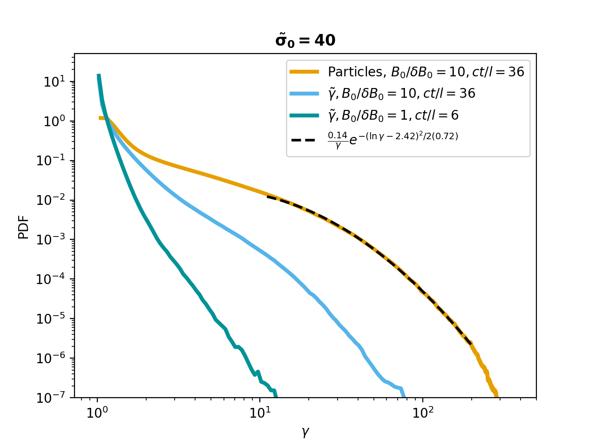<br />
图注：$\gamma$ distribution for PIC particles in the case of $B_0 /\delta B_0 = 10$, as well as the bulk Lorentz factor associated with the current velocity $\tilde{\gamma} = 1/\sqrt{1 - \Delta v^2/c^2}$, with $\Delta v = J/en$, for both $B_0/\delta B_0 = 10$ and $B_0 /\delta B_0 = 1$. The tail of the particle distribution is fit by a log-normal. Severely charge-starved current sheets with $\tilde{\gamma} \gg 1$ are much more probable in the strong guide field case.<br />
对应解读：对应“建议重点查看的图表”第2项电流速度分布、第3项粒子能谱，以及“关键图表逐图导读”图2和图3关于 charge-starvation 与对数正态能谱拟合的核心诊断。<br />
入选理由：这张图同时给出PIC粒子\(\gamma\)分布、\(\Delta v=J/en\)对应的\(\tilde{\gamma}\)分布，并比较强导向场\(B_0/\delta B_0=10\)与弱导向场\(=1\)。它直接检验电流速度是否接近光速、强导向场是否更容易产生严重电荷匮乏电流片，以及粒子高能尾是否可由对数正态描述，是支撑论文主结论最关键的图。<br />
来源与置信度：\(arxiv_source\)；high；\(arxiv_source\) / MAIN.tex:figure[2]</p>
<p><strong>Fig01</strong><br />
<br />
图注：On the left, the electron density $n_e$ and the velocity associated with the current $\Delta v = J/en$ are given in a portion of the simulation domain for the case of $B_0 /\delta B_0 = 10$. On the right, the same quantities are given for the case of $B_0 /\delta B_0 = 1$. Both regions are about $200 d_e$ in length, and were chosen to illustrate the multi-scale nature of turbulence. Though the electron density in the strong mean field case reaches higher values, we limit both colorbars to the same range to aid visual comparison. Note the sharper density gradients and richer small-scale structure of the turbulence in the case of a strong guide field, as well as the relative intensity and frequency of charge-starved regions (where $\Delta v/c\approx 1$).<br />
对应解读：对应“建议重点查看的图表”第1项湍流盒中密度与电流片空间分布、第2项\(j/(nec)\)空间诊断，以及“关键图表逐图导读”图1关于片状间歇结构和导向场比较的说明。<br />
入选理由：图中并列展示强、弱导向场下电子密度和\(\Delta v=J/en\)的空间结构，能直观看到强导向场中更丰富的小尺度结构、尖锐密度梯度以及\(\Delta v/c\approx1\)的charge-starved区域。它为Fig02的统计分布提供空间形态证据，说明高电流速度不是抽象统计尾部，而是局部湍流电流片结构。<br />
来源与置信度：\(arxiv_source\)；high；\(arxiv_source\) / MAIN.tex:figure[1]</p>
<p><strong>Fig03</strong><br />
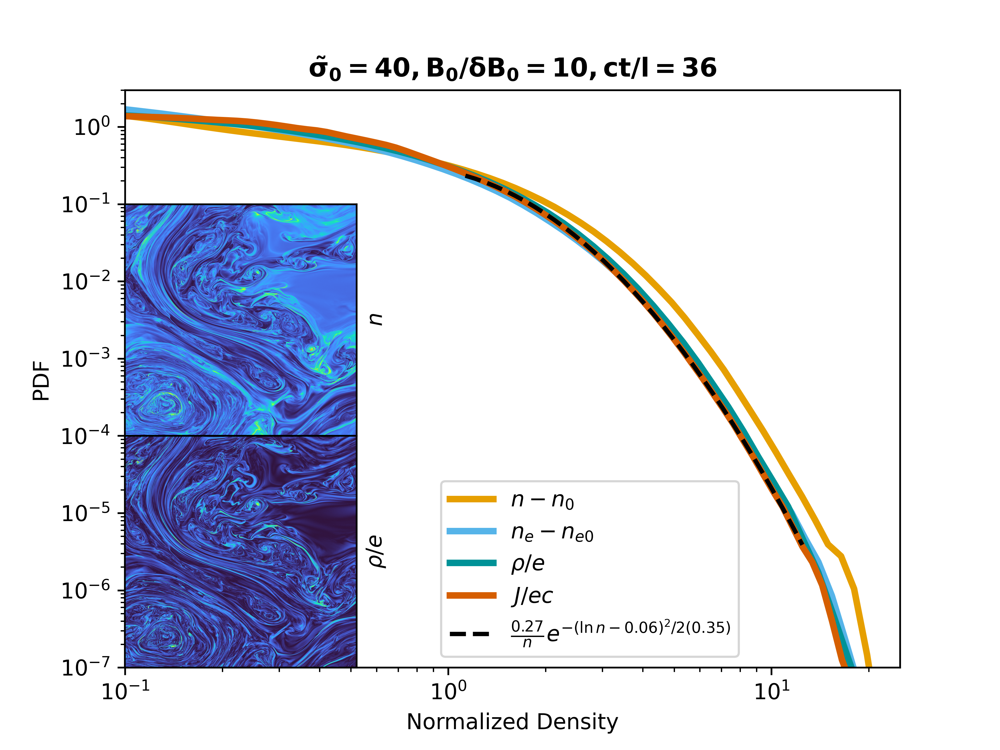<br />
图注：Distribution of total density $n = n_i + n_e$, $J/ec$, charge, and electron density $n_e$ for $B_0/\delta B_0 = 10$. The current is fit by a log-normal. The total density and electron density are subtracted by their mean value. Each quantity has units of density and is normalized by the mean electron density. The visual structure of the density and charge are illustrated in the inset over a small portion of the simulation region. The log-normal tails are pronounced, and current is strongly coupled to density and charge.<br />
对应解读：对应“建议重点查看的图表”第5项电流、密度、电荷涨落直方图，以及“模型拟合”段落中对\(j\)、\(n\)、(|\<br />
ho_e|)概率密度和对数正态拟合的讨论。<br />
入选理由：该图给出强导向场\(B_0/\delta B_0=10\)下总密度、电流\(J/ec\)、电荷和电子密度的分布，并对电流做对数正态拟合。它直接支撑论文关于电流、密度、电荷涨落呈近似对数正态统计且彼此强耦合的说法，是理解‘乘性间歇结构导致非热分布’的关键统计证据。<br />
来源与置信度：\(arxiv_source\)；high；\(arxiv_source\) / MAIN.tex:figure[3]</p>
<p><strong>Fig05</strong><br />
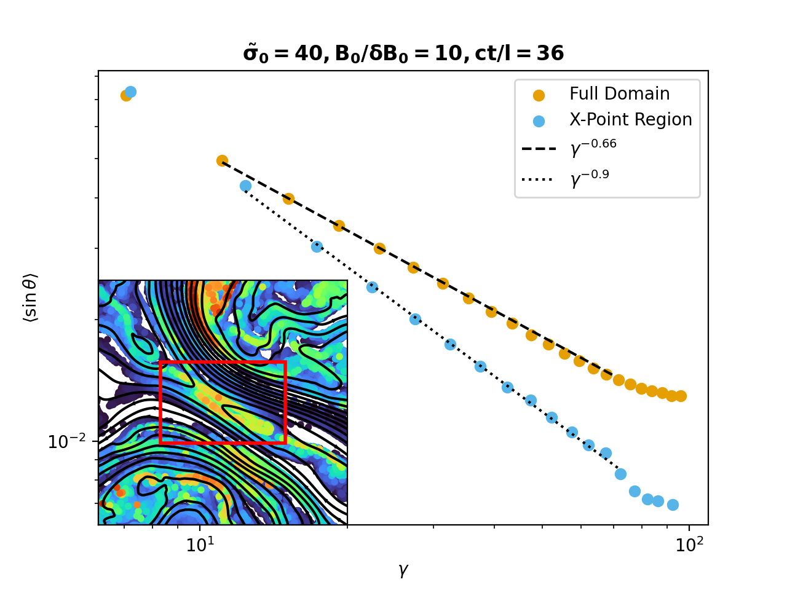<br />
图注：Average pitch angles as a function of energy shown for PIC particles over the whole simulation domain, as well as PIC particles taken \(\textit{only}\) from the region of active acceleration highlighted in the inset with a red box. The inset also shows magnetic field lines and particles colored by energy, ranging from blue ($\gamma \approx 5$) to red ($\gamma \approx 100$). $\gamma^{-0.66}$ and $\gamma^{-0.9}$ power laws are included for reference. Measurements are made via fully relativistic Lorentz transformations to the $E\times B$ frame of the plasma. Particles in the process of acceleration have pitch-angles declining very close to $\gamma^{-1}$.<br />
对应解读：对应“建议重点查看的图表”第4项高能粒子位置与加速区叠加图，以及第6项关于典型加速区中粒子能量和局部结构关联的替代诊断；也关联逐图导读中图4、图5对高能粒子是否集中在电流片/活跃加速区的关注。<br />
入选理由：虽然主图是平均pitch angle随能量变化，但插图显示磁力线和按能量着色的粒子，并用红框标出活跃加速区域，可用于判断高能粒子是否局域于特定加速结构。主图中加速区粒子的pitch angle近似按\(\gamma^{-1}\)下降，也为强导向场中非传统Fermi机制的粒子动力学提供补充证据。<br />
来源与置信度：\(arxiv_source\)；high；\(arxiv_source\) / MAIN.tex:figure[5]</p>
<p><strong>Fig04</strong><br />
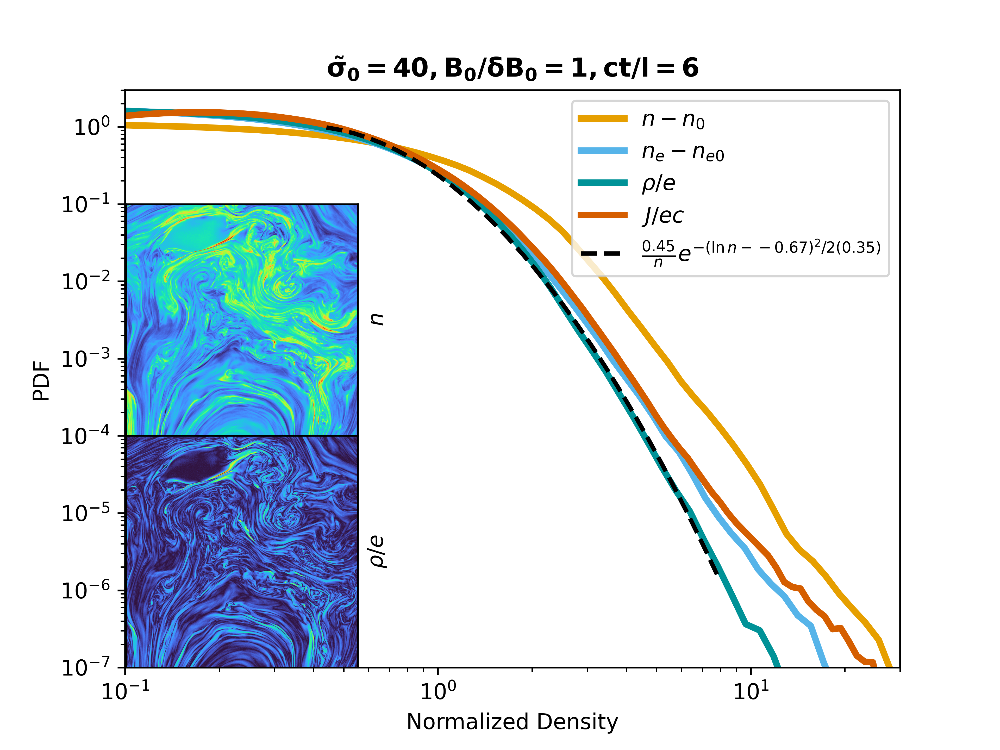<br />
图注：Distribution of total density $n = n_i + n_e$, $J/ec$, charge, and electron density $n_e$ for $B_0/\delta B_0 = 1$. The charge is fit by a log-normal. The total density and electron density are subtracted by their mean value. Each quantity has units of density and is normalized by the mean electron density. The visual structure of the density and charge are illustrated in the inset over a small portion of the simulation region. The current is less strongly coupled to the density than in the case of $B_0/ \delta B_0 = 10$, and large fluctuations deviate somewhat from a log-normal form.<br />
对应解读：对应“建议重点查看的图表”第5项分布直方图和第7项参数/导向场比较，也对应“关键图表逐图导读”图6中关于改变\(B_0/\delta B_0\)后统计规律是否保持的稳健性问题。<br />
入选理由：该图展示弱导向场\(B_0/\delta B_0=1\)下密度、电流、电荷和电子密度分布，并指出电流与密度耦合较弱且大涨落偏离对数正态。它不如强导向场结果直接支撑主结论，但作为对照图有助于说明强导向场情形的charge-starvation统计并非普通湍流中普遍相同的现象。<br />
来源与置信度：\(arxiv_source\)；high；\(arxiv_source\) / MAIN.tex:figure[4]</p>
<h4 id="_78">强相关工作</h4>
<p>这篇工作与相对论性磁化湍流中的粒子加速研究直接相连。同类论文通常讨论强磁化 pair plasma 或 electron-ion plasma 中，湍流是否能产生幂律非热尾，以及能谱斜率如何依赖磁化参数、导向场和驱动尺度。建议检索关键词包括 “relativistic turbulence particle acceleration guide field”, “Alfvenic turbulence charge starvation”, “current sheets particle acceleration magnetically dominated plasma”, “lognormal particle energy distribution turbulence”。</p>
<p>它也与磁重联粒子加速文献有交叉但不完全相同。重联研究常强调反向磁场、X 点、plasmoid 合并和 Fermi 型岛内加速；本文强调强导向 Alfvén 湍流中的电荷匮乏电流片，即局部载流能力达到 \(j\sim n e c\) 的极限。相反或有张力的观点是：非热粒子主要由湍流涡旋的随机散射、磁场曲率漂移或重联 plasmoid Fermi 过程产生。读者可用 “curvature drift acceleration turbulence”, “stochastic Fermi acceleration relativistic turbulence”, “plasmoid reconnection particle acceleration” 作为对照检索词。</p>
<p>若要把本文放入更宽背景，还应看 Goldreich-Sridhar 型强 MHD 湍流、Boldyrev 动态对齐模型、相对论性 PIC 湍流模拟以及脉冲星磁层电荷匮乏 gap 理论。本文不是针对某一个命名天体源或瞬变事件，而是同类源机制研究；source context 因此应理解为同类强磁化高能等离子体背景，而非同一事件跟踪。</p>
<p><strong>同一事件 / 同类源线索</strong>：</p>
<ul>
<li><a href="https://arxiv.org/abs/2608.25985">https://arxiv.org/abs/2608.25985</a></li>
<li><a href="https://arxiv.org/pdf/2608.25985">https://arxiv.org/pdf/2608.25985</a></li>
</ul>
<p><strong>相似工作</strong>：</p>
<ul>
<li><a href="https://arxiv.org/abs/1809.01197">https://arxiv.org/abs/1809.01197</a></li>
<li><a href="https://arxiv.org/abs/1904.11476">https://arxiv.org/abs/1904.11476</a></li>
<li><a href="https://arxiv.org/abs/1702.01269">https://arxiv.org/abs/1702.01269</a></li>
</ul>
<p><strong>基础理论 / 方法工作</strong>：</p>
<ul>
<li><a href="https://ui.adsabs.harvard.edu/abs/1995ApJ...438..763G/abstract">https://ui.adsabs.harvard.edu/abs/1995ApJ...438..763G/abstract</a></li>
<li><a href="https://ui.adsabs.harvard.edu/abs/2006PhRvL.96k5002B/abstract">https://ui.adsabs.harvard.edu/abs/2006PhRvL.96k5002B/abstract</a></li>
<li><a href="https://ui.adsabs.harvard.edu/abs/1949PhRv...75.1169F/abstract">https://ui.adsabs.harvard.edu/abs/1949PhRv...75.1169F/abstract</a></li>
</ul>
<p><strong>相反观点 / 张力线索</strong>：</p>
<ul>
<li><a href="https://arxiv.org/abs/1409.0899">https://arxiv.org/abs/1409.0899</a></li>
<li><a href="https://arxiv.org/abs/1609.04814">https://arxiv.org/abs/1609.04814</a></li>
</ul>
</details>
<h2 id="he">相关但非 HE 的重要论文</h2>
<h3 id="1-anatomy-of-an-extensive-air-shower-building-an-optimal-radio-emission-calculation">1. Anatomy of an extensive air shower: building an optimal radio emission calculation</h3>
<ul>
<li>来源：arXiv / astro-ph.IM</li>
<li>链接：https://arxiv.org/abs/2608.26077v1</li>
<li>作者：Juan Ammerman-Yebra, Harm Schoorlemmer</li>
<li>评分：novelty 8/10，importance 9/10，relevance 10/10，final 9.05/10</li>
<li>推荐理由：直接面向超高能宇宙线广延大气簇射射电探测，提出CREPES快速辐射计算算法，声称提速超过三数量级且保持微观计算精度；对大型宇宙线阵列模拟、优化和暴露量研究很有用。</li>
</ul>
<p><strong>中文题目</strong>：广延大气簇射的解剖：构建一种最优的射电辐射计算方法</p>
<p><strong>做了什么</strong>：这篇仪器与计算方法论文针对超高能宇宙线广延大气簇射的射电模拟瓶颈：逐粒子微观计算精确但极耗时，难以做大样本、阵列优化和系统误差扫描。作者分析簇射在纵向和横向上的电子、正电子分布结构，把可重复使用的粒子分布预先计算成库，再用新算法 CREPES 快速求射电发射。核心结论是：在保持接近微观计算精度的同时，计算速度提升超过三个数量级。</p>
<p><strong>为什么重要</strong>：射电探测是未来获得超高能宇宙线大曝光量的重要路线，但阵列设计、触发效率、能量重建和组成重建都依赖大量端到端模拟。如果每个候选阵列布局、每个大气状态、每个入射方向都要跑完整微观辐射计算，计算成本会直接限制科学问题的可探索范围。CREPES 的意义在于把射电信号计算从“少量精细事件”推进到“可系统扫描的统计工具”。</p>
<p><strong>理论 / 观测 / 仪器方法价值</strong>：对理论和方法的价值在于，它把簇射粒子分布的相干辐射问题拆成可缓存的形态学部分和可快速重算的观测几何部分，为高能宇宙线射电模拟提供了新的降阶思路。对观测和仪器的价值在于，阵列间距、频带、天线响应、触发阈值和重建算法的优化可以更接近真实微观模拟，而不必退回过度简化的参数化模型。</p>
<p><strong>为什么应该关注</strong>：如果你关心 GRAND、AugerPrime Radio、IceCube-Gen2 Radio 或未来大面积射电阵列，这类算法会影响灵敏度预估、曝光量计算和系统误差预算。它不是单纯的加速技巧，而是在问：哪些簇射自由度真正决定射电足迹，哪些细节可以预计算或压缩。这直接关系到未来超高能宇宙线和中微子射电实验能否用足够真实的大样本模拟支撑设计决策。</p>
<details class="paper-detail">
<summary>展开详细解读：文章讲解、背景、理论、重点章节、图表与相关工作</summary>
<h4 id="_79">文章详细讲解</h4>
<p>科学问题：超高能宇宙线进入大气后产生广延大气簇射，电子和正电子在地磁场偏转以及净负电荷过剩的共同作用下产生 MHz 到数百 MHz 的射电脉冲。微观算法会沿着每个带电粒子的轨迹积分辐射场，精度高，但当原初能量高于约 \(10^{17}\,\mathrm{eV}\) 时，簇射粒子数巨大，计算代价很快成为瓶颈。本文要解决的不是“射电辐射机制是否已知”，而是“在不牺牲微观精度的情况下，怎样把大量事件、几何和阵列配置的射电计算变得足够快”。</p>
<p>作者怎么做：论文从广延大气簇射的“解剖”入手，分别考察纵向发展和横向发展中决定射电相干性的粒子分布特征。其关键观察是，许多与辐射有关的粒子分布信息并不需要在每次改变观测点、阵列布局或部分参数时重新从完整 Monte Carlo 轨迹里抽取。作者提出 CREPES，即 Coherent Radio Emission from Positrons and Electrons in Showers，把电子和正电子的分布预先计算并组织为可复用对象，然后在给定观测几何下快速求和得到射电场。</p>
<p>关键结果：CREPES 的速度提升超过三个数量级，同时保留了微观辐射计算的准确性。这一点很关键，因为许多快速方法靠强参数化获得速度，但会在切伦科夫环附近、不同频带、不同天顶角或复杂大气条件下损失可控性。本文的路线更像是在微观模拟和纯经验参数化之间构建中间层：粒子分布仍来自详细簇射信息，辐射计算则利用这些分布的结构性重复来加速。</p>
<p>局限和下一步：从摘要可见，本文重点是算法构建和精度速度验证，而不是给出某个具体阵列的最终灵敏度。需要关注的局限包括：预计算分布对 hadronic interaction model、原初粒子种类、大气折射率廓线和地磁场几何的依赖；算法在极端倾斜簇射、强地形效应、宽频带高频端以及近场或非标准观测高度下的稳健性；以及它是否能无缝接入已有的 CORSIKA、CoREAS、ZHAireS 或实验重建链。下一步自然是把 CREPES 用于阵列优化、系统误差传播、机器学习训练集生成和反演重建检验。</p>
<h4 id="_80">关键结果是怎么做出来的</h4>
<p>本文最重要的结果不是发现新的射电辐射机制，而是证明可以把微观射电计算的主要信息压缩进预计算的电子、正电子分布，从而把每次射电场评估的成本降到原来的千分之一量级。样本选择层面，作者应当使用一组代表性的 Monte Carlo 大气簇射，覆盖至少若干入射能量、天顶角、方位角和簇射发展阶段；读者阅读时应确认这些样本是否覆盖了目标应用场景，尤其是 \(E\gtrsim10^{17}\,\mathrm{eV}\) 的超高能区间和倾斜簇射。</p>
<p>事件数或样本量的关键不在于“多少个天线点”本身，而在于每个簇射的粒子相空间是否被充分采样。CREPES 把电子和正电子的分布作为中间产品，随后在不同观测点上重复使用。读者应检查论文是否把验证样本和构建预计算分布的样本分开，是否展示了不同几何、不同距离核心位置、不同频带下的误差分布，而不只是给出单个示例足迹。</p>
<p>显著性或置信度在这类方法论文里通常不是粒子物理意义上的 \(5\sigma\) 发现，而是通过与基准微观计算比较得到的误差统计：例如电场峰值残差、能量流量残差、脉冲到达时间偏差、频谱幅度偏差，以及这些量在天线阵列上的分位数。本文声称保持微观计算精度，因此读者应优先看残差直方图、二维足迹相对误差图和计算时间分布，而不是只看两条波形“看起来重合”。</p>
<p>模型比较的核心是 CREPES 与完整微观计算之间的逐事件、逐天线对照。合理的统计诊断应包括 \(\Delta E(t)\)、峰值相对误差、辐射能量相对误差、以及在切伦科夫压缩区域的局部误差。切伦科夫环附近相位相干最强，对粒子分布和折射率处理最敏感，因此如果 CREPES 在那里仍能控制残差，算法可信度会显著提高。</p>
<p>系统误差方面，最需要检查的是预计算粒子分布的离散化误差、binning 误差、插值误差、稀有高能二级粒子的采样噪声、以及不同 hadronic model 或大气模型导致的形态变化。稳健性检验应包括改变分布网格、改变观测频带、改变观测高度和改变天线距簇射轴的范围。如果论文的图表显示加速比稳定超过 \(10^3\)，同时误差不随距离或频率系统性增大，那么这一结果才足以支撑后续阵列优化应用。</p>
<details class="paper-subdetail">
<summary>展开背景、理论、公式、模型、章节和图表导读</summary>
<h4 id="_81">背景知识</h4>
<p>广延大气簇射是高能宇宙线与大气原子核相互作用后形成的级联粒子瀑布。对于能量高于 \(10^{17}\,\mathrm{eV}\) 的原初粒子，簇射最大处的次级电子、正电子和光子数极大，地面可观测信号包括粒子探测器信号、荧光光、切伦科夫光、缪子信号以及射电脉冲。射电探测的优势是占空比高、硬件可大面积铺设，并且电场幅度与电磁簇射能量有相对清晰的关系。</p>
<p>射电发射机制的现代图像已经比较成熟：主导成分通常是地磁辐射，即电子和正电子在洛伦兹力作用下形成横向电流；另一个重要成分是 Askaryan 或电荷过剩辐射，即簇射前沿中负电荷过剩随时间变化产生的辐射。这两个成分矢量叠加，形成具有方位不对称性的地面射电足迹。由于大气折射率略大于 \(1\)，在特定观测角附近还会出现类似切伦科夫压缩的时间结构和频谱增强。</p>
<p>历史上，射电探测在二十世纪中期已经被提出，但由于电子学、背景噪声和校准限制，长期不如闪烁体阵列或荧光望远镜成熟。近二十年，LOPES、CODALEMA、AERA、Tunka-Rex、LOFAR 等实验和模拟工具推动了该领域复兴。尤其是 CoREAS、ZHAireS 等微观模拟使射电足迹可以和真实数据进行精细比较，能量重建和 \(X_{\max}\) 重建也逐渐达到有竞争力的水平。</p>
<p>现在值得重新看计算效率，是因为未来问题不再只是解释单个事件的波形，而是要设计数万平方公里量级的阵列、评估稀有超高能事件曝光量、模拟大量噪声和触发条件、并在不同大气和仪器系统误差下训练重建方法。完整微观模拟虽然是金标准，但在优化问题里会变成计算瓶颈。因此，既能保留微观物理又能快速重复评估的算法具有直接的战略价值。</p>
<p>该领域常见误区之一是把射电足迹简单理解为随距离单调衰减的二维函数。实际足迹受地磁角、观察角、折射率梯度、簇射最大深度 \(X_{\max}\)、天线高度和频带共同影响，局部结构非常敏感。另一个误区是认为只要总能量标定正确，波形细节就不重要；但对 \(X_{\max}\)、原初质量和倾斜簇射重建来说，时域脉冲形状、频谱和方位不对称性都可能携带关键信息。</p>
<h4 id="_82">基础理论 / 方法脉络</h4>
<p>从基础物理看，射电信号来自相对论带电粒子的加速辐射。簇射前沿厚度通常只有米到数米量级，对应纳秒量级时间结构；当观测频率的波长大于或接近粒子分布尺度时，不同粒子的辐射可以相干叠加，电场幅度近似随参与相干辐射的粒子数增长，而辐射能量可近似随粒子数平方增长。这就是为什么低频到中频射电波段对电磁簇射能量特别敏感。</p>
<p>对大气簇射而言，关键自由度不是所有粒子轨迹的逐点细节，而是相空间分布如何随簇射深度演化。常用变量包括沿簇射轴的深度 \(X\)、簇射最大深度 \(X_{\max}\)、横向距离 \(r\)、粒子能量 \(E\)、粒子到达时间 \(t\)、以及相对簇射轴的角分布。CREPES 的基本思想是利用这些分布的规律性：先保存能决定辐射的电子、正电子分布，再针对观测者位置和频带快速计算射电场。</p>
<p>本文涉及的模型假设可以理解为一种降阶表示：完整微观计算把每个粒子轨迹段都看作辐射源，而 CREPES 把许多粒子轨迹段在合适变量空间中聚合。只要聚合后的分布仍保留相干求和所需的相位、速度方向、电荷符号和时空位置统计，最终电场就能接近逐粒子求和。难点在于，相干辐射对相位误差敏感，尤其是在切伦科夫角附近和高频端，因此分布压缩不能只匹配粒子数或能量沉积。</p>
<p>观测方法上，天线测量的是随时间变化的电场矢量，随后经过天线响应、电子学滤波和噪声叠加，得到电压波形。模拟链通常要从源电场开始，经频域或时域响应卷积，与真实触发和重建算法对接。因此 CREPES 的价值不仅是算出一个峰值幅度，而是能否足够快地生成多天线、多频带、多几何的完整波形或等价频谱。</p>
<p>常见退化包括 \(X_{\max}\) 与能量归一化的部分退化、地磁角与电场幅度归一化的退化、横向距离与切伦科夫环位置的退化，以及大气折射率廓线与脉冲宽度的退化。系统误差则来自天线绝对校准、地面反射、银河背景、雷暴电场、大气模型、hadronic interaction model 和模拟 thinning。一个快速算法如果要用于精密物理，必须证明它不会引入与这些物理系统误差难以区分的数值偏差。</p>
<h4 id="_83">公式与推导</h4>
<p>第一步，从带电粒子的经典辐射场出发。相对论粒子在观测点 \(\mathbf{x}\) 产生的远区电场可由 Liénard-Wiechert 场的辐射项表示为</p>
<div class="math-display">\[\mathbf{E}_{\mathrm{rad}}(t)=\frac{q}{4\pi\epsilon_0 c}\left[\frac{\mathbf{n}\times\{(\mathbf{n}-\boldsymbol{\beta})\times\dot{\boldsymbol{\beta}}\}}{(1-\mathbf{n}\cdot\boldsymbol{\beta})^3 R}\right]_{\mathrm{ret}},\]</div>
<p>其中 \(q\) 是粒子电荷，\(\boldsymbol{\beta}=\mathbf{v}/c\)，\(\dot{\boldsymbol{\beta}}\) 是加速度，\(R\) 是源到观测者距离，\(\mathbf{n}\) 是传播方向，\(\mathrm{ret}\) 表示在推迟时刻取值。微观模拟本质上是对大量轨迹段的这类贡献求和。</p>
<p>第二步，真实大气中传播速度由折射率 \(n_{\mathrm{air}}(h)\) 修正，观测时刻由几何路程和折射率决定：</p>
<div class="math-display">\[t_{\mathrm{obs}}=t_{\mathrm{em}}+\frac{1}{c}\int_{\mathrm{path}} n_{\mathrm{air}}(h)\,\mathrm{d}s .\]</div>
<p>这里 \(t_{\mathrm{em}}\) 是发射时刻，\(h\) 是高度，\(s\) 是光线路径长度。这个式子说明，射电相干性不仅取决于粒子数，也取决于不同发射点到达同一观测者的相位对齐。</p>
<p>第三步，把逐粒子求和改写为相空间分布积分。若用 \(f_s(\mathbf{r},\mathbf{p},t)\) 表示粒子种类 \(s\) 的分布函数，且 \(s\in\{e^-,e^+\}\)，则总电场可形式化写成</p>
<div class="math-display">\[\mathbf{E}(\mathbf{x},t)=\sum_s\int \mathrm{d}^3\mathbf{r}\,\mathrm{d}^3\mathbf{p}\,\mathrm{d}t'\, f_s(\mathbf{r},\mathbf{p},t')\,\mathbf{K}_s(\mathbf{x},t;\mathbf{r},\mathbf{p},t') .\]</div>
<p>其中 \(\mathbf{K}_s\) 是单个相空间元对观测电场的响应核。CREPES 的思想就是预计算或压缩 \(f_s\)，随后快速评估响应积分。</p>
<p>第四步，地磁辐射的方向和强度可用洛伦兹力的尺度理解：</p>
<div class="math-display">\[\mathbf{F}_{\mathrm{geo}}=q\,\mathbf{v}\times\mathbf{B},\qquad |\mathbf{E}_{\mathrm{geo}}|\propto N_e\,|\mathbf{v}\times\mathbf{B}| .\]</div>
<p>这里 \(\mathbf{B}\) 是地磁场，\(N_e\) 是相干参与的电子正电子数。该式不是完整辐射公式，但给出主导偏振方向和地磁角依赖，是检查模拟结果归一化和方位不对称性的基础。</p>
<p>第五步，电荷过剩辐射可用净负电荷随时间变化的标量源近似描述：</p>
<div class="math-display">\[Q_{\mathrm{ex}}(X)=e\,[N_{e^-}(X)-N_{e^+}(X)],\qquad |\mathbf{E}_{\mathrm{ce}}|\propto \left|\frac{\mathrm{d}Q_{\mathrm{ex}}}{\mathrm{d}t}\right| .\]</div>
<p>其中 \(X\) 是大气深度，\(N_{e^-}\) 和 \(N_{e^+}\) 分别是电子和正电子数。CREPES 显式关注 positrons 和 electrons，正是因为电荷符号和数目差决定了这一路径的辐射贡献。</p>
<p>第六步，簇射纵向发展常用 Gaisser-Hillas 型函数刻画：</p>
<div class="math-display">\[N(X)=N_{\max}\left(\frac{X-X_0}{X_{\max}-X_0}\right)^{(X_{\max}-X_0)/\lambda}\exp\left(\frac{X_{\max}-X}{\lambda}\right) .\]</div>
<p>这里 \(N_{\max}\) 是最大粒子数，\(X_0\) 和 \(\lambda\) 控制初始点和发展宽度。即使 CREPES 不必直接把簇射压成这个函数，读者也可用它理解为什么纵向结构和 \(X_{\max}\) 会强烈影响射电足迹。</p>
<p>第七步，天线实际接收到的是电场经仪器响应后的电压。频域中可写为</p>
<div class="math-display">\[V_i(\nu)=\mathbf{h}_i(\nu,\hat{\mathbf{k}})\cdot\mathbf{E}(\nu,\hat{\mathbf{k}})+n_i(\nu) ,\]</div>
<p>其中 \(V_i\) 是第 \(i\) 个通道的电压，\(\mathbf{h}_i\) 是矢量有效高度或天线响应，\(\hat{\mathbf{k}}\) 是入射方向，\(n_i\) 是噪声。算法加速若要服务实验，最终必须在这个层面保持误差可控。</p>
<p>第八步，比较 CREPES 与基准微观计算时，可定义峰值或能量流量残差：</p>
<div class="math-display">\[\delta_A=\frac{A_{\mathrm{CREPES}}-A_{\mathrm{micro}}}{A_{\mathrm{micro}}},\qquad
\delta_{\mathcal{F}}=\frac{\mathcal{F}_{\mathrm{CREPES}}-\mathcal{F}_{\mathrm{micro}}}{\mathcal{F}_{\mathrm{micro}}} .\]</div>
<p>这里 \(A\) 可为电场峰值，\(\mathcal{F}\) 可为辐射能量流量。若这些残差在核心附近、切伦科夫环和远距离区域都无明显系统趋势，才说明加速没有破坏关键物理。</p>
<p>第九步，若把波形点的误差视为近似高斯，可用加权 \(\chi^2\) 诊断整体一致性：</p>
<div class="math-display">\[\chi^2=\sum_{i,t}\frac{\left[E_{i}^{\mathrm{CREPES}}(t)-E_{i}^{\mathrm{micro}}(t)\right]^2}{\sigma_{i,t}^2} .\]</div>
<p>其中 \(i\) 标记天线或观测点，\(t\) 标记时间采样，\(\sigma_{i,t}\) 包括数值噪声和可接受误差尺度。这个统计量可用于比较不同预计算网格、binning 或插值策略。</p>
<p>第十步，加速比可定义为</p>
<div class="math-display">\[S=\frac{T_{\mathrm{micro}}}{T_{\mathrm{CREPES}}},\]</div>
<p>其中 \(T_{\mathrm{micro}}\) 是完整微观辐射计算时间，\(T_{\mathrm{CREPES}}\) 是预计算后单次辐射评估或端到端评估时间。本文报告 \(S\gtrsim10^3\)，其物理含义是原本不可行的大规模统计扫描可能变得实际可做。</p>
<h4 id="_84">模型拟合 / 应用方法</h4>
<p>本文本身更偏算法构建和基准测试，但它服务的实际场景通常是模型拟合：给定一组天线波形或能量流量，拟合原初能量、到达方向、核心位置、\(X_{\max}\) 和可能的质量敏感参数。射电重建常用模拟模板库或半解析模型，通过最小化观测波形与模拟波形的差异来估计这些参数。CREPES 若能快速生成高保真模板，就能显著扩大模板库覆盖范围。</p>
<p>似然可以建立在时域电场、电压波形、Hilbert 包络峰值、频域幅度或辐射能量流量上。对每个天线，模型预测需经过天线响应、滤波和噪声模型，然后与数据比较。若使用高斯噪声假设，拟合接近 \(\chi^2\) 最小化；若背景含有非高斯射频干扰，则需要稳健似然、数据裁剪或显式 RFI 模型。快速模拟的优势在于可以在后验采样中实时改变参数，而不是依赖稀疏模板插值。</p>
<p>参数退化是射电重建中的核心问题。能量归一化与地磁角因子相关，核心位置误差会改变横向足迹形状并伪装成 \(X_{\max}\) 变化，天线增益校准误差会直接进入能量尺度，折射率廓线误差会影响切伦科夫环半径和脉冲宽度。CREPES 的误差若与这些退化方向重合，就可能在物理拟合中产生偏差，因此算法验证应尽量投影到最终重建参数，而不仅是电场残差。</p>
<p>系统误差还包括 Monte Carlo hadronic model、低能电磁截断、thinning 权重、大气密度廓线、地面高度和地形、以及天线方向图。一个实用的 CREPES 工作流应允许对这些系统量做批量扫描。例如固定同一原初事件，改变 \(n_{\mathrm{air}}(h)\) 或 \(\mathbf{B}\)，检查电场残差是否仍小于物理系统误差；或者在不同 hadronic model 下构建分布库，检验算法压缩是否依赖某个模型的特定形态。</p>
<p>在实际应用中，CREPES 可用于三类拟合任务：第一，阵列设计阶段用大量模拟估计触发效率和曝光量；第二，事件重建阶段为每个观测事件快速生成局部模板；第三，方法学研究中训练神经网络或 surrogate model。它可能失败的地方包括高频波段相干尺度太小、极端倾斜簇射路径太长、大气电场改变粒子运动、或局部地形导致传播路径复杂。在这些场景中，仍需要完整微观计算作为校验基准。</p>
<h4 id="_85">重点章节 / 结果段落怎么读</h4>
<p>数据和簇射样本部分：读者应首先看作者使用了哪些 Monte Carlo 簇射、能量范围是否覆盖 \(10^{17}\,\mathrm{eV}\) 以上、原初粒子和天顶角是否多样，以及基准微观辐射计算采用了什么设置。这里决定了后面“保持精度”的适用范围，不能只看平均加速比。</p>
<p>簇射解剖部分：重点阅读作者如何描述纵向和横向发展，哪些粒子变量被认为是辐射计算所必需，哪些变量被压缩或平均。这个部分是 CREPES 的物理基础，因为如果相空间压缩丢失相位信息，再快也不可靠。</p>
<p>CREPES 算法部分：应关注预计算分布如何构建、如何存储电子与正电子信息、如何从分布恢复观测者处的电场、以及计算复杂度如何随观测点数、频带和簇射规模变化。读者要区分一次性预计算成本和后续重复评估成本。</p>
<p>验证结果部分：优先看 CREPES 与微观计算在波形、二维足迹、频谱和积分辐射能量上的对照。尤其要检查切伦科夫环、远离核心区域和低信噪比区域的残差，因为这些地方最容易暴露压缩算法的问题。</p>
<p>讨论和展望部分：关注作者如何界定算法适用条件，以及他们是否讨论与现有模拟链、实验响应和阵列优化的接口。若论文给出未来应用，例如大规模参数扫描或探测器优化，读者应判断这些应用是否已经由误差预算支撑。</p>
<h4 id="_86">建议重点查看的图表</h4>
<ol>
<li>
<p>簇射纵向发展图：检查 \(N_{e^-}(X)\)、\(N_{e^+}(X)\)、电荷过剩和 \(X_{\max}\) 附近的形态，确认预计算分布是否覆盖辐射主贡献区。</p>
</li>
<li>
<p>横向粒子分布或相空间分布图：看横向距离、粒子能量、角分布和时间延迟的联合结构，尤其是是否展示电子与正电子的差异。</p>
</li>
<li>
<p>CREPES 与微观计算的波形对比图：检查电场三分量或主偏振分量随时间的峰值、相位和脉冲宽度，而不只看归一化后形状。</p>
</li>
<li>
<p>地面二维射电足迹残差图：看相对误差是否在切伦科夫环、核心附近或某个方位呈系统偏差。</p>
</li>
<li>
<p>频谱或频带积分量对比图：检查高频端是否误差变大，因为高频对粒子分布细节和相位误差更敏感。</p>
</li>
<li>
<p>计算时间和加速比分布图或表：区分预计算时间、单次辐射评估时间和完整端到端时间，确认“超过三个数量级”是否适用于实际多天线任务。</p>
</li>
<li>
<p>网格或 binning 稳健性检验：看改变预计算分布分辨率后，误差与速度如何折中。</p>
</li>
<li>
<p>不同几何或不同簇射类型的验证表：检查结论是否只对少数示例事件成立，还是对多种能量、天顶角和原初类型稳定。</p>
</li>
</ol>
<h4 id="_87">关键图表逐图导读</h4>
<p>图 1：若论文首先展示簇射纵向发展，横轴通常是大气深度 \(X\) 或高度，纵轴是电子、正电子数或能量沉积。读图时要看 \(X_{\max}\) 附近的峰形、电子与正电子的比例，以及尾部是否平滑。陷阱是只看总粒子数而忽视电荷过剩和时间结构，因为射电辐射不只由 \(N(X)\) 决定。</p>
<p>图 2：横向或相空间分布图可能以距簇射轴距离 \(r\) 为横轴，以粒子数密度、时间延迟或角度分布为纵轴。模型线若代表 CREPES 的预计算表示，数据点或热图若代表原始 Monte Carlo 粒子，关键是二者在小 \(r\)、切伦科夫相关区域和远尾处是否一致。读图陷阱是对数色标会掩盖低密度但相位敏感区域的误差。</p>
<p>图 3：波形对比图应以时间为横轴、电场分量为纵轴，展示完整微观计算与 CREPES 的重叠程度。应检查峰值时间偏移、峰值幅度偏差、脉冲宽度和副瓣结构。若只展示归一化波形，读者还需要寻找绝对幅度残差，否则无法判断能量重建影响。</p>
<p>图 4：二维足迹图通常在地面坐标中展示能量流量或峰值电场，另有残差面板。关键是看残差是否随机围绕零分布，还是沿 \(\mathbf{v}\times\mathbf{B}\) 方向、径向距离或切伦科夫环呈结构性偏差。陷阱是色标范围过宽可能让几个百分点到十几个百分点的系统偏差看起来不明显。</p>
<p>图 5：频谱对比图若存在，横轴为频率 \(\nu\)，纵轴为 \(|E(\nu)|\) 或功率谱。应特别关注实验常用频带，例如几十 MHz 到数百 MHz，以及高频端的相位相干损失。若 CREPES 在低频很好但高频变差，仍可能适合某些阵列，但不一定适合宽带精细重建。</p>
<p>图 6：速度基准图或表应区分 \(T_{\mathrm{micro}}\)、预计算时间和 \(T_{\mathrm{CREPES}}\)。如果横轴是天线数或观测点数，读者要看加速比是否随任务规模保持，还是只在特定小规模测试中显著。陷阱是把一次性预计算成本排除后宣称的速度提升，未必等于完整工作流的加速。</p>
</details>
<h4 id="_88">论文原图 / 可嵌入图片</h4>
<p><strong>Fig09</strong><br />
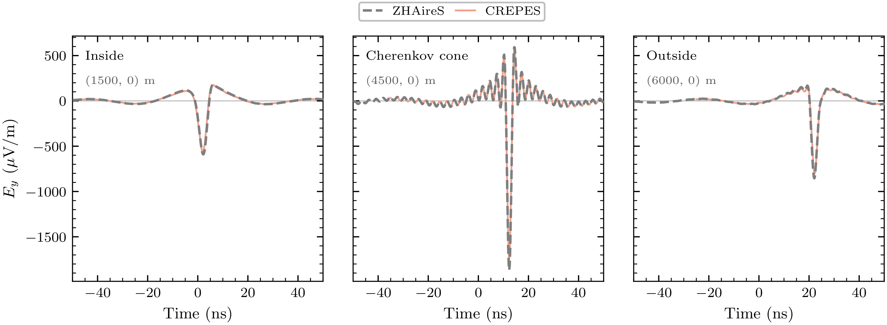<br />
图注：Y-polarization (geomagnetic) of the electric field of a 1 EeV proton shower at 80 degree zenith with a vertical magnetic field of 50 $\mu$T for ZHAireS and CREPES. Three cases are shown (from left to right): observers inside, at, and outside the Cherenkov cone. Only a global shift has been applied to all traces to align results.<br />
对应解读：建议重点查看的图表第3项“CREPES 与微观计算的波形对比图”；关键图表逐图导读中的图3；模型拟合段落关于时域电场波形拟合与相位、幅度误差。<br />
入选理由：这是候选图中最直接检验 CREPES 高保真度的图，明确比较 ZHAireS 与 CREPES 的电场时域波形，并且覆盖切伦科夫锥内、锥上和锥外三个观测位置。它能直接支撑日报中关于峰值幅度、相位偏移、脉冲宽度和切伦科夫相关系统偏差的解读，比单纯粒子分布图更接近最终射电重建量。<br />
来源与置信度：\(arxiv_source\)；high；\(arxiv_source\) / main.tex:figure[9]</p>
<p><strong>Fig02</strong><br />
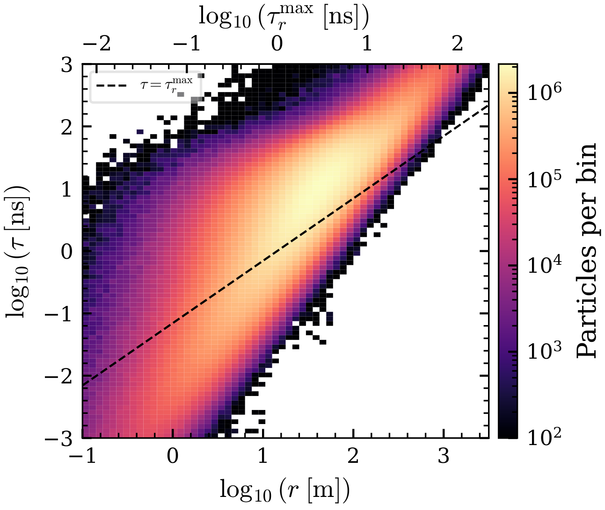<br />
图注：Average distribution of electrons and positrons at 700 g/cm2 for a 1 EeV proton shower as a function of radial position and shower front delay. The upper $x$-axis corresponds to the maximum radial delay for a given radial position for an observer placed at the Cherenkov angle. The dotted black line delimits the points in which particles have equal shower front delay and maximum radial delay.<br />
对应解读：建议重点查看的图表第2项“横向粒子分布或相空间分布图”；关键图表逐图导读中的图2；详细解读中关于预计算电子/正电子分布和相干性控制量的段落。<br />
入选理由：该图展示电子和正电子在径向位置与簇射前沿延迟二维空间中的平均分布，并标出与切伦科夫角观测相关的最大径向延迟，是理解 CREPES 预计算分布如何覆盖主要辐射贡献区的核心图。它直接对应日报强调的小半径、切伦科夫相关区域和低密度相位敏感区域。<br />
来源与置信度：\(arxiv_source\)；high；\(arxiv_source\) / main.tex:figure[2]</p>
<p><strong>Fig07</strong><br />
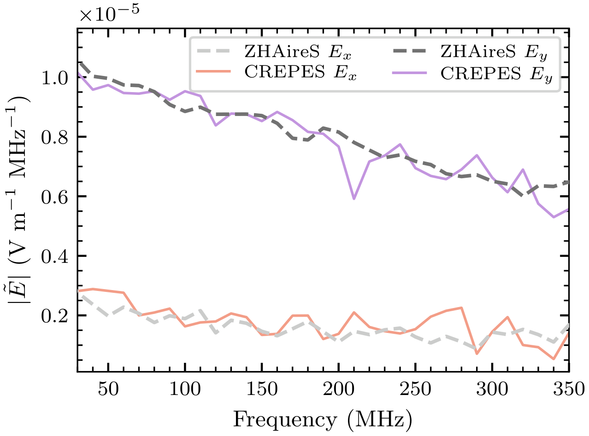<br />
图注：Comparison between ZHAireS and CREPES of the electric field spectrum from a 1 EeV proton vertical shower for an antenna located at (50,50) m at sea level altitude.<br />
对应解读：建议重点查看的图表第5项“频谱或频带积分量对比图”；关键图表逐图导读中的图5；模型拟合段落关于频域幅度似然和高频相干损失。<br />
入选理由：该图直接比较 ZHAireS 与 CREPES 的电场频谱，适合检查低频到高频端的幅度一致性。频谱误差对宽带射电重建和实验频带选择很关键，因此它比仅描述粒子分布的图更能验证算法能否用于实际观测模板生成。<br />
来源与置信度：\(arxiv_source\)；high；\(arxiv_source\) / main.tex:figure[7]</p>
<p><strong>Fig08</strong><br />
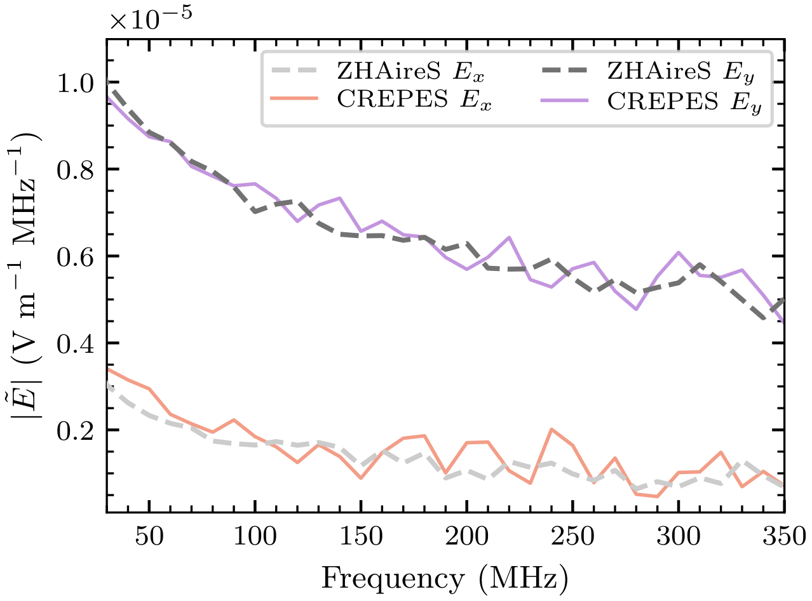<br />
图注：Comparison between ZHAireS and CREPES of the electric field spectrum from a 1 EeV proton vertical shower for an antenna located at (100,0) m at sea level altitude.<br />
对应解读：建议重点查看的图表第5项“频谱或频带积分量对比图”；关键图表逐图导读中的图5；详细解读中关于不同观测几何和阵列配置下快速评估的段落。<br />
入选理由：该图同样是 ZHAireS 与 CREPES 的频谱比较，但观测天线位置不同于 Fig07，可用于判断频域一致性是否依赖特定观测点。与 Fig07 组合后，可以更好地支撑日报中关于空间位置、频带和高频误差稳定性的讨论。<br />
来源与置信度：\(arxiv_source\)；high；\(arxiv_source\) / main.tex:figure[8]</p>
<p><strong>Fig05</strong><br />
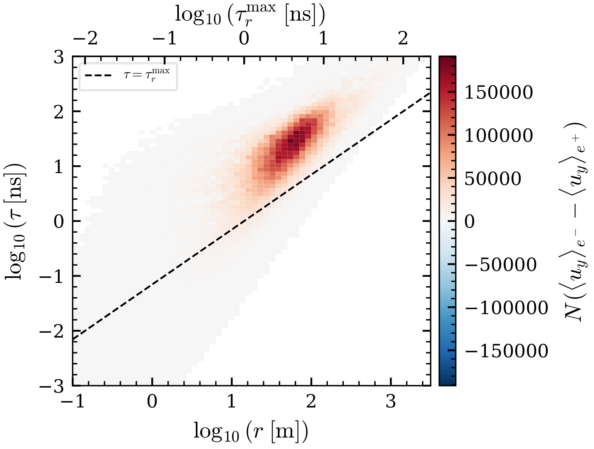<br />
图注：Visualization of the geomagnetic current density terms as a function of radial position in the shower axis and shower front delay. Distribution taken at 700 g/cm2 for a 1 EeV vertical proton shower.<br />
对应解读：建议重点查看的图表第2项“横向粒子分布或相空间分布图”；详细解读中关于地磁辐射机制和粒子分布预计算的段落。<br />
入选理由：该图给出地磁电流密度项随径向位置和簇射前沿延迟的分布，直接连接粒子相空间结构与主导射电发射机制。它比普通粒子数分布更贴近电场产生项，有助于解释 CREPES 为什么可以通过预计算电子/正电子分布来复现微观辐射。<br />
来源与置信度：\(arxiv_source\)；high；\(arxiv_source\) / main.tex:figure[5]</p>
<p><strong>Fig10</strong><br />
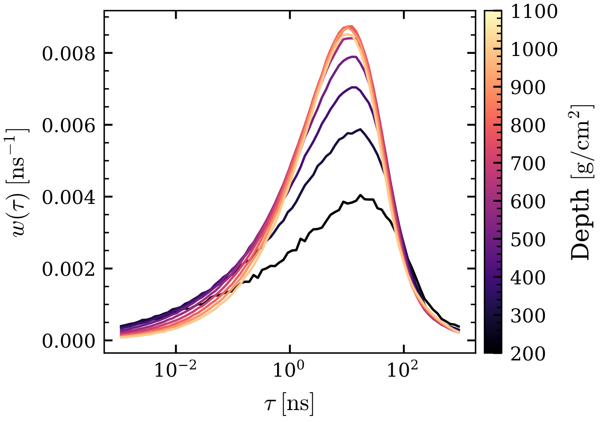<br />
图注：Evolution with depth of the shower front delay distribution for a vertical 1 EeV proton shower run with ZHAireS.<br />
对应解读：建议重点查看的图表第1项“簇射纵向发展图”；关键图表逐图导读中的图1；详细解读中关于簇射解剖和纵向发展决定辐射贡献区的段落。<br />
入选理由：虽然该图不是直接的电子/正电子总数纵向发展图，但它展示了簇射前沿延迟分布随大气深度的演化，补充了纵向发展中的时间结构信息。射电相干性不仅由粒子数决定，也强烈依赖时间延迟，因此该图能支撑日报中提醒读者不要只看总粒子数的解读。<br />
来源与置信度：\(arxiv_source\)；high；\(arxiv_source\) / main.tex:figure[10]</p>
<h4 id="_89">强相关工作</h4>
<p>这篇工作与 CoREAS、ZHAireS、SELFAS 等微观或半微观射电模拟传统直接相关。相似工作的核心问题是如何在精确描述地磁辐射、电荷过剩辐射和折射率效应的同时，降低大样本模拟成本。建议检索关键词包括 “CoREAS radio emission air showers”， “ZHAireS Askaryan geomagnetic radio emission”， “radio detection cosmic rays simulation”， “air shower radio footprint fast simulation” 和 “extensive air shower radio template reconstruction”。</p>
<p>它也与实验阵列的模拟需求相关，例如 AERA、LOFAR cosmic-ray mode、Tunka-Rex、CODALEMA、GRAND 和 AugerPrime Radio。已有张力通常不表现为“机制相反”，而是表现为不同模拟工具、不同大气模型和不同实验校准之间的系统差异。读者应把 CREPES 放在这个背景下理解：它若要成为生产级工具，需要与金标准微观模拟和真实数据重建残差同时对齐，而不能只在内部基准上表现良好。</p>
<p>这不是同一事件或同一源论文，而是同一类源和同一探测技术的方法论文。可检索综述关键词包括 “radio detection of cosmic rays review”， “ultra-high-energy cosmic rays radio arrays review”， “extensive air shower radio emission review”。若追溯基础理论，还应查地磁辐射模型、Askaryan effect、大气簇射 Gaisser-Hillas 参数化和 Monte Carlo shower simulation 的经典文献。</p>
<p><strong>同一事件 / 同类源线索</strong>：</p>
<ul>
<li><a href="https://arxiv.org/abs/2608.26077">https://arxiv.org/abs/2608.26077</a></li>
<li><a href="https://arxiv.org/pdf/2608.26077">https://arxiv.org/pdf/2608.26077</a></li>
</ul>
<p><strong>相似工作</strong>：</p>
<ul>
<li><a href="https://www.iap.kit.edu/corsika/">https://www.iap.kit.edu/corsika/</a></li>
</ul>
<p><strong>基础理论 / 方法工作</strong>：</p>
<ul>
<li><a href="https://www.auger.org/">https://www.auger.org/</a></li>
<li><a href="https://www.grand-observatory.org/">https://www.grand-observatory.org/</a></li>
</ul>
<p><strong>相反观点 / 张力线索</strong>：</p>
<p>（未提供）</p>
</details>
<h2 id="_90">说明</h2>
<p>评分由 LLM 给出初评，再由本地阈值策略过滤；IACT、TeV 伽马射线和高能中微子天文学按重点方向处理。</p>
    </main>
  </div>
</body>
</html>
